| カーミラ | |
| Ｊ･Ｓ･レ･ファニュ | |
| BOOKSORINDO (2015) | |
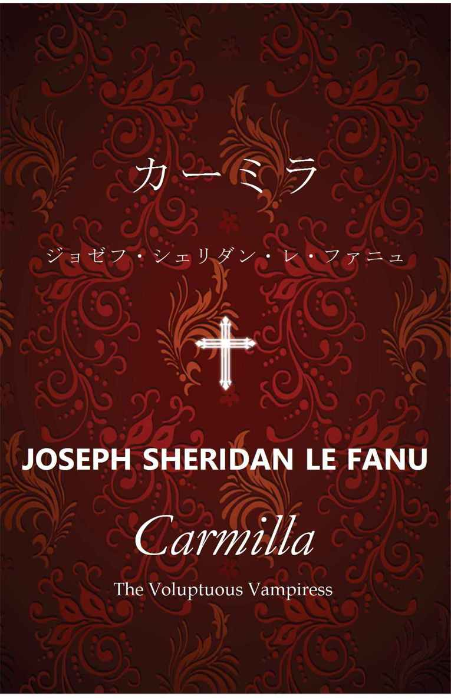
目次
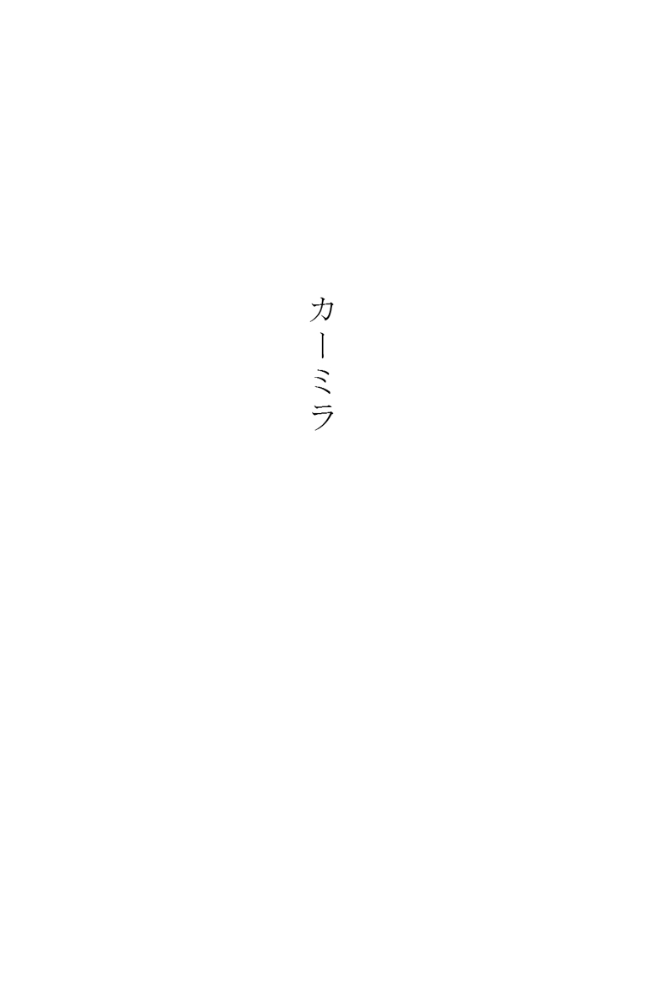
･
序章
私は医学、とりわけ内科と外科の専門教育を受けているが、どちらの分野でも実際に患者を診察した経験はない。しかしながら、両分野についての研究には今なお深い関心を持ち続けている。
私がこの医師という立派な職業を、その道を歩み始めてまもなく辞したのは、怠惰なせいでも、気まぐれのせいでもない。原因は、解剖刀によるごく小さな切り傷であった。このささいな傷がもとで、私は二本の指をその後すぐに切断しなければならなくなり、しかもそれだけでは済まず、健康な身体まで失ってしまった。それ以来私は病気がちで、転地療養のために同じ場所に一年以上留まることはめったにない。
そうして各地を転々と放浪する生活を送るうちに、私はマルティン・ヘッセリウス博士と知り合った。私と同じく放浪の身で、私と同じく医師であり、そしてこれもまた私と同じく、研究に情熱を注ぐ人である。私と違うところは、博士の放浪は自らの意思によるものであること、そして彼が資産家とまでは言わぬまでも、少なくとも昔風に言うならば「有閑貴族」の立場にあったことである。初めて会った時、博士はすでに老境にあり、私よりも三十五歳近く年上だった。
このマルティン・ヘッセリウス博士を、私は師と仰いだ。その知識の量は膨大であり、その観察眼は天才的だった。彼こそはまさに、医学の研究に情熱を燃やす私のような若輩が、畏怖を覚えつつも、その下で学ぶことに喜びを覚えるような人物であった。私の博士に対する尊敬の念は時を経ても薄らぐことなく、死別を乗り越えて、今なお揺るぎない。
二十年近くの間、私は博士の助手を務めていた。その膨大な量の著作を整理し、索引を付け、本にまとめるのは残された私の仕事である。※※
ここに一篇の手記を紹介する。ヘッセリウス博士はこの手記にかなり詳細な注釈を付しており、そしてそこには、この手記に書かれている奇妙な病例について博士自身の著した小論文が参考資料として挙げられている。
この奇妙な病例を、博士はその小論の中で、持ち前の学識と洞察力とをもって極めて簡明直截に論じている。これはこの学会の巨星の著作集の中でも、それだけで一巻をなすに値するであろう。
この病例を本書で一般読者向けに公表するにあたり、手記の作者である聡明なご婦人を先おいて、ここでその内容に触れることはしない。また十分に検討を重ねた結果、ヘッセリウス博士の論文の要約を提示すること、またこの病例に対する博士の言説を引用することについても控えることにした。ただ一つだけ、ここで博士の言葉を借りるならば、この病例は、「ことによると、生と死というわれわれの二種の存在様態、そしてその狭間に在る者たちの極めて深遠なる秘密、その核心の一端に触れる」ものであるという。
この手記を発見した私は、遠い昔、ヘッセリウス博士がこの病例の報告者とおぼしき聡明にして慎重な人物と始めた書簡のやりとりを再開したいと願っていた。しかしながら、まことに残念なことに、その女性はすでに他界していることがわかった。
しかし、これほどまでに真率にして詳細に書かれた手記には、おそらく当の女性本人も、ほとんど付け足すことはなかったのではないだろうか。
第一章 邂逅
･
ここオーストリアのシュタイアーマルク州で、わたくしどもはとりわけ由緒ある一族というわけでもございませんが、こちらでは「シュロス」と呼ばれるお城に住んでおります。この地方ではわずかな収入でも立派に暮らしていけるのでございます。年に八百か九百ポンドあれば貴族のような暮らしができます。これが本国となりますと、わたくしどもの懐具合ではたいそうつましい暮らししかできないでしょう。
本国と申しましたのは、父がイギリス人だからでございます。わたくしもイギリス名を授かっておりますが、彼の地を目にしたことはございません。ですが、辺鄙で荒涼としたここシュタイアーマルクではとにかく何もかもが驚くほどに安いので、そんなにたくさんのお金がありましても、わたくしどもの生活がこれ以上楽になるとは思えませんし、ましてやこれ以上の贅沢など想像もつきません。
父はオーストリアの軍隊におりましたが、退役した後に軍人恩給と先代の遺産を元手に、この年代物のお城を周辺の敷地ともどもたいそうな安値で購入いたしました。
それにしましても、これほど風景の美しく、またわびしい土地はまたとございませんでしょう。わたくしどものお城は森の中の小さな高台に建っております。たいそう古く、幅の狭い道が一本、お城の跳ね橋の前を通っておりますが、この跳ね橋は、わたくしどもの住んでいる間はついに一度も上げることはございませんでした。魚たちの泳ぐお濠にはたくさんの白鳥たちが悠々と行き来し、水面に浮かぶ睡蓮の花々はさながら白い船団のようでございます。そしてお濠から目を上方へと移しますと、たくさんの窓が並び、塔やゴシック様式の礼拝堂を備えたお城の正面がそびえております。
門の前は木々が開けておりまして、大地が起伏を描く、絵画のように美しい空き地が広がっております。右手にはゴシック様式の、急勾配の反り橋が、森の深い闇の中を蛇行しながら流れていく小川をまたいでおりまして、お城の前を走る道はその橋を渡って向こう岸へと続いております。
わたくしは先ほど、ここはとても寂しい土地だと申しましたが、これをお読みになればそれが本当かどうかおわかりいただけるのではないでしょうか。門の前に立って道の方を向きますと、わたくしどものお城の建っております森は右手に二十五キロ、左に二十キロ広がっております。最寄りの人の住んでいる村落は、およそ十一キロ左手にございます。人の住んでいる、いくらかでも歴史のあるお城で最寄りのものはシュピールスドルフ老将軍のお城で、こちらは右手におよそ三十キロ先にございます。
「最寄りの人の住んでいる村落」と申しましたが、それは、西の方角、つまりシュピールスドルフ将軍のお城のある方角に五キロも行きますと、廃村が一つあるからでございます。古風で小さな礼拝堂は今や屋根も落ち、堂内の通路には、高貴なるカルンシュタイン一族の朽ちかけたお墓が並んでおります。カルンシュタイン家はかつてのこのあたりの領主で、近くにお城を構えておりましたが、今はその血筋も絶え、この村と同じく廃墟と化したお城は、森の奥から静まり返った村の跡を見下ろしております。
この荒涼として印象深い風景の村が廃れてしまった原因に因んで一つの言い伝えがございますが、それはまた後々お話しいたしましょう。
ここではまず、わたくしどものお城の住人がいかに少ないかについてお話ししておきます。使用人や、お城に付属する建物に住んでおります食客たちは数に入れません。お聞きになったらきっと驚かれることでしょう。世にも優しい、初老の父。そして、この物語当時まだほんの十九歳だったわたくし。あれから八年の歳月が過ぎました。
お城に住んでおります家族は、わたくしと父の二人だけでございました。母はこの地の出身で、わたくしがまだ物心がつく前に亡くなっておりましたが、それでもわたくしには、やはり物心つく以前から、面倒見のいい女性の家庭教師がずっとそばにいてくれました。記憶を辿れば、彼女の人の良さそうな丸顔が、お馴染みの光景としていつもそこにございます。
この方はペロドン夫人と申します。スイスのベルン生まれの、世話好きで気立てのいい彼女は、わたくしにとりまして、あまりにも早くに死に別れてもはや面影も覚えていない母の代わりのような存在でございます。ペロドン夫人は、我が家のささやかな晩餐のテーブルを囲む第三の人物です。四人目はデ・ラフォンテーヌ嬢で、彼女はいわゆる「花嫁教育」の担当と申しましょうか、良家の子女に教養や礼儀作法を教える先生でございます。
ラフォンテーヌ先生はフランス語とドイツ語をお話しになり、ペロドン夫人はフランス語と片言の英語、そしてそこに、父とわたくしが話す英語が加わります。母国語がお城の中で廃れてしまわないようにという思いが半分、愛国心半分で、わたくしたちは普段は英語を話しておりました。その結果、お城の中はさながらバベルの塔のようなありさまで、お客さまはよく笑っていらっしゃいましたが、それをこの手記の中で再現するつもりはございません。
その他にも、だいたいわたくしと同じくらいの年頃の女友達が二、三人おりまして、ときおりわたくしどものお城に遊びに来て、長かれ短かれ滞在していきます。時にはわたくしが先方にお邪魔することもございます。
これがわたくしの交友関係の主だった顔ぶれでございます。もちろん、時おり「ご近所」の方々が（とは申しましても二十キロから三十キロは離れておりますが）顔を見せてくださることもございます。それでもやはり、はっきり申しまして、わたくしはかなり寂しい日々を送っております。
わたくしの二人の先生がたは、あれこれと多くの面でしっかりとわたくしの手綱を握っておられました。世慣れたお二人にしてみれば、わたくしのように、片親から何でも言うことを聞いてもらえて、いささか甘やかされて育った娘を預かった場合には当然のことでしたでしょう。
わたくしの人生で最初に強く印象に残った出来事は、思い出せる限りで一番古い記憶の一つなのですが、これは今なお消えることのないほど、それはそれは深く心に刻み込まれております。ささいなことですから、わざわざここに記すほどのことではないとお思いになるかもしれません。しかしながら、なぜわたくしがそのことに触れるのか、じきにおわかりいただけることと存じます。
お城の上階に、楢材張りの斜め天井のある広いお部屋がございまして、ここが子供部屋になっておりました。子供部屋と申しましてもわたくしは一人っ子でございますので、わたくしが一人で使っておりました。
わたくしがまだせいぜい六歳くらいの頃だったでしょうか、ある夜目が覚めて、ベッドの中から部屋の中を見回してみますと、子供部屋付きの女中の姿が見えません。子守もおらず、わたくしは自分が独りぼっちなのだと思いました。それでも怖くはありませんでした。と申しますのも、わたくしは怪談やらおとぎ話やら、そうした類いのお話からは慎重に遠ざけられて無邪気に育った子供でしたので、扉がふと軋んだり、消えかけた蝋燭の火が揺らめいて、壁に映るベッドの柱の影が近づいてくるような気がしたりして、怖くて布団に潜り込むようなことはなかったのです。
わたくしは自分が放ったらかしにされたのだと思ってめそめそと泣き始め、さあいよいよありったけの大声で泣き出そうかという、その時でした。驚いたことに、凜とした雰囲気の、それでいてとても美しい顔が、ベッド脇からわたくしをじっと見つめているではございませんか。
それは若いお嬢さんのお顔で、彼女はベッドの脇に膝をつき、上掛けの下に手を入れておりました。わたくしは驚きつつもうっとりしたようにその顔を見つめ、そうしているうちに泣き止みました。彼女はわたくしを撫でてくれまして、わたくしの隣に横になって、わたくしの身体を抱き寄せてにっこりと微笑みました。今泣いた鴉が何とやらで、わたくしはころりと再び眠りに落ちましたが、やがて二本の針で、同時に胸を深々と刺し貫かれるような感覚に目を覚まし、大きな悲鳴を上げました。お嬢さんははっとして身を退き、わたくしを見据えたままするりと床に下りて、ベッドの下に隠れたようでございました。
ここに来てわたくしはようやく恐怖を覚えまして、声の限りに泣きわめきました。子守と、子供部屋付きの女中と、家政婦の三人がそろって部屋に駆けつけてきてくれましたが、三人ともあれこれと言ってわたくしをあやすばかりで、わたくしの話にはまともに取り合ってくれません。ですが、わたくしは三人が青ざめた顔に珍しく不安そうな表情を浮かべていることを子供ながらに見て取りましたし、三人がベッドの下を覗き込んだり、部屋の中を見回したり、テーブルの下を覗いたり戸棚を開けて回ったりするのもいぶかしく思いました。家政婦が子守に小声でこう言っているのも耳にしました。「あそこのベッドの窪みに触ってごらんなさいよ。確かに誰かがいたんだわ。まだ温かいもの」
子守に撫でさすってもらいながら、三人の女たちに先ほど刺されたような感じのしたあたりを調べられましたが、そのような跡はないと言われましたのを覚えております。
三人は朝までひと晩中寝ずの番をしてくれました。その日以来、夜は誰か女中が一人、子供部屋に付き添うのが習慣になり、それはわたくしが十四歳になるまで続きました。
この一件が起こってからというもの、わたくしは長い間ひどくびくびくしておりました。お医者さまが呼ばれまして、蒼白な顔の、お年を召した先生がいらっしゃいました。先生の天然痘の跡のわずかに残る生真面目そうなお顔と、栗色の髪の鬘は、今でもよく覚えております。しばらくの間、先生は一日おきにいらっしゃいまして、わたくしにお薬をくださいましたが、言うまでもなく、わたくしはそれが嫌で仕方がありませんでした。
あの何者かを見た翌朝、わたくしはすっかり怯えきっておりまして、陽が出ておりますにもかかわらず、一瞬たりとも一人きりになることに耐えられませんでした。
父がベッド脇に立って、陽気に話をしながら、子守にあれこれと質問をし、その答えの一つに楽しそうに笑っていたのを覚えております。それから父はわたくしの肩を軽く叩き、口づけをして、あれはただの害のない夢だったのだから、怖がることはないと言いました。
それでもわたくしの心は休まりませんでした。あの見知らぬ若い女性の訪問が夢ではなかったことは、子供心にもはっきりと確信しておりましたから、怖くて怖くて仕方がありませんでした。
しかしながら、子供部屋付きの女中から、あの夜部屋の様子を見に来て、ベッドで一緒に横になっていたのは自分であって、わたくしは寝ぼけていて顔がわからなかったのだと言われた時には少し気が楽になりました。子守も同じことを言っておりましたが、それでもやはり不安は消えませんでした。
その日のうちに、黒い祭服姿の威厳のあるご老人が一人、子守と家政婦と一緒に子供部屋にいらっしゃいまして、二人と軽く言葉を交わされ、わたくしにとても優しく話しかけてくださいました。そのお顔はたいそう優しく穏やかで、みんなでお祈りをしようとおっしゃいまして、わたくしの手を組み合わせて、そっと、祈りの間にこう言うようにとおっしゃいました。「主よ。我らの願いを聞き入れたまえ。イエスのために」と。これはそっくりそのまま暗記しております。たびたび自分で繰り返し口にしておりましたし、それから何年もの間、お祈りの際にはその文句を唱えるようにと子守から言われておりましたから、よく覚えております。
あの白髪に黒い祭服姿のご老人の、思いやりある優しげなお顔――天井の高い、粗い栗色の羽目板張りの部屋で、小さな格子窓からわずかな光の射し込むばかりの薄暗がりの中、三百年前の古めかしい調度類に囲まれて立っておられるそのお姿は、今でも瞼に浮かんでまいります。ご老人が床にお膝をつかれますと、わたくしたち三人の女たちもそれにならって、そして彼は真摯な、震える声で祈りの言葉をお唱えになるのですが、それがわたくしにはずいぶんと長く感じられたものでした。自分の人生について、それ以前に起こったことは何一つ覚えておりませんし、その後しばらくの間のことについても記憶は曖昧なのですが、それでも右に記しました場面だけは、まるで暗闇の中で巡る走馬灯の映像のように、心の中にくっきりと浮かび上がっております。
第二章 客人
･
これからお話しいたします物語はあまりにも奇妙でございますので、わたくしが真実を語っていることに対して全幅の信頼をいただけない限り、とても信じられないのではないかと存じます。しかしながら、これはただ事実というだけでなく、わたくしがこの目で目撃し、この身をもって体験した、ありのままの真実なのでございます。
とある心地良い夏の夜のことでございます。父が前述いたしました、お城の前に広がっております美しい森の風景の中を少し散歩しないかとわたくしを誘いました。父はたびたびそうやってわたくしを散歩に連れ出していたのでございます。
「シュピールスドルフ将軍は予定よりも来るのが遅くなるそうだよ」父は歩きながらそう言いました。
将軍はわたくしどものお城に数週間滞在されることになっておりまして、翌日にこちらにお着きになる予定でございました。将軍の姪御さんで、彼が後見人となっておられますベルタ・ラインフェルト嬢も一緒にいらっしゃることになっておりまして、わたくしはまだお会いしたことはございませんでしたけれども、とても素敵なお嬢さんだと聞いておりましたから、一緒に楽しい日々を過ごせるだろうと楽しみにしておりました。わたくしの落胆のほどは、先生のようににぎやかな都会にお住まいの方にはおわかりいただけませんでしょう。今回の滞在のこと、そしてそれがもたらしてくれる新たな出会いのことを、わたくしはもう何週間も夢にまで見ていたくらいなのです。
「いつ頃いらっしゃるの？」わたくしは尋ねました。
「秋になるそうだ。きっとあと二ヶ月は無理だろう。それにこうなってしまっては、おまえがラインフェルト嬢のことを知らなくて本当によかったと思うよ」
「どうして？」失意と好奇心のない交ぜになった気持ちで、わたくしは尋ねました。
「かわいそうに、お嬢さんは亡くなって――そうだった。おまえには話していなかったんだったね。今日の夕方に将軍からの手紙が届いた時にいなかったものだから」
わたくしは頭が真っ白になりました。確かに六、七週間前に届きました将軍からの最初のお手紙には、ベルタ嬢の具合が思わしくない由が書かれておりましたが、それでも命に危険の及ぶような兆候は何一つ見られないとのことでございました。
「これがその手紙だ」そう言って、父は一通の手紙をわたくしに差し出しました。「将軍はずいぶんと取り乱しているようだ。ほとんど錯乱状態で書かれたようにしか思えない文章だよ」
わたくしたちは立派な菩提樹の木々の下の、粗い丸太のベンチに腰かけました。沈みゆく夕陽が、空をしっとりと黄金色に染めながら、海原のように広がる森の、その緑の水平線の向こうに沈んでいきます。お城の脇を通って古い反り橋の下をくぐり、荘厳たる大樹の根元を縫うようにしてくねくねとわたくしたちの足下を流れていく小川の面には、薄れゆく夕空の茜色が映り込んでおりました。
シュピールスドルフ将軍のお手紙はあまりにも支離滅裂で、あまりにも激しく、そこここにひどく矛盾したところもございまして、わたくしは一度目を通した後で、もう一度、今度は父に聞こえるように声を出して読み返してみましたが、それでも意味がわからず、悲しみのあまりに心が乱れていらっしゃるのだろうとしか考えられませんでした。
以下がその文面でございます――
我が子同然に愛していたベルタを失ってしまった。病に伏したあの子を看取ってやるために、これまで君に手紙を書くことができなかった。
こうなってしまうまで、あの子の身が危ないなどとは思いもしなかった。あの子を失ってしまってから、遅まきながらすべてを察した。あの子は何も知ることなく、祝福された未来へ輝かしい希望を抱きながら、安らかに眠った。すべては、われわれの心尽くしのもてなしを仇で返したあの悪魔の仕業だ。私は我が家に、純真で、陽気で、亡きベルタの素敵な友達を招き入れたつもりだったのだ。天よ！ 私はなんと愚かであったか。
あの子が自らの病の原因を何ら疑うことなく死んでいったのは不幸中の幸いだった。あの子は自分の身体を蝕む病の正体も、この悲劇をもたらしたのが何者であるのかについても、まったく何も知らないまま逝った。私は自分に残された日々を、あの化け物を探し出し、この世から消し去ることに捧げよう。聞けば、この正当にして敬虔なる目的を果たす望みはあるかもしれないという。しかし今のところは暗中模索の状態だ。
ああ、慢心ゆえに意固地で、唾棄すべき優越感に浸り、盲目で、頑固だった自分が――自分の何もかもが、今さらながらに憎らしい。今は心が千々に乱れてしまって、冷静に書くことも話すこともできない。いくらか落ち着きを取り戻したら、しばらくの間調査に専念するつもりだが、そのためにウィーンまで行くことになるかもしれない。今から二ヶ月後、秋頃にまた会おう。もし私が生きていれば、もっと早くに会えるかもしれないが――もしも君が会ってくれるのであれば、その時に、今はここに記すことのできない恐るべき真相のすべてを話そう。
さようなら。親愛なる友よ、私のために祈っていてくれたまえ。
この結びの言葉で、奇妙なお手紙は終わっておりました。わたくしはベルタ・ラインフェルト嬢とは面識はございませんでしたが、それでも突然の悲報に涙が溢れそうになっておりました。深い失望を感じながらも、あまりのことに茫然としてもおりました。
すでに太陽は沈み、将軍のお手紙を父に返す頃には、あたりは夕闇に包まれておりました。
穏やかで空気の澄んだ晩でしたので、わたくしたちはのんびりと歩きながら、たった今読んだばかりの、激情と矛盾とに溢れた文章にいったいどのような意味が込められているのか、それぞれに思いを巡らせておりました。お城の前を通っております道まではまだずいぶんと距離がございましたから、帰り着く頃には月が煌々と輝いておりました。跳ね橋の前に、ペロドン夫人とラフォンテーヌ先生が立っていらっしゃいました。二人ともボンネットもかぶらず、得も言われぬほどに美しい月を愛でておられます。
そちらに近づくにつれ、二人の快活なおしゃべりの声が聞こえてきました。わたくしと父も跳ね橋の前で二人と一緒に立って、振り返って月明かりに照らされた景色を眺めました。
そこには、わたくしたちが今まで歩いてきた草原が広がっておりました。左手を見ますと、細い道が堂々たる樹々の下をうねうねと伸びていき、やがて木深い森の奥に消えていきます。右手には、その同じ道があの風情あるたたずまいの反り橋を渡って続いており、橋のたもとには、かつてこの往来を見張っておりました物見の塔の跡が残っております。橋の向こう側では地面が急に盛り上がって木々に覆われた丘になっておりまして、幹の合間の薄闇に、蔦のからまる岩がところどころに覗いております。
草原や窪地の上には、うっすらとした靄が煙のように漂っており、遠くの景色はまるで薄絹のベールをかけたように霞んで見えます。おぼろに滲む風景の中、月光を浴びた川面がそこかしこで淡くきらめいております。
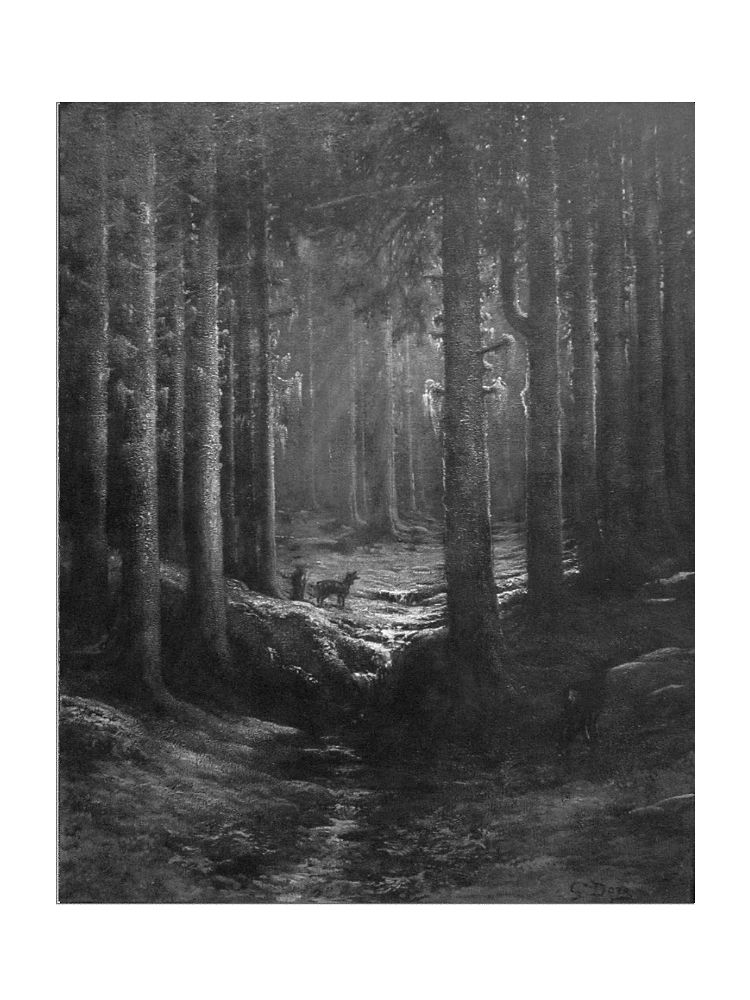
これほど穏やかで幻想的な風景はまたとございませんでしょう。あたりがしめやかな雰囲気に包まれているように思えるのは、今しがたの悲報のせいでしょうか。それでも、その風景の深遠なる静謐さ、神秘的で幽玄なる美しさは、何をもってしても乱すことはかないません。
父とわたくしは、眼下に広がるこの絵画のような風景を無言のまま見下ろしておりました。わたくしどものやや後方に立っておられます先生がたは、互いにその景色について感想を述べられ、月を褒めそやしておられました。
ペロドン夫人はふくよかな身体つきの中年の女性で、情感豊かな彼女はまるで詩を吟ずるようなお話しの仕方で、感極まって溜め息をついたりもしていらっしゃいました。一方のラフォンテーヌ先生は、お父さまがドイツの方ということもありまして、内向的で、空想的で、いくらか迷信深いところもございますようで、ちょうど今も、月がこれほど煌々と輝く夜には、精神が特別な働きをするのだとおっしゃっています。いわく、このような明月の夜には、満月の影響力は何倍にもなるのだそうでございます。それは夢に、狂気に、神経質な人々に影響を及ぼし、心の中ではなく実際の身体に、何らかの影響を及ぼすのだとか。なんでも、商船の航海士でいらっしゃいます先生の従兄は、このような月夜に甲板の上で仰向けに寝そべり、満月を顔に一杯に浴びながらうとうとしておりましたところ、老女に一方の頬を引っかかれる夢を見まして、目を覚ましてみると、なんと、そちら側の顔が引きつっていたのだそうで、その後も顔はもとに戻ることはなかったそうでございます。
「今夜の月は穏やかな霊気に満ちていますわ――ほら、お城の正面を振り返ってごらんなさいな。窓という窓がみんな銀色にきらきらと輝いて、まるで妖精のお客さまを迎えるために、見えない手で灯りが灯されているみたいじゃありませんか」
誰しも、自分で口を開くのはおっくうでも、ぼんやりした耳には他の人の話す声が心地よく感じられる、そんな物憂げな心持ちになることがございます。この時はわたくしも、鈴の音のようなお二人の話し声を聞きながらなおも景色を眺めておりました。
「今夜は憂鬱な気分だよ」しばしの沈黙の後に父は言い、それから『ベニスの商人』でしたでしょうか、シェイクスピアの一節を暗誦しました。父は英語がなまってしまわないようにと、かの文豪の作品をよく声に出して読み上げていたのでございます。
まこと、我何故かくも悲しきや。
我と汝を蝕みし、身に覚えなき鬱の気に
何時何処にてかかりしか――
「あとは忘れてしまった。でも、何か大きな災いがわれわれの頭上に垂れ込めているような気がする。たぶん、哀れな将軍の苦悩に満ちた手紙を読んだせいだろう」
その時、このあたりでは珍しい馬車の車輪の音と、路面を蹴るたくさんの蹄の音がわたくしたちの耳を引きつけました。
それは橋を見下ろす丘の方から近づいてくるようで、ほどなく、そちらから旅の一団が現れました。まずはそれぞれ馬に乗った二人の先導役が橋を渡り、次に四頭立ての馬車が一台見えまして、さらにその後から二人の乗り手が馬を駆っておりました。
それはどなたか身分あるお方の御一行のようで、わたくしたちはすぐさま、このたいそう珍しい光景に見入ってしまいましたが、しばらくすると、もうそちらから目が離せなくなりました。と申しますのも、馬車がちょうど反り橋のてっぺんを過ぎたところで、先頭で馬車を引く二頭の馬のうちの一頭が何かに驚いて暴れ始め、一、二度勢いよく前に飛び出そうとしたのです。するとその怯えが他の馬たちにも伝わって、四頭が一斉にものすごい勢いで駆け出し、先導役の二人の騎手の間を駆け抜けて、蹄の音を轟かせながら、竜巻さながらの勢いでわたくしたちめがけて突進してきたのでございます。
馬車の窓から澄んだ、長く尾を引く女性の悲鳴が上がりまして、場面はいよいよ緊迫してまいりました。
わたくしたちは好奇心と恐怖のあまりみな一斉に前に進み出ました。わたくしはほとんど声も出せませんでしたが、他の三人は口々に恐怖の声を上げておりました。
息の詰まるような間は長くは続きませんでした。一行の走ってまいります道には、お城の跳ね橋の手前のところに堂々たる菩提樹が一本立っており、道を挟んで反対側には、古びた石造りの十字架が立っております。その十字架を見ると、今や本当にはらはらするような勢いで駆けていた馬たちはそれを避けるように向きを変え、馬車の車輪は盛り上がった大樹の根に乗り上げてしまいました。
それ以上は見ていられませんでした。わたくしは両手で目を覆い、顔を背けました。それと時を同じくして、わたくしよりも少し前に出ておられました二人の先生がたの悲鳴が聞こえました。
好奇心に瞼を上げてみますと、目の前に惨状が広がっておりました。馬車を引いていた馬のうちの二頭が地面に倒れ、馬車は横倒しになって車輪が宙に投げ出されておりました。男たちは馬たちをつないでいる革紐を解こうと忙しく、威風堂々たるたたずまいの貴婦人が一人、車からお出でになって立ち尽くされ、両手を握りしめられて、その手に握られたハンカチをしきりに目に当てておられました。
この時、馬車の扉口から一人の若いお嬢さんが運び出されましたが、一見したところでは息をしておられないようでございした。父はすでに年配の貴婦人のそばに脱いだ帽子を手に持って立っておりまして、どうやら助けを申し出て、お城に案内しようとしているようでございます。ですが貴婦人の方は道端の斜面に横たえられているほっそりとしたお嬢さんのことばかりをお気にかけていらっしゃるのか、父の話もお耳に入らないご様子でございました。
そちらに近づいてみますと、若いお嬢さんは見たところ気を失っておいでのようでしたが、生きていらっしゃることは間違いございませんでした。父は多少の医学の心得がございまして、お嬢さんの手首を取って脈を調べ、そのお母さまだとおっしゃいます年配の貴婦人に向かって、弱くて不規則ではあるけれども、脈拍ははっきりと確認できるから心配ないと請け合いました。ご婦人はそれを聞いて手を組み合わせられ、束の間の感謝の想いを伝えようとされるかのように天を仰がれました。やがてすぐにまたうつむいて泣き出されたのですが、そのご様子が芝居がかっておりまして、自然に振る舞ってもそういう風に見えてしまう方がときどきいらっしゃいますから、この方もそうなのだろうと存じます。
ご婦人はお年の割にはきれいな方で、きっとお若い頃は美人でいらしたのでしょう。長身ですが身体つきは華奢ではなく、黒い天鵞絨のマントに身を包んでおられまして、お顔の色はやや青ざめ、今はそこに奇妙に動揺した表情が浮かんでおりますが、お顔の造作は凜として気品のある感じでございました。
「これほど不幸な星の下に生まれた者がありましょうか」そちらに近づいていくと、彼女が両手を握り合わせたままそうおっしゃっているのが聞こえました。「わたくしは今、一刻の猶予もならぬほど危急の旅の途上にあるのです。いつ終わるともしれぬ旅ですから、この子にこのまま旅を続けさせるわけにはいきません。この子は置いていかなくてはなりません。何としても遅れるわけにはいかないのです。申し訳ありませんが、最寄りの村までどれくらい離れているのか教えていただけませんか。娘はそこに預けていきます。三ヶ月後に戻ってくるまで、この子とはしばしの別れとなりましょう」
わたくしは父の上着の袖を引っ張って、その耳元にすがりつくようにして囁きました。「ねえ、パパ！ うちに預けてくださるように頼んでちょうだい。そうしてもらえたらどんなに嬉しいことか。お願いだから」
「奥さま。もしもお嬢さまを、私の娘と、娘の家庭教師のペロドン夫人に預けて、私の責任の下、奥さまがお戻りになられるまで私どものお客として留まることを許していただけるならば、私どもとしてはこれほどありがたいことはありませんし、私どももこれほどの尊き信頼に応えるべく、精一杯心を尽くしてお嬢さまのお世話をさせていただきます」
「それはなりません。それでは貴方のご厚意に一方的に甘えるばかりになってしまいますわ」ご婦人は心ここにあらずと言った口調でそうお答えになりました。
「それどころか、そうしていただけるなら、私どもにとっては渡りに舟のようなものなのです。ここにおります私の娘は、首を長くして待っていた客人に不幸がありまして、ちょうど落ち込んでいたところなのです。もしもお嬢さまを私どもにお預けくださいますなら、娘にとってこれ以上の慰めはありません。この先、最寄りの村まではまだまだ遠いですし、それにお嬢さまを預けておけるような宿屋もありません。かといってこのまま長旅を続けるのでは、お嬢さまのお身体に障るでしょう。奥さまが今おっしゃいましたように、どうしても旅を遅らせることができないのであれば、今夜お嬢さまをどこかに預けて旅を続けられるしかないでしょう。そしてそうするのであれば、私どものお城以上に心からのお世話をお約束できる場所はありません」
ご婦人は見た目も雰囲気もたいそう気品がございまして、堂々としていると言ってもいいほどでしたし、立ち居振る舞いもそれは優雅で、かなり高貴なご身分の方とお見受けいたしました。
この時分には、倒れていた馬車は元通りに起こされ、馬たちもたいそう従順で、おとなしくつながれておりました。
ご婦人はお嬢さまの方に目をお向けになりましたが、わたくしには、さっきお見かけした時とは打って変わって、その目つきにはそれほど愛情がこもっていないように思えました。それから彼女は小さく身振りで父を呼び寄せられ、こちらに聞こえないように少し離れたところに移動されました。そこでこれまでとは打って変わって固く険しい表情で、父とお話をしておられました。
わたくしは父が相手の変化に気づいていないらしいのが不思議でならず、またご婦人が、父の耳元にお顔を寄せられるようにして、ずいぶんと早口で、熱心に語っていらっしゃるのはいったい何のお話なのかと知りたくてうずうずしておりました。
貴婦人がそのようにしてお話をしていらしたのはせいぜい二、三分のことでしたでしょうか。やがて彼女は身を翻され、ペロドン夫人に膝枕をされて地面に横になっていらっしゃいますお嬢さまのもとへと歩いていかれると、そのそばにしばし膝をついてお嬢さまに囁きかけられ（ペロドン夫人は短い祝福の言葉だと思ったそうです）、それからそそくさとお嬢さまに口づけをされると、馬車にお乗りになられました。
扉が閉められ、立派なおそろいのお仕着せに身を包んだ召使いたちが後方の席に飛び乗り、先導役の乗り手たちが馬に拍車をかけ、御者が鞭を振るいますと、馬たちは今にもまた全速力で暴走しそうな勢いで駆け出し、やがて馬車は、二人の馬に乗った従者を従えて走り去っていきました。
第三章 再会
･
わたくしたちは見る見る遠ざかっていく馬車を見送り、やがて一行は霧に包まれた森の中に消えていきました。蹄と車輪の音も、夜のしじまに溶けてしだいに聞こえなくなりました。
今の一幕が束の間の幻でなかったことの証しのように、ぽつんとその場に取り残された若いご令嬢が、ちょうどこの時目をお開きになりました。顔を背けていらしたのでわたくしには見えませんでしたが、頭をもたげられてあたりを見回していらっしゃるらしく、それからとても甘やかな声で不満げにお尋ねになる声が聞こえました。
「ママはどこ？」
ペロドン夫人が優しくお答えになり、慰めの言葉をかけてさしあげました。
ご令嬢は重ねてお尋ねになりました。
「わたしは......ここはどこ？ 馬車が見えないけれど。それにマツカは？ あの女はどこなの？」
ペロドン夫人は自分におわかりになるだけのことをお答えになりました。やがてご令嬢は事故のことを少しずつ思い出されて、馬車に乗っていた者も、お付きの方たちも誰も怪我はなかったことを聞いて安心しておられましたが、お母さまが彼女を残して出発なされ、三ヶ月先までお戻りになられないとお聞きになると、さめざめと涙を流しておられました。
わたくしも慰めの言葉をかけてさしあげようとしましたが、そこでラフォンテーヌ先生がわたくしの腕をつかまれて、こうおっしゃいました。
「いけません。今は一度に一人とお話をするのが精一杯ですよ。ほんの少しでも興奮するとお身体に障るかもしれませんから」
彼女がベッドに落ち着かれたらすぐに会いにいこう。わたくしはそう自分に言い聞かせました。
父はその間、使いの者を馬に乗せて十二キロ先にお住まいのお医者さまを呼びにやらせておりました。ご令嬢をお泊めする寝室の手配も整えられておりました。
やがてその見知らぬご令嬢は立ち上がられまして、ペロドン夫人の腕にすがりながらゆっくりと跳ね橋を渡ってお城の門をくぐられました。
玄関広間で召使いたちが待っており、ご令嬢は真っ直ぐに寝室へと案内されました。
わたくしどもが普段居間として使っておりますのは細長いお部屋で、四つ並んだ窓からはお濠と跳ね橋、そして先ほどお話しいたしました森の風景を見渡すことができます。壁は古い彫刻入りの楢材の羽目板張りで、彫刻の施された大きな戸棚が並んでおりまして、椅子はユトレヒト産の天鵞絨で包んだクッション張りになっております。
タペストリーで覆われた壁には、大きな金の額に入れられた等身大の肖像画がたくさんかけてありまして、絵の中の人物は古めかしく、ずいぶんと珍妙な衣装に身を包んで、狩りをしたり、鷹狩りをしたりと、もっぱら楽しそうな催しの場面が描かれております。それほど厳めしい感じの部屋ではございませんから、ゆったりとくつろぐことができまして、わたくしたちはお茶を飲む時はこの部屋を使っておりました。と申しますのも、例によって母国イギリスびいきの父が、コーヒーや温かいチョコレートばかりでなく、イギリスの国民的飲料たる紅茶も定期的に供されるべしと主張していたのでございます。
この夜、わたくしたちはこの部屋に座って、蝋燭の火明かりの中、夕方に起こった一幕について語り合っておりました。
ペロドン夫人とラフォンテーヌ先生が話し相手でございました。ご令嬢はベッドに横になられるやいなやぐっすりとお眠りになったので、二人は後のことは付き添いの使用人にお任せになって部屋を出ていらしたのでございます。
「お客さま、どんなお方？」ペロドン夫人が部屋に入っていらっしゃると、わたくしは開口一番に尋ねました。「あの方のこと、みんな教えてちょうだい」
「それはもう素敵なお方ですわ」夫人はお答えになりました。「あんなにきれいな方には初めてお目にかかるんじゃないかしら。お嬢さまと同い年くらいで、それはもう優しくておとなしくて」
「絶世の美女ですわ」そうおっしゃったラフォンテーヌ先生も、お客さまの寝室を少し覗いていらしたのです。
「それにお声のきれいなこと！」ペロドン夫人がさらに言葉をお足しになりました。
「そういえば、馬車の中に女の人がいたのに気がつきました？ 馬車が元通り起こされた後も、出てこないで窓から外を見ていただけでしたけれど」
「いいえ。見ませんでしたわ」
先生は、おぞましい顔の黒人女をお見かけになったそうです。頭に色鮮やかな頭巾のようなものを巻いて、馬車の窓からじっとあの貴婦人とご令嬢を見つめたまま、ぎょろりと剥いた大きな白目を輝かせ、怒っているかのように歯を食いしばって、一人でうなずいたり、嘲るように笑ったりしていたそうでございます。
「それにしても、あのお付きの人たち、ずいぶんと人相の悪い人たちでしたわねえ」
「確かに」その時ちょうど部屋に入ってきた父が答えました。「あんなに醜くて品のない顔をした連中は見たことがないね。あのご婦人、森の中で連中に身ぐるみ剥がされでもしなければいいんだが。とはいえ、手際は良かったな。あっという間に何もかも元に戻してしまった」
「きっと長旅で疲れていたんでございましょう」ペロドン夫人がおっしゃいました。「人相の悪いのは別にしても、あの方たちのお顔もずいぶんと奇妙にやつれた感じでしたし、顔色も浅黒くて陰気でしたものねえ。わたくしもずいぶんと興味がありますわ。でも、明日になって、あのお嬢さまのお身体の具合が良くなっていたら、きっとみんな話してくださいますわ」
「それはどうかな」そう言って、父は謎めいた笑みを浮かべ、訳知り顔で一人で小さくうなずきました。
そう言われますと、わたくしはますます、あのご婦人が出発する直前に父との間で交わされた短く、真剣な会話の中身が知りたくてたまらなくなりました。
部屋に二人きりになると、わたくしはさっそく父にその話を聞かせてほしいとせがみました。父はそれほど渋るでもなく、あっさり話してくれました。
「別段隠すようなことでもないんだ。ただ、お嬢さんをうちに預けることでわれわれに面倒をかけるのは忍びないとおっしゃっていただけだよ。なんでも、お嬢さんは身体が弱くて神経質なんだそうだ。とは言っても何かの発作を起こしたり、幻覚を見たりするようなことは一切ないそうだが――父さんがそんな質問をしたわけではないよ、ご婦人が自分からそう断ってきたんだ。発作どころか、いたって健康だそうだよ」
「ご自分から？ おかしなことをおっしゃいますこと！」
「とにかくそういう話だったんだよ」父はそう言って笑いました。「おまえが教えてほしいって言うから話すんだが、話すことなんかほとんどないんだ。それから、『極めて重要な事情がございまして（ご婦人は極めて重要のところを強調していたよ）、わたくしは人目を忍んで先を急ぎつつ、長い旅をしております。三ヶ月後に娘を引き取りに戻ってまいります。それまでの間、娘はわたくしどもの家名、出自、そして旅の目的地については一切お答えいたしませんが、その点はご理解くださいませ』だそうだ。話はそれだけだよ。ご婦人はとてもきれいなフランス語をしゃべった。『人目を忍んで』と言った後、念を押すつもりなのか、黙ったまましばらく厳しい顔で父さんの目を見つめていたよ。それにしても、ご婦人のあの急ぎようを見ただろう？ あのお嬢さんを預かるなんて言ってしまって、余計なお節介をしたのでなければいいんだが」
わたくしといたしましては、この成り行きは嬉しゅうございました。あのご令嬢と会って話がしたくてうずうずしておりまして、お医者さまからそうしていいとお許しをいただけるのを今か今かと待っておりました。先生のように都会にお住まいの方には、わたくしどものように寂しい土地で、新しいお友達と出会うことがどれほど重大な出来事であるか、想像もできないことでございましょう。
お医者さまは夜中の一時前になってようやくいらっしゃいましたが、わたくしはこのまま寝室に引き上げて眠ることなどとてもできはしませんでした。それは、あの黒天鵞絨の貴婦人の御一行に、歩いて追いつくようなものございます。
居間に下りていらっしゃいましたお医者さまは、患者のお嬢さまについてたいそう良い診断を下されました。ご令嬢はもうベッドに身を起こされており、脈拍もいたって正常で、見たところは健康そのものだそうでございます。怪我もなく、神経の動揺も何ごともなく過ぎていったとのこと。双方がそう望んでいるのであれば、わたくしが彼女に会ってもまったく問題はないとのことです。こうしてお医者さまからのお許しをいただいたわたくしは、さっそく使いの者をやって、寝室に少しの間見舞いに行ってもいいだろうかと伝言を頼みました。
女中はすぐに戻ってまいりまして、ご令嬢いわく、ぜひお目にかかりたいとのご返事でございました。わたくしがすぐさま居間を出ていったのは申し上げるまでもございません。
お客さまの伏せっておられるお部屋は、お城の中でもとりわけ立派なお部屋の一つでございます。ややもすると、いささか堅苦しい感じがするかもしれません。ベッドの足の向かいの壁には、毒蛇を胸に抱いたクレオパトラを描いた荘厳なタペストリーがかけられ、他の壁にも、少し色褪せた、厳かな古典絵画が飾られております。ですが、室内にはそれ以外にも金の彫刻や、色とりどりの鮮やかな装飾品もたくさんございまして、その古いタペストリーの醸し出す重苦しい雰囲気を補って余りあるほどでございました。
ベッドの脇に蝋燭が燃えておりました。ご令嬢はベッドの上で半身を起こされ、ほっそりとした美しいお身体に、柔らかそうな絹の化粧着を羽織っておられました。花柄の刺繍入りの、裏地が厚手の絹のキルトになっているその化粧着は、地面に倒れていた彼女の足に、お母さまがかけてさしあげたものでした。
ベッドの脇に立ち、ささやかな挨拶の言葉を口にしようとしたわたくしの口から言葉を奪い、一、二歩後じさりをさせたのは、いったい何だったのでしょうか。お聞きください。
それは幼い時分、夜中にわたくしを訪れたまさにあの若いお嬢さんの顔だったのでございます。記憶にくっきりと刻み込まれたその顔を、わたくしはあれ以来何年もの間、密かに心の中で繰り返し繰り返し思い出しては、気味の悪いをしておりましたから、忘れるはずもございません。
それは可憐な、美しいと言っていいお顔でした。そして少女の頃に初めて見た時と同じ、もの悲しそうな表情を浮かべておりました。
その時でございます。そこに見知った人を見た時の、奇妙に強ばったような、明るい微笑が浮かびました。
まるまる一分ほどの沈黙の後、ようやくご令嬢は口をお開きになりました。わたくしはとても声が出ませんでした。
「なんて不思議なんでしょう！ 十二年前にわたし、あなたのお顔を夢の中で見たの。それ以来、そのお顔のことがずっと忘れられなくて」
「本当に不思議ですこと！」動揺のあまりしばし声を失っていたわたくしは、ここでなんとか気味の悪い思いを抑えて言いました。
「十二年前、夢なのか本当なのかわからないけれど、わたくしも確かにあなたにお会いしたわ。ずっと忘れられなかった。あれからずっと、あなたのお顔が瞼に焼き付いているの」
ご令嬢の笑顔が和らぎました。そこに漂っていたどこか奇異な印象も消え、今はえくぼの浮かぶ頬が晴れやかに美しく、利発な感じがいたします。
緊張の解けたわたくしは、おもてなしの気持ちをこめて歓迎の言葉を重ね、彼女が思いがけずこうしてここに来てくれたことに、うちの者たちがどれだけ喜んでいるか、そしてとりわけ自分にとって、それがどれほどありがたいことかを伝えました。
わたくしは話しながら彼女の手を取りました。孤独な人によくございますように、わたくしは少し人見知りをする方なのですが、この奇縁に励まされて、饒舌に、大胆にすらなっておりました。ご令嬢はわたくしの手を握り返され、もう一方の手をわたくしの手に重ねられて、目を輝かせながらわたくしの顔をちらと覗き込まれ、もう一度微笑をお浮かべになって、お顔を赤くされました。
こちらの挨拶に対するご令嬢のご返事はとても愛らしゅうございました。わたくしが隣に腰かけて、なおもこの不思議な縁に思いを巡らしておりますと、彼女はおっしゃいました。
「あなたの幻のこと、お話しするわ。それにしてもなんて不思議なんでしょう。二人そろってあんなに生々しい夢を見ていたなんて。それも、二人ともまだほんの子供だったのに、あなたはわたしの、わたしはあなたの、今のこの姿を見たんですもの。
わたしが六歳くらいの頃だったかしら。ごちゃごちゃとした、不安な感じの夢から目が覚めたら、自分の子供部屋とは違う部屋にいたの。暗い色の、古臭い感じの羽目板張りで、戸棚やベッドや、椅子やソファがあちこちに置かれていたわ。いくつかあるベッドはみんな空っぽみたいで、部屋にはわたし以外に誰もいないみたいだった。そうやってしばらくあたりを見回して、とりわけ二叉になった鉄の燭台が素敵で、見とれていたのを覚えているわ。もう一度見たらすぐにわかるくらいに。
その後で、ベッドの一つの下をくぐって窓辺に向かったの。ベッドの下から出てきたら、誰かの泣き声が聞こえて、膝立ちのまま顔を上げたら、そこにあなたがいた――間違いないわ――今わたしの目に映っている、若いお嬢さんが。髪は金色で、目はぱっちりとして青くて、そして唇は――そう、その唇――今のままの姿のあなたがいたの。
わたし、あなたがあまりにもきれいなものだから、すっかり気を許してしまって、ベッドに上がってあなたの身体に腕を回して、そのまま寝てしまったみたい。大きな声が聞こえて目を覚ましたら、あなたが起きて悲鳴を上げていたわ。わたしは怖くなって床に下りて、それからしばらく気を失っていたような気がする。気がついたら、自分の家の自分の部屋に戻っていたの。でも、あれからあなたのお顔はひとときだって忘れたことはないわ。他人のそら似なんかじゃない。あなたこそ、あの時わたしが見たお嬢さんだわ」
次はわたくしが自分の見た夢の話をする番です。話が終わると、令嬢は驚きを隠そうともなさいませんでした。
「この場合、わたしがあなたのことを怖がった方がいいのかしら。それともあなたがわたしのことを怖がるべきなのかしら。どっちなのかしらね」そうおっしゃって、彼女はまたにっこりとされました。「あなたがそれほど美人でなかったら、わたし、あなたのことが怖くて仕方なかったと思うわ。でもあなたはこの通りの美人さんだし、それにあなたもわたしもとても若いんですもの、だからわたしこう思うの。あなたとわたしは十二年前からの知り合いなのだから、親しくなる権利があるんだって。いずれにしても、これではまるでわたしたち、物心ついてまもないころから、お友達になるように運命づけられているみたいだわ。わたしはあなたに不思議と心惹かれるものを感じているけれど、あなたも同じように感じてくれているかしら。わたしね、まだお友達ができたことがないの――初めてのお友達、できたと思ってもいいかしら」ご令嬢はその黒い瞳でうっとりとわたくしを見つめられたまま、溜め息をつかれるのでした。
本当のことを申しますと、わたくしはこの美しいお客さまに対して、いくぶん奇妙な感情を抱いておりました。彼女のおっしゃる通り、確かに「心惹かれるものを感じて」はおりましたが、そこにはいくばくかの嫌悪感も混じっていたのでございます。それでも、このどっちつかずの曖昧な気持ちの中にあって、魅了される感覚がひときわ強かったのも事実でございます。それはそれは美しく、とても言葉では表せぬほどに魅力的な彼女に、わたくしは心を奪われておりました。
やがてご令嬢のお身体に疲れと倦怠感がじわじわと広がっていく気配を察しましたので、わたくしは急いでおやすみを言いました。
「お医者さまが、今夜は女中を一人おそばにつけて、寝ずの番をさせるようにとのことですわ。ここの女中が一人待っていますけれど、とてもよく気の利く、おとなしい娘ですのよ」
「ご親切にありがとう。でもわたし、昔からそうなのだけれど、部屋に誰かいると眠れないの。だから一人で大丈夫――ここだけの話、わたしね、泥棒が怖くて仕方がないの。一度おうちが泥棒に入られたことがあって、召使いが二人殺されてしまったから。だからわたし、部屋の扉には必ず鍵をかけるのが習慣になっているの。あなたはとても優しそうだから、わたしのわがままを許してくださるわね。ここの扉も、錠前に鍵が差したままになっているわ」
令嬢はその華奢な腕でわたくしをしばし抱き締められて、耳元でそっと囁かれました。「おやすみなさい、大切な人。お別れするのはつらいけれど、もうおやすみを言わなくちゃ。明日のお昼になったら、また会いましょう」
彼女は再び枕に頭をおつけになって溜め息をつかれ、そのきれいな眼で優しく、切なそうに戸口に向かうわたくしを見つめられたまま、もう一度囁くような声でおっしゃいました。「おやすみなさい。大切なお友達」
若い人は、気まぐれに誰かを好きになったり、恋に落ちたりさえするものでございます。わたくしは、まだ出会ったばかりだというにもかかわらず、こんな素敵なお嬢さんにあからさまな好意を寄せられて有頂天になっておりました。わたくしのことを信頼してくだすって、たちどころに受け入れてもらえたことも嬉しゅうございました。大の親友同士になろうと強く願うお気持ちが伝わってまいりました。
明くる日になって、わたくしたちは再び顔を合わせました。ご令嬢は素敵なところをたくさんお持ちの方でございました。
彼女の美貌は、昼の明るい中でもまったく見劣りいたしませんでした。それはもう、これまで見たことのないほどの美しさでございまして、昨夜はじめてお目にかかった時には、幼い頃に見た夢の中の面影がふとそのお顔に重なって気味の悪い思いをいたしましたけれども、それも昨日までのことでございました。
ご令嬢は、昨夜わたくしの顔を目にされた時、ご自分もそれとまったく同じ動揺を覚えたのだと打ち明けてくださいまして、そこに微かな嫌悪感が混じっているところまでそっくり同じだったそうでございます。そうしてわたくしたちは、短い間ながらお互いのことを怖がっていたことを、二人で一緒になって笑っておりました。
第四章 賛美歌
･
わたくしはご令嬢にすっかり魅了されておりましたと書きました。とは申しましても、あまり好きになれないところもいくつかございました。
彼女は女性としては中くらいの身の丈でございます。まずは彼女の背格好や容貌を詳しくご紹介いたしましょう。身体つきはほっそりとしていらっしゃいまして、驚くほど優雅でございます。身のこなしはのろく、たいそうゆったりとしておりますが、それを除けば見たところお身体の弱そうなところはございません。肌はしっとりとして輝かんばかりに艶やかで、目鼻立ちは小さく、美しく整っております。目はぱっちりと大きく、黒い瞳は輝きを湛えております。
髪はそれはそれは美しゅうございまして、結い上げずに肩まで下ろしている時など、あれほど流れるように豊かで長い髪をわたくしは見たことがございません。わたくしはよく下からすくい上げるように彼女の髪に手を差し入れては、その驚くほどの重みに笑っていたものです。一本一本が得も言われぬほどに繊細で柔らかく、色は艶やかでたいそう濃い茶色で、少し金色がかっております。髪留めを外しますと、結い上げた髪が自らの重みでばらばらとこぼれ落ちていくのが楽しくて、わたくしはご令嬢のお部屋で、椅子におくつろぎになった彼女が甘く囁くようなお声でおしゃべりをされているのを聞きながら、その髪をよじっては編んだり、またほどいては広げたりして戯れておりました。神さま！ わたくしはなんと無知だったことでしょう。
ご令嬢について、あまり好きではないところもあったと申し上げました。初めてお目にかかった夜にあちらの方から心を開いてくださいましたことで、わたくしが心を許したことは先ほどお話しいたしました通りでございます。しかしながら、彼女はご自分のことや、それからお母さま、自らの過去、そればかりかご自分の生活や将来のこと、ご家族に関することについては貝のように固く口を閉ざしておられたのです。
わたくしも大人げなかったと思いますし、間違ってもおりました。あの黒天鵞絨の貴婦人が父に厳しく口止めをされていたのですから、わたくしもそれを尊重するべきだったのでしょう。しかし、好奇心というのはせっかちでわがままな感情でございまして、若い娘にとりまして、誰かに禁じられたからといって辛抱できるようなものではないのです。わたくしがこれほど切に知りたがっていることを教えてくだすったからといって、それで誰が困るというのでしょう。わたくしの良識や道義心が信用できないとおっしゃるのでしょうか。彼女から聞いたことはひと言も他言はしないと、あれほど真摯に誓っているというのに。
そんなわたくしを前に、悲しげな笑みを浮かべつつ、ほんの小さな手がかりすら教えることを頑なに拒まれるご令嬢には、年齢にそぐわない冷たさを感じました。
それで喧嘩をしたわけではございません。こちらがどれだけ詰め寄っても、彼女はまったく言い返そうとはされないのです。申し上げるまでもなく、わたくしの方もそうして答えを迫るのはたいそう大人げなく、はしたないことではございましたが、本当に自分でもどうしようもなかったのでございます。何を聞いても聞くだけ損ではございましたが。
とは申しましてもすべてが秘密というわけではなく、教えてくださることも少しはございましたが、それとてわたくしの身勝手な基準からするならば、無に等しいものでございました。それらをすべて足し合わせると、ひどく漠然としてはおりますが、次の三つのことが判明いたしました。
一つ――彼女の名前がカーミラであること。
二つ――彼女の一族は由緒ある名家であること。
三つ――彼女の故郷が西方にあること。
家名も、家紋も、お屋敷の名前も、住んでいる国の名前すら教えてはもらえませんでした。
こうしたことについて、わたくしがしつこく質問をして彼女を困らせたと思わないでいただきたいのです。頃合いを見計らって、それとなく遠回しに尋ねておりました。確かに一度か二度、ずばりと問い質したこともございます。しかしながら、意地悪となじっても、教えてちょうだいと甘えてみてもまるで効き目はございません。
しかしこれだけは言い添えておきますが、答えをはぐらかすにしましても、ご令嬢は悲しげに聞かないでと哀願される様もとても愛らしく、わたくしのことを好いているし、その誠実さを信じてもいると、何度も何度も、時には感情を込めて宣言までされることもございましたし、いつかは必ずすべてを話すからと約束もしてくださいましたから、わたくしの方もいつまでも機嫌を損ねてはいられないのでした。
彼女はよくその華奢な腕でわたくしを抱き寄せられて、頬と頬をぺったりとつけて、わたくしの耳元で囁くようにおっしゃいました。
「わたしの大切な、大切な人。可愛い心が傷ついてしまったのね。でもわたしのことを残酷だなんて思わないで。わたしには良いところも悪いところもあって、わたし自身はその両方のなすがまま、どうすることもできないの。でも、あなたの心が傷ついたのなら、痛いのはあなただけじゃない。わたしの荒々しい心も一緒に血を流しているのよ。とろけるような屈辱の陶酔の中で、わたしはあなたのあたたかな生命に溶け込んで、そしてあなたは死ぬの――甘美な死の中で、わたしとひとつになるの。これがわたしの宿命なのよ。わたしがあなたに惹きつけられるように、いつかあなたの番が来たら、あなたも他の誰かに惹きつけられて、そうしてこの残酷な悦びを知ることになるわ。そして、それもやっぱり愛なの。だから、しばらくの間はわたしやわたしの家族のことを知ろうとするのはやめて、ありったけの優しい心でわたしのことを信じてちょうだい」
このような情熱的な独り語りを終えられますと、彼女は震える身体でわたくしをぎゅっと抱き締められ、火照った唇でそっと優しく、わたくしの頬に口づけの雨をお降らせになるのでした。
彼女がどうして気を昂ぶらせていらっしゃるのか、何をおっしゃっているのか、わたくしにはまったくわかりませんでした。
こうした他愛もない場面はそれほど頻繁にあるわけではないのですが、そうやって抱き締められている時、正直申しまして、わたくしは彼女の腕を振りほどきたいと思っておりました。それなのに、力が抜けるような感じがして逃げられないのでございます。彼女の囁かれる言葉は子守唄のように耳に心地良く、その声音に触れますと、拒絶に強張った心は和らぎ、とろけるような陶酔感に包まれて、彼女が抱擁を解かれてようやく、わたくしははっと我に返るのでございます。
こうした謎めいた雰囲気の時の彼女が、わたくしは好きではございませんでした。そうした時、わたくしは奇妙な、めくるめく心の昂ぶりを覚えるのですが、時に漠とした恐怖と嫌悪の入り交じるその感覚は決して不快ではありませんでした。こうした場面が続いている間、わたくしは頭がぼんやりとして、隣にいらっしゃる彼女のこともはっきりとは考えられず、それでも自分の中で、情愛が憧憬へと、そしてまた嫌悪へと移り変わっていくのがわかるのです。矛盾していることはわかっておりますが、あの感覚を言い表すのにこれ以外の表現は思い当たりません。
わたくしは今、八年以上の時を経て、震える手で、一連の出来事や場面の、錯綜した、忌まわしい記憶をもとにこれをしたためております。わたくし自身そうとは知らずに切り抜けておりました、試練の日々の詳細を。物語の本筋につきましては、記憶は鮮明で、非常にはっきりとしております。しかしながら、わたくしが思いますに、どなたの人生にも感情的な場面というのはございまして、心が激情に支配されるそうした瞬間というのは、他のどの場面よりも、曖昧な、漠然とした記憶しか残らないのではないかと存じます。
時おり、カーミラ（ここからは彼女のことを「ご令嬢」ではなく、変わり者で美しい親友だった当時のままに、名前で呼ぶことにいたします）は、一時間ほどもこちらには目もくれなかったかと思うと、急にわたくしの手を取って慈しむように握り、それを何度も繰り返すこともございました。頬をほのかに赤く染め、気怠げな、それでいて燃えるような目でこちらを見つめたまま、ドレスの胸が大きく上下するほどに息を乱れさせておりました。それはまるで恋する人が熱い想いに身を焦がしているかのようで、わたくしは気まずうございました。しかしながら、不潔とは思いながらも抗うことはできません。彼女はうっとりとした目でわたくしを抱き寄せ、熱い唇をわたくしの頬に這わせて、涙にむせびながら囁くのです。
「あなたはわたしのものよ。きっとわたしのものにしてみせる。あなたとわたしは永遠にひとつなのよ」
そう言うと、彼女は再び椅子に背を預けて小さな両手で目を覆い、抱擁を解かれたわたくしはひとりで身を震わせておりました。
「わたくしたち、血がつながっているの？」わたくしはよく尋ねたものでございます。「いったい何を言っているの？ ひょっとしてわたくし、あなたの好きな人に似ているのかしら。でもそんなの嫌よ。気持ち悪いわ。こんな時のあなたって、まるで別人みたい。あなたにそんなお顔で、そんなお話をされると、わたくし自分が誰だかわからなくなってしまうわ」
彼女はわたくしの剣幕を前にして溜め息をつき、それからぷいと顔を背けてわたくしの手を離しました。
この不可解な感情の吐露につきまして、わたくしは納得のいく答えを虚しく探しておりました。お芝居やおふざけとは思えません。あれは間違いなく、胸に封じ込められていた本心や感情が一瞬溢れ出したものでございました。お母さまはご自分からそうではないと断っておられましたが、やはりカーミラは短いながら狂気の発作に襲われることがあるのでしょうか。それとも、このお城を舞台にして、変装で正体を隠しての恋愛物語が繰り広げられているのでしょうか。古い本などでそうしたお話を読んだことがございます。もしも、恋する男子がお城に忍び込み、手練に長けた老家政婦の手引きで想い人に求婚しようとしているのだとしたら......。しかしながら、虚栄心をいたくくすぐられはしますけれども、この説にはずいぶん無理がございます。
まず、殿方は女性に対してあれこれとささやかな気遣いを見せてくださるものですが、わたくしにはそうした覚えが何一つございません。右に記しました情熱的な場面と場面の間には、平凡だったり、陽気だったり、陰鬱だったりの日常が長く続くのですが、そうした日々のカーミラは、もの悲しげな炎をいっぱいに湛えた目でこちらをじっと見つめている時もあることはあるのですが、それを除けば、まるでわたくしがそこにいないかのように振る舞っておりました。それに、そうしてときおり束の間の謎めいた興奮を見せる時以外、彼女の言動は若い娘のそれでございましたし、身のこなしもいつもだるそうで、健康な男子の身体とはとても思えませんでした。
カーミラの習慣には、たいそう奇妙なところがいくつかございました。とは申しましても、それもわたくしども田舎者にとってのことで、先生のように都会にお住まいの方にはそれほどおかしなことではないのかもしれません。
彼女はたいそう朝寝坊で、たいてい午後の一時まで下りてきません。それからカップ一杯の温かいチョコレートを飲みますが、食べ物は口にしません。それからわたくしと連れ立って散歩に出かけます。散歩といっても外を少し歩くだけで、それでも彼女はすぐに疲れてしまうようで、そうするとお城に戻るか、あるいは森のそこここに据えられたベンチに座って休みます。この疲労感はあくまで身体だけのもので、頭の方はしっかりとしております。彼女はいつも活発におしゃべりをしましたし、頭の回転もとても早うございました。
ときおり、カーミラは故郷のことをちらりと話したり、あるいは過去の体験やどこかの情景、幼い頃の思い出について触れることもございまして、その中に、奇妙な風習を持つ人々や、わたくしどものまったく知らない習慣が出てくることがございます。時たま与えられるそうした手がかりからするに、彼女の母国はわたくしが最初に思っていたよりもずっと遠い国のようでございました。
とある午後のことでございます。いつものように木々の下のベンチに腰かけていたわたくしたちの前を、葬送の列が通りかかりました。故人はきれいな女の子で、お城の敷地内の森番の娘さんでしたから、わたくしもたびたび見かけたことがございました。お可哀想に、お父さまは大切なお嬢さんの棺桶の後を歩いておられました。一人きりの娘さんでございましたから、それはそれは打ちひしがれておられました。村人たちがその後から二列に並んで歩きながら、葬送歌を歌っておりました。
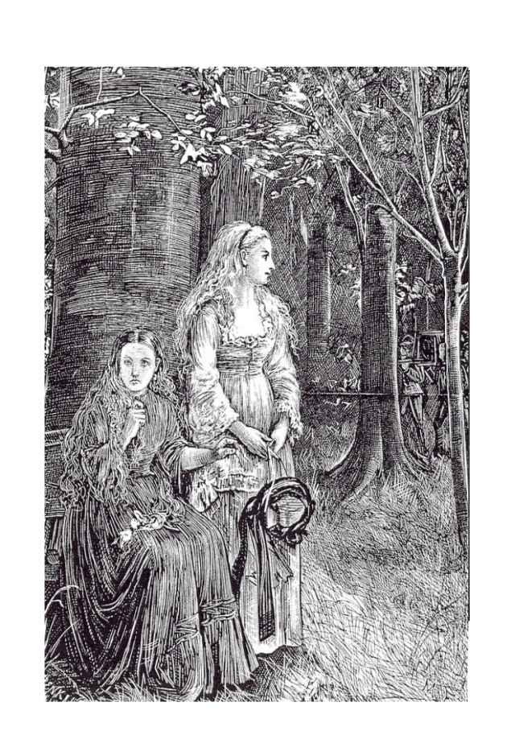
わたくしは礼を尽くすために立ち上がり、村人たちの清らかな歌声に加わりました。
カーミラがわたくしの腕をつかんでいささか荒っぽく揺すぶったので、わたくしは驚いてそちらを振り向きました。
すると彼女はぶっきらぼうに言うのです。「やめて。なんて耳障りな歌なのかしら」
「そんなことなくてよ。とても素敵な歌だと思うわ」
わたくしは邪魔をされてむっとしながらそう言い返し、ささやかな参列者たちがわたくしたちのいさかいを見て気分を悪くするのではないかと、ひどくいたたまれない気分でおりました。
わたくしがまたすぐに歌い始めますと、カーミラは再びそれを遮って、
「やめてったら。耳がおかしくなりそうだわ」と怒ったように言うと、その小さな手指で耳を塞ぎました。「それに、あなたの信じている宗教とわたしの宗教とが同じだなんて勝手に決めないでちょうだい。あなたたちのしきたりは窮屈で嫌。それにわたし、お葬式って大嫌いなの。仰々しいこと！ 人はね、必ず死ぬものなのよ――誰だってみんな死ぬの。それにみんな、死んだ方が幸せなのよ。さあ、もう帰りましょう」
「パパが、牧師さまと一緒にひと足先に墓地に行っているわ。あの娘さんが今日埋葬されることは、あなたも知っているものだと思っていたけれど」
「娘さん？ 村人のことなんかいちいち覚えていられないわ。どこの馬の骨かも知らない村娘なんか」そう答えたカーミラの繊細な瞳に、きらりと光が宿りました。
「かわいそうな子よ。十日前に幽霊の夢を見て、それから具合が悪くなって、とうとう昨日息を引き取ってしまったの」
「幽霊の話はやめて。今夜眠れなくなってしまうわ」
「流行り病じゃないといいんだけれど。でも、どうしてもそういう風にしか思えないわ」わたくしはかまわず続けました。「豚飼いの若い奥さんがつい一週間前に亡くなったんだけれど、その人、ベッドに寝ている時に何者かに喉をつかまれて、絞め殺されそうになる夢を見たんですって。そういう怖ろしい幻覚を見る熱病も実際にあるんだって、パパが言っていたわ。その奥さん、その前の日は元気そのものだったのに、それから体調を崩して、一週間も経たずに亡くなってしまったの」
「じゃあ、もうその人のお葬式も済んで、あの嫌な歌ももう歌い終わっているわね。あの耳障りな音色とわけのわからない歌詞で、耳の痛い思いをしなくてもいいのね。あんな歌を聞いたせいで、気分が落ち着かなくなったわ。ねえ。わたしの隣に座って。もっと近くに。手を握って。強く握って――もっと。もっと強く」
わたくしたちは来た道を少し戻りまして、また別のベンチの前に来ておりました。
カーミラは腰を下ろしました。その顔のあまりの変わりように、わたくしは不安を覚え、怖ろしくすらなりました。表情は暗く翳り、ぞっとするほどに蒼白くなっております。歯を食いしばり、拳を握りしめ、眉根を寄せて唇をぎゅっと噛みしめ、その格好のまま足もとの地面をじっと見つめて、まるで瘧にかかったかのように、身体中ぶるぶると震えておりました。息を切らしながら、ありったけの力で発作と闘っているようでございました。
やがてようやく、苦しげな低い嗚咽が一つ漏れたかと思うと、発作は少しずつ治まっていきました。ややあってカーミラは言いました。
「わかったでしょう？ 賛美歌っていうのはこんなに人を苦しめるのよ。抱いて。ぎゅっと抱き締めて。もうすぐ消えるわ」
そして少しずつ、発作は収まっていきました。今の場面がわたくしに及ぼした暗い印象を払拭するためでしょうか、彼女は異常なほど快活でおしゃべりになりました。やがてわたくしたちはお城に帰りました。
カーミラの身体が弱いことにつきましてはお母さまがおっしゃっていましたが、はっきりそれとわかる兆候が見られたのはこれが初めてのことでございました。また、彼女が怒りを露わにしたのもこの時が初めてでございました。
どちらも夏の雲のように一瞬にして過ぎ去っていきました。それ以後、彼女が束の間にせよ怒ったような素振りを見せたのは、ただの一度きりでございました。その時のことをお話しいたしましょう。
カーミラとわたくしとが、細長い居間に並ぶ四つの窓のうちの一つから外を眺めておりますと、流れ者の人影が一つ、跳ね橋を渡って中庭に入ってまいりました。年に二度ほど、お城にやってまいりますその姿は、わたくしにはお馴染みのものでございました。
その人物は背が曲がっており、顔の造作は、一般に奇形の人によくございますように、痩せて骨張っております。先の尖った黒い鬚顎を生やし、にっかりと満面の笑みを浮かべた唇からは、牙のように尖った白い歯が覗いております。黒と緋色に染めたもみ革の上着を着込み、身体のあちこちに数え切れないほどに巻きつけたベルトや留め金からは、ありとあらゆる品物がぶら下がっておりました。
背中には魔法のランタンと二つの箱を背負っており、この箱はわたくしもよく知っておりまして、一つには火蜥蜴が、もう一つには人の形をした狼毒草の根が入っております。どちらも伝説などに出てまいります幻の怪物でございますが、これを見て父はよく笑っておりました。猿や、鸚鵡や、栗鼠や魚や針鼠などの剥製のいろいろな部分を器用に縫い合わせて作ったものなのですが、驚くほどよく出来ておりました。
他にもバイオリン、小道具の入った箱、腰のベルトに下げた細身の剣と仮面、何が入っているのかわからない小箱などなど、全身じゃらじゃら、がらがらとにぎやかなもので、手には銅の石突きの付いた黒い杖を持っておりました。
お供の毛むくじゃらの雑種犬が一匹、彼の後ろからぴたりとついてきておりましたが、跳ね橋の前で怪しいものに気づいたかのようにぴたりと足を止め、すぐさま機嫌悪そうに吠え声を上げ始めました。
中庭の中央に立った旅芸人は、奇妙な形の帽子を掲げ、わたくしたちに向かって宮廷風のたいそう気取ったお辞儀をしますと、まずは怪しげなフランス語、次にそれと五十歩百歩のひどいドイツ語で、挨拶の言葉をまくしたてました。それからバイオリンを手に取りますと、軽快な楽曲を奏でながら、それに合わせて調子っ外れの声で愉快に歌い踊り始めまして、わたくしは犬の吠え声をよそに大笑いいたしました。
やがて彼は、にこにこぺこぺこしながら窓辺に歩み寄ってまいりまして、帽子を左手に持ち、バイオリンを小脇に抱え、淀みのない滑らかな口調で、自らの持ち芸をひと息でずらずらと並べ上げ、さらに続けて、お申しつけくださるならば、手品奇術に寸劇小芝居、あっと驚く珍品希品の数々、何なりとご披露いたします――といった具合に前口上を述べ立てるのでした。
「お嬢さまがた、吸血鬼除けのお護りはいかがでございましょう？ 噂では、このあたりの森を狼のようにうろつき回っておりますそうで」そう言いますと、旅芸人は石畳の地面に帽子を落としました。「あちらでぽとり、こちらでぱたりと人死にが出ておるそうですな。こちらは霊験あらたかなお護りでございまして、枕に留めておくだけで、吸血鬼など平気の兵ざでございますぞ」
このお護りと申しますのは、長方形の上等ななめし革に、カバラの秘数字と絵図を描いたものでございました。
カーミラはすぐに一つ買い求め、わたくしもそれに倣いました。
旅芸人はこちらを見上げ、わたくしたちは楽しく微笑みながら彼を見下ろしておりました。少なくとも、わたくしは愉快な気分でございました。彼がこちらを見上げた際、その刺すように鋭い黒い目が、何か珍しいものを見つけたかのようにじっと一点に据えられました。
すぐさま、旅芸人は革の小物入れを開きました。その中には変わった形をした小さな金属の道具がたくさん入っておりました。
「いかがでしょう、お嬢さま」と、箱の中身を見せながら、彼はわたくしに向かって言いました。「器用貧乏のわたくしめ、実は歯の治療もできましてな。ええい、うるさい犬コロめ！」と、ここで相棒の犬に向かって、「黙らんか、この馬鹿犬め！ そんなに吠えておっちゃお嬢さまがたにゃ何も聞こえんだろうが。いやいや、これは失礼。さて、そちらの右側のお嬢さまはずいぶんと鋭い歯をしていらっしゃいますなあ――長くて、細くて、尖っていて、まるで千枚通しか針のようで。ハハ！ あっしは目が利きますもので、見上げました時にすぐにわかりました。もしもその歯がお口に刺さって痛いようでしたら――ええ、きっとお痛うございましょう。そこで、ここに取り出したるは、ヤスリに錐に金鋏。お嬢さまがお望みとあらば、先を丸く削って差し上げましょう。今の魚のような歯から、お若くてお美しいお嬢さまにふさわしい歯になられては。おや？ そちらのお嬢さまはお怒りですかな？ 身分をわきまえずに厚かましいことを申しまして、ご気分を害されましたかな？」
なるほど確かに、カーミラはひどく怒った様子で窓辺から離れました。
「旅芸人の分際で、よくもわたしたちに向かってあんな無礼な口がきけたものだわ。わたしからあなたのお父さまに言って、懲らしめてもらうわ。わたしのお父さまだったら、あの男を縛り上げて鞭打ちにして、烙印を骨に届くくらいにまで押し当ててやるのに！」
そう言いますと、彼女は窓辺から一、二歩後じさって椅子に腰かけ、そうして無礼な旅芸人の姿が見えなくなりますと、怒りは始まった時と同じく唐突に収まりました。しだいにいつもの調子に戻ったカーミラは、小柄な旅芸人とその非礼のことなど忘れてしまったようでした。
その夜の父は元気がありませんでした。部屋に入ってくると、わたくしたちに向かってまた一人病人が出たのだと告げまして、しかもその症状が、先頃亡くなりました二人にたいそう似ているのだそうでございます。敷地内の、お城からほんの一キロ半ほどのところに住んでおります小作人の妹さんがたいそう具合が悪いとかで、本人の話では、他の二人とほとんど同じ状況で何ものかに襲われたそうでございまして、じわじわとではございますが、着実に症状は悪化しておりました。
「三人が三人とも」父は言っておりました。「原因は自然の病気以外の何ものでもないんだ。それなのにこの哀れな人々は、お互いに迷信を伝染し合って、自分たちの隣人を蝕んだ恐怖の影を想像の中で繰り返しているだけなんだ」
「それでも、そういう状況そのものが、わたしは恐くてたまりませんわ」カーミラが言いました。
「どうしてだね？」
「だって、そういうものを見たって気がするのすら怖くて怖くて。そうなると現実に見ているのと変わりませんもの」
「われわれは神の手の中にある。何が起こるにしても、それは神のお許しあってのことだし、神を愛するものにとっては、最後は何もかもうまくいくようになっているんだ。われわれの創造主である神は、自ら創りたもうたすべての者たちをお見捨てになることはなく、きちんと見守っていてくださるのだよ」
「いいえ！ 〈自然〉こそが創造主ですわ！」優しい父の言葉に対して、カーミラはそう反論しました。「そしてこの地に広まっているこの病も自然のものです。万物は自然から生まれたのでしょう――そうではありませんか？ 天も地も、そして地の下にあるものもすべて、〈自然〉の定めに従って生きて、動いているでしょう？ わたしはそう思いますわ」
しばらく間を置いてから、父は言いました。「このあいだの先生が今日ここに来てくださるそうだから、この件について先生の意見を聞いてみて、助言をいただこう」
「お医者さまの言うことを聞いてよかったことなんか、一度もありませんわ」カーミラは言いました。
「じゃあ、病気になったことがあるのね？」わたくしは尋ねました。
「これまであなたのかかったことのある病気が何でもなく思えるくらいにね」
「昔のこと？」
「ええ。昔ね。わたしね、まさに今話していたこの病気にかかっていたの。でも、ただただ苦しくて身体がだるかったこと以外はみんな忘れてしまったけれど、それでも他の病気よりは楽だったわ」
「まだずっと若い頃のことでしょう？」
「そうよ。でもこの話はもうやめましょう。友達を苦しめたくないでしょう？」そう言って、カーミラは気怠そうにわたくしの目を覗き込み、愛おしそうにわたくしの腰に腕を回して部屋から連れ出しました。父は窓辺で何かの書類に忙しく目を通しておりました。
「あなたのパパはどうしてあんな風にわたしたちを怖がらせようとするのかしら？」そう言うと、カーミラは溜め息を一つ吐いて、軽く身震いをしました。
「そんなことなくてよ、カーミラ。パパはそんなつもりは微塵もないわ」
「あなたは怖い、ローラ？」
「自分もあのかわいそうな人たちみたいに襲われる危険が実際にあるんだって考えたら、怖くて怖くてたまらなくなるでしょうね」
「死ぬのは怖い？」
「怖いわ。誰だってそうよ」
「でも好きな人となら――恋する人と一緒に死ぬのならどう？ 一緒に生きるために死ぬのなら？ 女の子ってね、この世に生きている間は芋虫で、やがて夏が来て蝶になるの。でもそれまでに幼虫や蛹の時期もあるわけ――わかるかしら？ 幼虫には幼虫の、蛹には蛹の性向や、必要や、体質がある――って、ビュフォン※１先生の受け売りだけれどね。隣のお部屋に先生の大きなご本があるわ」
その日、それから後にお医者さまがお見えになりまして、しばらく父と一室にこもってお話をしていらっしゃいました。腕のいいお医者さまで、お年は六十かそれ以上でしょうか、髪粉をまぶした鬘をかぶられ、蒼白なお顔はきれいに髭を当たっていらっしゃるので、カボチャみたいにつるつるでございました。やがて先生と父がお部屋から出てまいりますと、父の笑い声がいたしまして、続いて二人の話し声が聞こえてまいりました。
「なるほど。さすがに先生は博識でいらっしゃいますな。では、ヒッポグリフや竜はどうお考えでしょう？」
お医者さまは微笑みを浮かべられて、首を振り振りお答えになりました――
「にもかかわらず、生と死というものは謎めいた状態ですから、その本質については、われわれ医師にもほとんどわからないのです」
二人はそのまま遠ざかっていき、話はそこまでしか聞こえませんでした。当時のわたくしには先生が何のお話をされているのかわかりませんでしたが、今ではわかるような気がいたします。
第五章 肖像画
･
この日の夜、グラーツから、色黒の真面目そうな顔をした絵画の修繕師の息子さんが、それぞれにたくさんの絵画を詰めた荷箱を二つ、荷馬車に乗せてお越しになりました。小さいながらもこの国の首都であるグラーツまでは五十キロ近くの道のりがございますから、あの町からどなたかお城を訪ねていらっしゃいます時には、わたくしどもは新たな知らせを聞くために玄関広間でお客さまのまわりに集まったものでございます。
この夜、陸の孤島のようなわたくしどもの住まいは上を下への大騒ぎでございました。荷箱はひとまず広間に置いたまま、お客さまを召使いたちに預けて夕食を食べていただきました。その後で、お手伝いの召使いたちを引き連れ、金槌と鑿とねじ回しを携えて、修繕師は荷箱の開封を見物しようと広間に集まったわたくしたちの前にお出でになりました。
カーミラは椅子に座って、ほとんど肖像画ばかりでございましたが、古い絵画が一枚また一枚、箱から取り出されるのをつまらなそうに見ておりました。わたくしの母の一族はハンガリーの出でございまして、これからもともと飾られていた場所に戻されようとしているこうした絵のほとんどは、母方の家族から伝わったものでございます。
父が手に持った目録を一つずつ読み上げますと、修復師は箱の中をごそごそと探して、該当する番号の絵を取り出されます。わたくしは絵の善し悪しはわかりませんが、どれもたいそう古いものであることは間違いなく、中にはずいぶんと奇妙なものもございました。値打ちはわかりませんが、これまではどの絵も、長年の間に積もり積もった埃で何が描いてあるのか何も見えない状態でございまして、ほとんどの絵は私にとっては初めて見るようなものでしたから、それなりに楽しゅうございました。
「まだ見ていない絵があるな」父が言いました。「上の方の隅にかろうじて読める文字で、〈マルシア・カルンシュタイン〉という名前と、〈一六九八〉という年号が書かれている一枚なんだが。仕上がりがどうなったか見てみたいな」
その絵はわたくしにも覚えがございました。一辺五十センチ足らずの小さな正方形の絵で、額は付いておりませんでした。古いせいで、何の絵かわからないほどに黒ずんでおりました。
修復師はここで待っていましたとばかり、いかにも得意げにその絵を取り出されました。その絵の美しいことといったら！ わたくしははっと息を呑みました。まるで生きているかのようなその絵姿は、カーミラの肖像ではございませんか！
「ねえ、ほらカーミラ。これこそまさに奇跡だわ。ほら、絵の中にあなたがいるわ。生き生として、微笑んで、今にもしゃべり出しそう。素敵じゃなくて、パパ？ ほら、喉のところの小さなほくろまでそっくり」
父は笑いながら「なるほど。まるで生き写しだな」とだけ言ってよそを向いてしまい、驚いたことに、まるで何ごともなかったかのように修復師と話を続けました。修復師ご自身も絵をお描きになる方で、その熟練の技術によって鮮やかに蘇った肖像画やその他の作品について専門的なお話をされまして、その間、わたくしは観れば観るほどその肖像画に引き込まれていきました。
「パパ。この絵、わたくしのお部屋に飾ってもよくて？」
「いいとも」父はにっこりとして言いました。「ずいぶんと気に入ったみたいだね。父さんも嬉しいよ。となると、きっと父さんが思っていたよりもずっときれいな絵だったんだな」
カーミラはこのお世辞には反応せず、聞こえてもいないようでございました。椅子に背を預けたまま、長い睫毛の下のきれいな目で何かを考え込むかのようにわたくしをじっと見つめ、それからうっとりとしたような笑みを浮かべました。
「それに、隅に書かれた名前も今ははっきりと読めるわ。〈マルシア〉じゃなかったのね。金泥を使って書かれているみたい。〈カルンシュタイン女伯、マーカラ〉。その上に小さな冠の印があって、下には〈西暦一六九八年〉って書いてあるわ。わたくしはカルンシュタイン家の血を引いているのよ。ママがあの一族の方だったから」
カーミラは言いました。「そうなの！ わたしもそうよ。とても遠い、とても古い血筋よ。ねえ、今生きているカルンシュタイン家の人はいるのかしら？」
「カルンシュタインを名乗っている人はいないと思う。昔々、内乱か何かが起こって一家は途絶えてしまったんじゃなかったかしら。でもお城の跡はほんの五キロくらい先にあるわ」
「ふうん......」カーミラは大儀そうに言いました。「でもほら、見て。なんてきれいな月でしょう！」そう言って、彼女は少し開いたままになっていた玄関扉から外を覗きました。「どうかしら。中庭をちょっと散歩して、林道と川を見てみない？」
「あなたがここにやって来た夜みたいね」
カーミラはひとつ溜め息をつくと、にっこりとして立ち上がり、それからわたくしたちは互いに相手の腰に腕を回して敷石の上を歩きました。
二人とも黙ったまま、のんびり跳ね橋まで歩いていくと、門の向こうには美しい風景が広がっておりました。
「わたしがここに来た夜のことを思い出してくれていたのね？」カーミラはほとんど囁くような声で言いました。「ねえ。わたしが来て嬉しい？」
「もちろんよ、カーミラ」わたくしは答えました。
「わたしに似ているっていうあの絵、あなたの部屋に飾ってくれるのね」そう言って彼女は溜め息をつき、わたくしをさらに抱き寄せて、その愛らしい頭をわたくしの肩にのせました。
「カーミラったら。ロマンチックねえ」わたくしは言いました。「いつかあなたが自分のことを話してくれる時は、大恋愛のお話ばっかりなんでしょうね」
カーミラはわたくしにそっと口づけをしました。
「あ。わかったわ、カーミラ。あなたきっと恋をしているのね。今この時も、心の中でその人のことを想っているんだわ」
「わたしはこれまで恋をしたこともないし、これからすることもないわ」彼女は囁きました。「あなた以外の人とは絶対に」
月明かりを浴びたカーミラは、それはそれは美しゅうございました。
はにかむような、これまで見たことのない表情を浮かべて、彼女はすぐさまわたくしの首筋と髪に顔を埋め、荒い吐息はまるで嗚咽を漏らしているかのようで、震える手でわたくしの手をぎゅっと握りしめてきました。
わたくしの頬に触れる彼女の柔らかな頬は、熱く火照っておりました。
「ああ、ローラ......ローラ......」と囁くように言いました。「わたしはあなたの中で生きているの。そしてあなたはわたしのために死ぬのよ。だって、こんなに愛しているんだもの」
わたくしはぎょっとして身体を離しました。
こちらをじっと見つめる彼女の目からは炎も、表情もすっかり消え失せ、血の気の失せた顔はたいそう冷たい感じがいたしました。
「ねえ、寒くないかしら？」カーミラはだるそうな声で言いました。「身体が震えているみたい。わたし、夢を見ていなかった？ さあ、もう中に入りましょう。早く、早く」
「カーミラ。あなた具合が悪そうよ。ふらふらしているし。少しワインを飲んだ方がいいわ」
「ええ。そうするわ。でも、もう良くなってきたわ。すぐに元気になるわよ。そうね、ワインを少しいただくわ」
お城の玄関へと歩きながら、彼女はそう答えました。
「ねえ。もう少しだけ月を見ていきましょうよ。あなたと一緒に月を見上げるのも、たぶんこれが最後だから」
「気分はどう、カーミラ？ 本当にもう大丈夫？」わたくしは尋ねました。
カーミラがこのあたりで広まっていると噂されておりますあの奇妙な流行り病にかかったのではないかと、わたくしは心配になってまいりました。
「ちょっとでも具合が悪くなったら、すぐにそう言ってね。そうでないとパパがとても悲しむわ。とても腕のいいお医者さまがこの近くにいらっしゃるの。今日パパと一緒にいらっしゃった方よ」
「わかっているわ。あなたのおうちの人たちはみんな本当に優しいのね。でもね、ローラ、わたしはもう大丈夫。そもそもわたし、別にどこかが悪いっていうわけではないのよ。ただ身体が弱いだけ。ものぐさだなんて言われるけれどね。身体を動かすことが苦手なの。散歩だって、三歳の子供が行けるところくらいまでしか歩けないの。ときどきそのあるかなしかの体力すらなくなってしまうことがあって、そうしたらさっきあなたが見たような状態になってしまうの。でも、何のかのと言ってもすぐに良くなるのよ。少し時間が経てばすっかりもと通り。ほら見て。もう良くなったでしょう」
なるほど確かに彼女は元気そうでございました。それからわたくしたちはたくさん話をしまして、彼女もとても溌剌としておりました。そうしてその晩は、あの熱に浮かされたようなもう一人のカーミラが再び現れることもなく過ぎていきました。すなわち、彼女のあの奇妙な話しぶりや顔つきのことでございまして、あれを前にすると、わたくしは困惑し、薄気味悪さすら感じてしまうのでございます。
そしてその夜、とある事件が起こったのでございます。それはわたくしにそれまでの考えをあらためさせ、身体の弱いカーミラを、驚きのあまり短い間とはいえ動き回らせるほどの事件でございました。
第六章 奇病
･
居間に腰を落ち着けてコーヒーと温かいチョコレートを飲んでくつろいでおりますと（カーミラはどちらにも口をつけませんでしたが）、彼女もずいぶんと良くなったようでございました。ペロドン夫人とラフォンテーヌ先生もいらっしゃいましたので、みんなでちょっとしたカード遊びなどをしておりますと、そこへ「紅茶派」の父が、お茶を飲みに顔を出しました。
遊びが一区切りつきますと、父はソファのカーミラの隣に座って、少し心配そうな顔で、ここに来て以来お母さまからの連絡はあったかどうかと尋ねました。
カーミラはなかったと答えました。
続けて、父は今彼女に手紙を出すならばどこに宛てればいいのだろうかと尋ねました。
「どこでしょう......」カーミラは言葉を濁しました。「でもわたし、もうお暇しようと考えていたところですの。みなさんにはもうすでに十分すぎるくらいに良くしていただきましたから。あれこれとご面倒ばかりおかけしてしまいましたし、明日馬車で出発して、母の後を追いかけようと思います。お教えすることはできませんが、母の向かっている先はわかっておりますから」
「そんな水くさいことを言わないで」父が声を上げてくれたので、わたくしはほっといたしました。「そんな風にいなくなられたら寂しいではないかね。それに、私だってはいそうですかとお帰しするわけにもいかない。お母さまがわれわれを信頼して、自分が戻ってくるまできみをここにあずけることを承諾してくださった以上、お母さまに直接お引き渡しするのが筋というものだからね。
さっきお母さまから連絡があったかどうかを聞いたがね、実を言うと、このあたりに広まっている謎の伝染病の噂がいよいよ深刻になってきているんだ。だからね、カーミラ、きみのお母さまのご忠告は別にしても、私は保護者としてとても責任を感じているんだ。とにかく、私は自分にできる限りのことをしよう。だからこれだけははっきり言っておくがね、ここを出ていくなんて、お母さまからはっきりとそう言いつけがあったのでない限りは絶対に考えてはいけないよ。きみと別れるのはわれわれにとって本当に辛いことだし、そんなことにはそうそう簡単に承諾はできないからね」
「ありがとうございます。みなさんのお心遣い、本当に痛み入りますわ」そう言って、カーミラははにかんだように微笑みました。「みなさんには本当に親切にしていただいて。このきれいなお城で、丁寧にお世話をしていただいて、美しいお嬢さまと一緒に過ごすことができて、わたし、これまで生きてきて、こんなに幸せを感じたことはめったにございませんわ」
このささやかな謝辞に気を良くした父はにっこりと微笑み、慇懃な、時代がかった作法で、彼女の手に口づけをしました。
わたくしはいつもの通りカーミラと一緒に寝室に上がり、寝る支度をしている間におしゃべりをいたしました。
「ねえ、カーミラ」わたくしは思い切って尋ねました。「いつか何もかも話してくれる？」
カーミラはこちらを向いてにっこりしましたが、返事はせず、ただ笑顔を浮かべていました。
「答えてくれないの？ 嘘をつきたくないから答えられないのね。そんなこと訊いちゃいけなかったのかしら」
「そんなことないわ。何だって訊いてよくてよ。あなたがわたしにとってどんなに大切な人か、あなたにはわからないのね。そうでなかったら、そんな水くさいこと言わないもの。でもね、わたしはそういうことは話さないって誓いを立ててしまったの。それはもう、修道女の誓いも霞むくらい厳格な誓いよ。だからあなたにすら、今はまだ自分の話はできないの。もうじき何もかもを打ち明ける時が来るわ。わたしのこと、薄情で、とてもわがままだと思うでしょうけれど、でも愛というのはいつだってわがままなものなの。わたしがどれほど執念深い女か、あなたにはわからないわ。わたしは死ぬまであなたの愛を離さない。愛してくれないなら憎んでもいい。でもわたしたちが一つであることは変わらないわ。あなたが死ぬ時も、そして死んだ後も、わたしたちは憎しみで結ばれ続けるの。わたしのこの冷たい生命には、無関心という言葉はないのよ」
「ほらほら、カーミラ。また始まったわ。そんなわけのわからないたわ言を言って」わたくしは慌てて彼女をいさめました。
「たわ言なんかじゃないわ。わたしはお馬鹿さんだし、気まぐれでわがまま放題だけれど、あなたのために、賢者のようにわかりやすく話してあげる。いい？ ローラ、あなた舞踏会に行ったことある？」
「いいえ。もう、あなたのお話、ついて行くの大変だわ。でも、舞踏会ってどんな感じなの？ きっと素敵なんでしょうねえ」
「もうあんまり覚えていないわ。昔のことですもの」
わたくしは笑ってしまいました。
「そんなお年寄りみたいなこと言って。あなたくらいの歳で、初めての舞踏会のことを忘れるはずがないわ」
「思い出せることは思い出せるのよ。なんとかね。でも思い出す場面はみんな、水の中に潜った人が、ゆらゆら揺れる、分厚くて透明な水の壁を通して頭上で起こっていることを見ているような感じなの。そしてあの夜に起こったことを境にして、その記憶の中の情景が濁って、色褪せてしまうの。わたしね、ベッドの中で殺されそうになったのよ。ここを刺されて」そこで彼女は自分の胸に手を触れました。「それ以来、わたしは変わってしまったの」
「死にかけたの？」
「ええ。危ないところだったわ。それは命を奪うほどに残酷で、奇妙な愛だった。愛は犠牲をともなうものなの。そして犠牲とは血の流れるものよ。さあ、もう寝ましょう。疲れてしまったわ。起き上がるのは無理。扉に鍵をかけていってくれる？」
ベッドに横向きに寝そべったカーミラは、流れるような豊かな髪に埋もれた両手に頬をのせ、その華奢な頭を枕にのせて、何やらはにかんだような、わたくしには意味の読み取れない笑みを浮かべたまま、きらきらと輝く瞳でわたくしの一挙一動を追っておりました。
彼女におやすみを言いますと、わたくしはもやもやとした気分を抱えたままそっと部屋を出ました。
わたくしはたびたび、カーミラは神さまにお祈りを捧げているのだろうかと不思議に思っておりました。わたくし自身は一度たりとも、彼女が祈祷のために膝をついているところを見たことはございませんでした。朝彼女が下りてくる頃には、わたくしどもの一家そろってのお祈りはとうに終わっておりますし、広間で短い夕べの祈りを捧げる時も、彼女だけは居間に残っております。
何気ないおしゃべりの中で、カーミラは自分が洗礼を受けていることをふと口にしたことがございまして、それがなかったなら、わたくしは彼女がキリスト教信者ではないのではないかと疑っていたことでしょう。彼女が宗教についての話をするのを、わたくしは一度たりとも聞いたことはございません。もしもわたくしがもっと世間のことを知っていれば、このような宗教に対する驚くほどの無関心や反感も、それほど意外には思わなかったでしょうけれども。
心配性の人の警戒心というのは伝染りやすいものでございまして、近くに似たような気質の人がおりますと、そのうちに必ずと言っていいほど真似してしまうものでございます。かく言うわたくしも、夜中に強盗が入るだの、人殺しがうろついているだのというカーミラのとりとめもない警告をすっかり真に受けるようになって、彼女に倣って寝室の扉に鍵をかけるのが習慣になりました。さらにまた、人殺しも泥棒も身を潜めていないことを確認してカーミラを安心させるために、念のため彼女の寝室をざっと見て回るようにもなりました。
こうした用心のための手続きが済みますと、わたくしは自分のベッドに入って眠りました。寝室には明かりを一つ灯したままにしておりました。これはわたくしが物心つくようになって以来の古くからの習慣でございまして、こうしておかないと眠れないのでございます。
こうして鍵のかかった扉と蝋燭の明かりに守られて、わたくしは安心して眠りにつきます。しかしながら、夢は石の壁を通り抜け、暗い部屋を照らし、あるいは明るい部屋を闇で包み、そして夢の中に出てくる人々は鍵職人を嘲笑うかのように、人の心に自由に出入りをするのです。
わたくしはその夜、夢を見ました。そしてその夢こそは、たいそう奇妙な病の始まりとなったのでございます。
とは申しましても、わたくしは自分が眠っていることをはっきりと自覚しておりましたから、それは悪夢とは呼べませんでしょう。しかしそれでいながら、自分の寝室でベッドに横になっているという、実際の自分の状態も同じくらいはっきりと意識しているのです。
夢か現かはわかりませんが、部屋の中は調度類なども最後に見た時とまったく同じままでございました。ただ、蝋燭の明かりが消えておりまして、暗闇の中、ベッドの足の方で何かが動き回っている気配がいたします。初めのうちは暗くてよく見えませんでしたが、何やら大きな猫に似た漆黒の獣のようでございます。大きさは一メートル半ほどでしょうか。暖炉の前を通った際に、その前の敷物の端から端までの長さがあるのが見えました。檻の中の獣のような、しなやかで悪意のある動きで、なおもせわしなく行ったり来たりしております。
悲鳴を上げることはできませんでした。意外に思われるかもしれませんが、怖ろしさのあまり声が出てこなかったのです。それはしだいに歩みを早め、部屋もますます暗くなっていきまして、ついには獣の目以外には何も見えないほどの真っ暗闇になりました。それがベッドの上に軽やかに飛び乗ってくるのが、ベッドの微かな揺れでわかりました。二つの大きな目がわたくしの顔に近づいてきて、そして突然、一センチか二センチほどの間隔をあけて並んだ二本の太い針が深々と胸に突き刺さるような鋭い痛みを感じました。
わたくしは悲鳴を上げて目を覚ましました。部屋は夜通し燃え続けていた蝋燭で照らされておりまして、ベッドの足の方の、やや右側寄りに、一人の女の人が立っているのが見えました。黒くゆったりとしたドレスを着て、下ろした髪が肩を覆っておりました。まるで石像のようにぴくりとも動きません。息をすれば胸や肩がわずかに上下するものですが、それすらもないのでございます。
わたくしがそうして見つめている間にもその人は移動していたようで、今は先ほどよりも扉の近くにおりました。そのままさらにそちらに近づいていき、扉を開け、外に出ていきました。
それまで息を殺してじっと固まっていたわたくしは、そこでほっと身体の力を抜きました。はじめに思ったのは、カーミラがわたくしをからかっていて、部屋の扉は先ほど寝る前にかけ忘れていたのだろうということでした。急いで確かめてみますと、扉にはいつも通り内側から鍵がかかっておりました。わたくしはそれを開けるのが怖ろしゅうございました――怖くて怖くてたまりませんでした。わたくしはベッドに飛び込んで頭までシーツをかぶると、朝まで死んだようにじっとしておりました。
第七章 侵蝕
･
あの夜の出来事を思い出すと今なお感じるこの恐怖は、とても言葉でお伝えすることはできません。夢の名残りの、すぐに消えてしまう恐怖とは違います。それはまるで、時間が経つにつれて激しさを増していくかのようで、寝室や、あれが出た時にそこにあった同じ調度類に染みついていつまでも消えないのです。
明くる日、わたくしは片時も一人でいることに耐えられませんでした。父に話そうかとも思いましたが、二つの相反する理由から思い留まりました。その話をしたら父に笑われてしまうような気がいたしまして、冗談扱いされるのが耐えられなかったことが一つ。そして二つ目に、近隣に広まっているあの謎の伝染病にかかったのではないかと思われるのが不安だったからでございます。わたくし自身は何の心配もしておりませんでしたが、父はしばらく前から身体の具合があまり良くありませんでしたので、よけいな心配をかけたくなかったのです。
ペロドン夫人と陽気なラフォンテーヌ先生とは、わたくしは気安く話をする間柄でございました。お二人はわたくしが元気がなく、そわそわしていることに気づいてくださいまして、わたくしもとうとう、心に重くのしかかっていた悩みを打ち明けてしまいました。
ラフォンテーヌ先生は笑っておられましたが、ペロドン夫人の方は不安そうな顔をなさっていたように思います。
「そういえば」と、先生は笑いながらおっしゃいました。「カーミラの寝室の窓から見える菩提樹の並木道に、幽霊が出るんですってよ」
「馬鹿らしい！」いささか折りの悪い話題だとお思いだったのでしょう、ペロドン夫人はたしなめるように声をお上げになりました。「誰です、そんなことを言っているのは？」
「マルティンですよ。夜明け前に古い庭の門戸を修理している時に、二回出くわしたんですって。二回とも、あの菩提樹の並木道を歩いていく女の人の姿を見たそうですわ」
「そんなの、誰かが川に牛の乳を搾りにいっただけでしょうに」
「でしょうね。でも、マルティンったら震え上がってしまって。あの人があんなに怖がっているところ、初めて見ましたわ」
わたくしは横合いから口を挟みました。「そのことはカーミラには黙っていてちょうだいね。あの並木道はあの子の部屋の窓から見えるし、それにあの子、わたくしよりももっと恐がりなんですもの」
その日、カーミラはいつもよりもさらに遅くなってから下りてきました。
「昨日の夜は本当に怖かったわ」と、わたくしの顔を見るなり彼女は言いました。「このあいだ買ったあのお護りがなかったら、きっと何か怖ろしいものを見ていたわ。あの背中の曲がった旅芸人、あんなにひどいことを言ってしまってかわいそうなことをしたわ。
わたしね、何か黒いものがベッドを回り込んで近づいてくる夢を見て、怖くて怖くて目を覚ましたら、一瞬、暖炉のそばに本当に黒い人影が見えたような気がしたの。でも枕の下を手探りして、あのお護りに手が触れた瞬間、その姿はふっと消えたわ。あれがなかったなら、きっと何か怖ろしいものが現れて、もしかすると、噂で聞いたかわいそうな女の人たちみたいに、絞め殺されていたかもしれないわ」
「ねえ、聞いて」わたくしが昨夜の自分の体験を語りますと、カーミラはぞっとした顔になりまして、「お護りは？ そばに置いていたの？」と、真剣な声で尋ねました。
「いいえ。居間にある白磁の花瓶の中に落としてしまったの。でもあなたがそんなに信用しているんだったら、今夜は必ず持って寝るわ」
今にしてみますと、昨日の夜にあんなことがあったばかりだというのに、あの夜はよくも一人きりで寝る気になったものだと、我ながら不思議に思います。あのお護りを枕にピンで留めたのははっきりと覚えております。わたくしはたちまち眠りに落ち、そのまま朝まで普段よりもぐっすりと眠りました。
次の夜も同じでございました。わたくしは安らかにぐっすりと眠り、夢も見ませんでした。しかしながら、明くる朝目が覚めてみますと、けだるく、憂鬱な心地がしまして、とは申しましても、それは朝寝坊した時の贅沢なもの憂さのようでなくもないのです。
「ほらね。言ったでしょう」わたくしが安らかに眠れたと言いますと、カーミラは言いました。「わたしも昨日の夜はぐっすり眠れたわ。あのお護りを寝間着の胸のところにつけておいたの。前の晩のように手探りしなくていいように。わたしね、昔は悪夢って悪霊が見せるものだと思っていたんだけれど、でもお医者さまのお話では、そうではないんですって。熱病とか、何か他の病気なんかが、身体の中に入ろうとしてノックをするんだけれど、それでも中に入ることができないものだから、通り過ぎていく時にああいう警告を残していくの」
「じゃあ、あのお護りは何？」
「何かの薬を焚きしめるか、浸すかしたものでしょうね。疫病除けになるの」
「じゃあ、身体にしか効き目はないのね？」
「もちろんよ。幽霊がリボンの切れ端やら、薬屋の燻し薬の煙を怖がると思う？ こういう病は、空気中を漂いながら、まずはじめに相手の神経に働きかけてきて、それから脳に入ってくるんだけれど、でも身体が病に冒される前にこういう疫病除けが追い払ってくれるの。あのお護りもきっとそうだったんだわ。魔法なんて関係ない、自然の力よ」
カーミラの説明を聞いてもわたくしはまだ釈然としない気持ちでしたが、それでもそういうものなのだと何とか自分に言い聞かせておりますと、もやもやした気分も少しは晴れました。
数日の間、ぐっすりと眠れる夜が続きました。それでもやはり、毎朝目が覚めますと身体がだるく、その感じが一日続きました。自分が以前とは変わってしまった感じがいたしました。奇妙な鬱気がじわじわと心に広がっていき、それがまるで晴れることのない雲のようにわたくしを包んでいるのでございます。ぼんやりと死のことを考えるようになり、自分がゆっくりと沈んでいくという思いがやんわりと頭の中を占めて、そしてそれがなぜかしら嫌でもないのです。悲しくはあっても、それが奏でる心の音色は甘やかでもあるのでございます。それがどのようなものであれ、わたくしの魂はこの状態を受け入れておりました。
わたくしは自分が病気であることを認めようとはせず、父に打ち明けることも、お医者さまを呼んでもらうこともしませんでした。
カーミラは以前に増してわたくしを慕ってくるようになり、奇妙な発作のようにやってくるあのけだるげでいて熱っぽい独白もますます頻繁になっていきました。わたくしの体力や気力が衰えていくほど、彼女はいよいよ熱っぽい目で満足そうにわたくしを見つめてくるのでございます。それはまるで、狂気が一瞬ぎらりと顔を覗かせたかのようで、わたくしはいつもぞっといたしました。
そうとは知らず、わたくしはこの時、何人も体験したことのない、世にも奇妙な病のかなり進行した段階にあったのでございます。この病の初期症状は不思議な陶酔感をともなっておりまして、そのために、わたくしは体力が衰えていくこの段階での病状をすんなりと受け入れておりました。この陶酔感はしばらくの間強くなっていき、ある時期を越えますとそこに少しずつ恐怖が混じるようになって、今度はそれが強くなっていき（これについてはこの後お話しいたします）、やがてわたくしという存在を変色させ、歪めてしまうのでございます。
わたくしが体験いたしました最初の変化は、どちらかといえば好ましいものでございました。しかしながらそれこそは、これを過ぎれば奈落へ堕ちるという、運命の境目だったのでございます。
ぼんやりとした奇妙な感覚が、眠っているわたくしを訪れました。中でも一番はっきりとしているものは、水浴びをしていて川の流れに逆らって動く時に感じる、あの心地良い、背筋のぞくぞくするようなひんやりとした感覚でございます。ほどなく、この感覚には夢がともなうようになるのですが、果てしなく続くように思えるその夢はあまりにも漠然としておりまして、夢の中の情景も、そこに出てくる人物も覚えておりませんし、まとまった一場面を思い出すこともできません。それでも、自分が夢を見ていたという強烈な印象と、心の中で過酷な長旅をくぐり抜けてきたかのような疲労感は残っておりました。
こうした夢から目覚めた後には必ず、自分がどこか真っ暗な場所にいて、姿の見えない何者かと話をしていた記憶が残っておりました。とりわけ、とある女性の澄んだ、それでいてとても低い響きの声ははっきりと覚えておりまして、まるでどこか遠いところから話しかけてくるような、ゆっくりとしたその声を聞くと、名状しがたい畏敬の念が込み上げてくるのでございます。
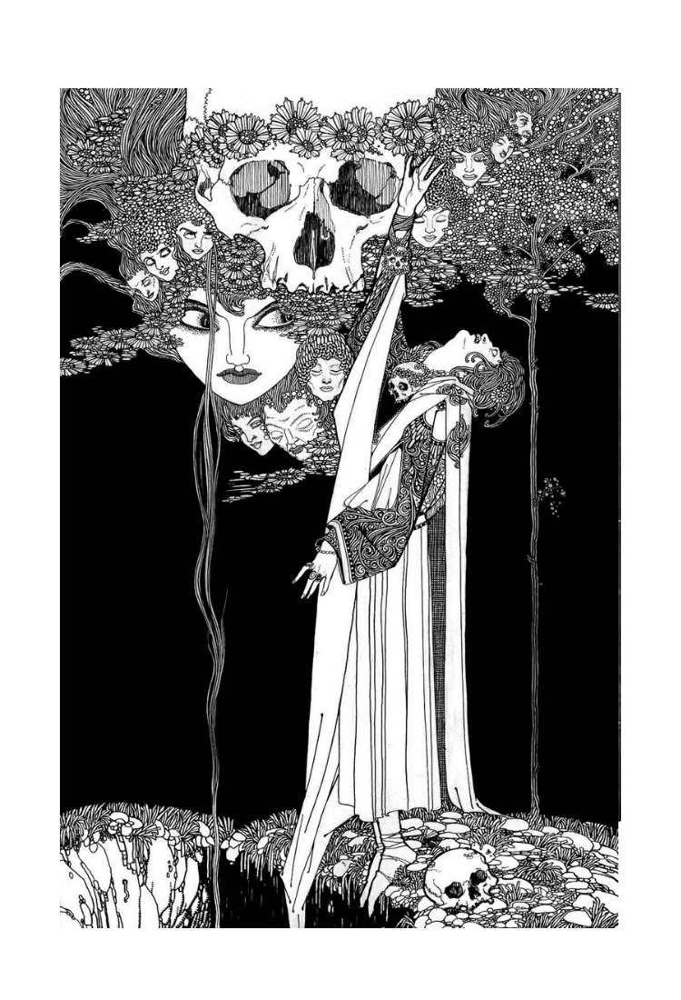
時おり、頬と首筋を手でそっと撫でられるような感覚を覚えることもございました。またある時には、あたかも口づけをされるように、温かい唇が肌に触れるのを感じることもございまして、それが喉元に近づいていくにつれて長く、愛おしむようになっていき、やがて喉に吸いついたまま止まります。わたくしの鼓動は早くなり、胸が激しく上下し、やがて息をいっぱいに吸ったところで呼吸が止まります。ひっ、ひっと嗚咽が漏れ、首を絞められるような感覚が強まっていくとともにやがてそれはおぞましい痙攣に変わり、そこで感覚が消えて、わたくしは気を失ってしまうのです。
この奇妙な症状が始まってからもう三週間になっておりました。この一週間で、内面の苦しみが表に出るようになりました。顔色は青ざめ、瞳孔は広がって、目の下には黒い隈ができまして、長らく感じておりました倦怠感が表情に表れるようになっておりました。
父からはたびたび具合が悪いのかと尋ねられましたが、わたくしは今からすれば奇妙に思えるほど頑なに、いたって元気だと請け合っておりました。
それはまったくの嘘というわけでもなかったのです。痛みはございませんし、身体のどこかが具体的に悪いわけでもございません。悪いところがあるとすればそれは心の中か、あるいは神経の方であって、ずいぶんと苦しい思いをしていたにもかかわらず、わたくしは病的なほどの用心深さで、ほとんど誰にも話さず、ひた隠しにしておりました。
これは村人たちが〈血吸われ病〉と呼んでおりますあの怖ろしい病気とは違うはずでございます。と申しますのも、わたくしはもう三週間も苦しんでおりますが、あの病に冒された者は長くても三日で息を引き取っていたからでございます。
カーミラも奇妙な夢を見たり熱っぽいような感じがすると言っておりましたが、わたくしとは違ってそれほど気がかりなものではございませんでした。一方、わたくしの症状は極めて深刻でございました。もしもあの時、自分の状態がどのようなものかわかっていたならば、わたくしは膝をついて助けと忠告を乞い願っていたでしょう。知らないうちに麻酔をかけられていたかのように、わたくしの感覚は麻痺していたのでございます。
これからとある夢のお話をいたします。この夢がきっかけとなって、わたくしは奇妙な発見をすることになるのでございます。
ある夜のこと、暗闇の中で聞き慣れていたいつもの声ではなく、甘く優しく、それでいて怖ろしい声がこう語りかけてくるのが聞こえました。「あなたのお母さまが言っているわ......命を奪おうとする者に気をつけるようにって......」。そしてそれと同時に、突然ぱっと光が灯りまして、するとどうでしょう、ベッドの足もとに、白い寝間着姿で、顎から爪先までべっとりと血で染めたカーミラが立っているではございませんか。
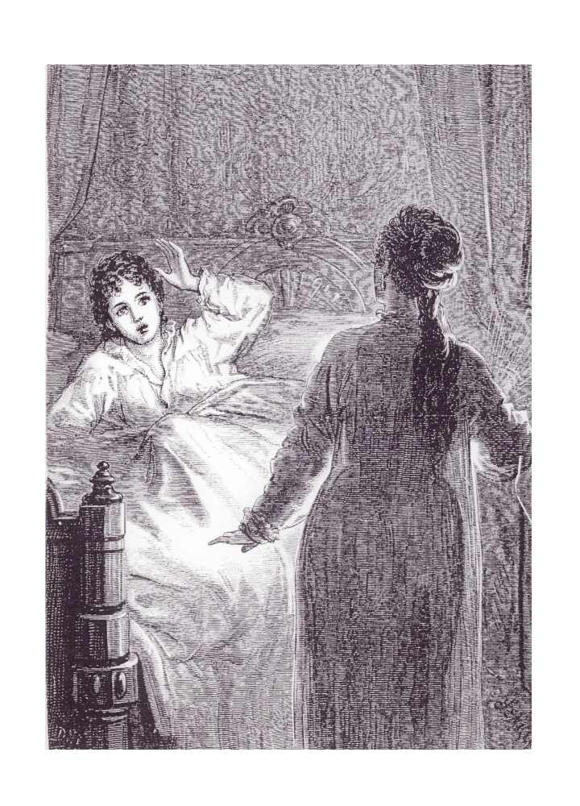
わたくしは悲鳴とともに目を覚ましました。カーミラが殺されようとしている――そう思い込んだわたくしは慌ててベッドから跳ね起き、次に覚えておりますのは、階段広間に立って、助けて、助けてと叫んでいる場面でございます。
ペロドン夫人とラフォンテーヌ先生が何ごとかと駆けつけてきてくださいました。階段広間にはいつもランプが一つ燃えておりますので、お二人はわたくしの姿を認められ、わたくしはすぐさま二人にことの次第を話しました。
わたくしはカーミラの部屋の扉を叩いてみようと訴えました。が、ノックをしても返事はございません。軽いノックの音はほどなくどんどんと拳を打ちつける大きな音に変わり、そこへさらに、わたくしたちが声も限りにカーミラの名を呼ぶものですから、それはもう騒々しいことでございました。しかし、それでもはやはり返事はございません。
扉に鍵がかかっているのが不安でなりませんでした。どうしていいものやらわからず、わたくしたちはおろおろしながらわたくしの部屋に戻りました。そこで呼び鈴を勢いよく何度も何度も鳴らしました。父の部屋がお城の同じ側にあったならば、すぐに助けに来てもらっていたのですが、ああ、なんということでしょう、間の悪いことに、父はわたくしたちの声の届かぬほど遠くで寝んでおりましたし、今のこの状況で、そこまではるばる呼びに行くだけの勇気はわたくしたちにはございませんでした。
しかしながら、ほどなく召使いたちが階段を上がってきてくれました。わたくしはその間に化粧着をはおって室内履きを履き、夫人と先生もすでに同じように身支度をされておりました。召使いたちの声が階段広間まで上がってきたのを聞き届けると、わたくしたちは三人そろって思い切って外に出ました。そうしてあらためてカーミラの部屋の扉を叩きましたが、またしても返事がなかったので、わたくしは男の召使いたちに鍵を壊すようにと命じました。鍵が壊されると、一同はランプを高く掲げ、戸口に立って部屋の中を覗き込みました。
カーミラと呼びかけましたが、やはり返事はありません。わたくしたちは部屋の中を見回しました。何一つ荒らされてはおりません。何もかも、わたくしがおやすみを言って部屋を出た時のままでございます。しかし、そこにカーミラの姿はございませんでした。
第八章 捜索
･
力尽くでこじ開けられた扉を除いて何一つ変わりのない部屋を前にして、わたくしたちはいくらか落ち着きを取り戻し始め、ほどなくここが女性の部屋であることを思い出して、男の使用人たちを帰しました。と申しますのも、ラフォンテーヌ先生のお考えでは、カーミラはひょっとすると扉の前の騒ぎで目を覚まし、慌てふためいてとっさにベッドから飛び起きて、戸棚かあるいはカーテンの裏にでも隠れているだけなのかもしれず、そしてそうであれば、当然のことながら、殿方の一団が兵を引くまでは出てこられないのではないかとおっしゃるのです。それで今度は女のわたくしたち三人であらためて部屋の中を探し始め、カーミラの名前を呼びました。
しかしその甲斐もなく、カーミラはまだ見つかりません。わたくしたちはいよいよ困惑し、狼狽えるばかりでございました。窓を一つずつ見て回りましたが、どれも鍵がかかっておりました。わたくしはカーミラに、もしどこかに隠れているのであれば、もう悪戯は止めて出てきてちょうだい、そうしてわたくしたちを安心させてちょうだいと訴えました。それでも何の返事もありません。この時分には、わたくしはカーミラがこの部屋にはいないことを確信しておりました。
隣には衣装部屋がございますが、そちらに通じる扉にはこちら側から鍵がかかったままになっておりますので、そちらの部屋に入ったはずはありません。
ひょっとして、カーミラは秘密の通路を見つけたのでしょうか。ここにおります老家政婦の話では、お城にはそうした秘密の抜け道があるらしいのですが、その正確な場所は今はもう伝わっていないということでした。もう少し時間が経てば、きっと何もかもがはっきりするでしょう――今のところは、まるで何もわからない状態ではありますが。
時刻は朝の四時を過ぎておりまして、わたくしは夜明けまでの時間をペロドン夫人の部屋で過ごすことにいたしました。しかしながら、夜明けの光もこの事件には何の解決ももたらしてはくれませんでした。
その日の朝は、父をはじめ、お城をあげて上を下への大騒ぎとなりました。お城は隅から隅まで捜索されました。敷地の中も人手が入りました。それでも、行方知れずのカーミラの足取りは何一つ見つかりません。次は川の底をさらうことになりました。父は心ここにあらずといった様子でございました。哀れなカーミラのお母さまがお帰りになったら、いったい何と言ってお伝えすればいいのでしょう。わたくしもまた気もそぞろでございましたが、とはいえわたくしの悲しみは父とはまったく別の種類のものでございました。
午前中は不安のうちにばたばたと過ぎていきました。時計の針が一時を指しても、やはり何の報せもありません。わたくしは階段を駆け足で上がってカーミラの部屋に入りました。するとなんと、彼女が化粧台の前に立っているではありませんか。わたくしはびっくり仰天して、自分の目が信じられませんでした。彼女は黙ったまま、その華奢な手でわたくしを手招きしました。その顔にはとてつもない恐怖の表情が浮かんでおりました。
わたくしはもう嬉しくて嬉しくて、天にも昇る気持ちで彼女に駆け寄りました。何度も何度も口づけをし、抱き締めました。それから壁際に駆け寄って、早く誰かに言づてを頼んで、すぐにでも父を安心させてあげようと、呼び鈴の紐をちぎれんばかりに引っ張りました。
「ああ、カーミラ。今までいったいどうしていたの？ わたくしたちもう、心配で気が気じゃなかったわ。どこにいたの？ どうやって帰ってきたの？」
「昨日の夜は不思議なことばかりだったわ」彼女は答えました。
「お願いだから、みんな話してちょうだい」
「夜中の二時を過ぎた頃だったわ。いつも通り、衣装部屋の扉と、廊下に出る扉の両方に鍵をしてベッドに入ったの。途中で目が覚めることもなくて、自分でわかっている限りでは、夢も見なかったわ。でも、たった今目を覚ましたら、そっちの衣装部屋のソファの上にいて、仕切りの扉が開いているし、外の扉はこじ開けられているじゃないの。信じられないわ。これだけのことがあって目を覚まさなかったなんて。きっとやかましい音がしたはずだし、それにわたし、ことさらに眠りが浅いのに。それに、ほんのちょっとした物音でびっくりしてしまうこのわたしを、いったいどうやって部屋から運び出したのかしら？」
この時分には、ペロドン夫人と、ラフォンテーヌ先生、父、そしてたくさんの召使いたちも部屋に集まっておりました。カーミラが質問攻めにされ、お祝いと歓迎の言葉を浴びせかけられたのは申し上げるまでもございません。しかしながら、彼女はさっきの話を繰り返すしかなく、その場にいる誰よりも、いったい何が起こったのかと首を傾げているのは、他ならぬカーミラ自身なのでございました。
父は部屋の中を行ったり来たりしながら、考えごとをしておりました。カーミラはしばらくその姿を目で追っておりましたが、わたくしはその目つきに抜け目のない、邪な表情が浮かんでいるのに気づきました。
父が召使いたちを下がらせ、先生が鎮静剤のカノコソウと、気付けのための嗅ぎ薬の入った小瓶を探しに出ていかれましたので、今部屋にいるのはカーミラと父、ペロドン夫人、そしてわたくしだけになりました。父は思案顔でカーミラに歩み寄ると、そっと優しくその手を取ってソファへと連れていき、自分もその隣に腰かけました。
「カーミラ。当て推量だが、私の思い付きを言ってもいいかね。それからきみに質問したいこともあるんだが」
「もちろんですわ。何なりとお尋ねくださってかまいません。でも、わたし自身困惑していて何一つわかっていませんから、きちんとお答えできるかわからないですけれど、どうぞお聞きになってください。でももちろん、母の言いつけがございますから答えられることには限りがありますけれど、それはご承知くださいね」
「もちろんだとも、カーミラ。きみのお母さまに禁じられている事柄については触れる必要はないんだ。さて、昨夜の一件は、きみがベッドとこの部屋から眠りを覚まされることなく運び出されて、しかもそれが窓が閉まったまま、二つの扉にも内側から鍵がかかったままの状態で行われたからこそ不思議なんだ。私の推理を話そう。しかしその前にまず、きみに一つ質問があるんだ」
カーミラはソファに片手をついてしおらしく聞いておりました。ペロドン夫人とわたくしは息を殺して次の言葉を待ちました。
「さて、質問というのはこうなんだ。きみはこれまで、夢遊病の疑いを持たれたことはないかね？」
「ありませんわ。物心つくようになって以降は」
「ということは、それ以前は夢遊病だったんだね？」
「はい。そうなんです。子守のおばあさんからよくそう聞かされていました」
父はにっこりと微笑んでうなずきました。
「やっぱりそうか。これで謎は解けたよ。きみは眠っている間に起きて、扉の鍵を開けて、いつものように鍵を錠前に差したままにせずに、そのまま持って部屋を出て、外から鍵をかけたんだ。それからまたその鍵を抜いて、それを持ったまま、この階にある二十五部屋のうちのどれかに入ったか、あるいは上か下の階に行ったんだろう。この城には部屋も物置もそれこそ数え切れないほどあるし、大きな家具もあればがらくたもたくさんたまっているから、隈なく探そうと思ったら一週間はかかってしまう。どうだい、私の言いたいことはわかるかね」
「はい。だいたいのところは」カーミラは答えました。
「でもパパ、カーミラが衣装部屋のソファで寝ていたことはどう説明するの？ あの部屋もみんなで丁寧に探したのよ」
「きみたちが出ていった後に入ったんだよ。眠ったままね。そしてやがて自然に目を覚まして、まわりを見て誰よりもカーミラ自身が驚いたというわけだ。謎というものがみんな、きみの謎のようにあっさりと、無事に解決するといいんだがね、カーミラ」そう言って父は笑いました。「そういうわけで、これにてめでたく一件落着だ。この事件の一番自然な筋書きには、薬を盛る者も、鍵に細工をする者も、強盗も、毒殺者も、魔女も出てこないんだから、カーミラも他のみんなも、もう何も心配しなくていいんだからね」
この時のカーミラはたいそう愛らしゅうございました。何が美しいと言って、ほんのりと染まった彼女の肌色ほど美しいものはございません。思いますに、その美しさを、持ち前の物憂げで優雅な雰囲気がさらに引き立てているのでしょう。その時、父は密かに彼女とわたくしの容姿を較べていたようで、
「かわいそうに、ローラもまたいつもの元気な顔を見せてくれればいいんだが」と、そう言って溜め息をついておりました。
こうして、やきもきするような事件はめでたく解決し、カーミラは友人たちのもとに帰ってきたのでございます。
第九章 医師
･
カーミラが付き添いの者が同じ部屋で寝ることを承知しようとしないので、父は召使いの一人に彼女の部屋の前で眠るように言いつけました。こうしておけば、カーミラがまたあのように眠ったまま出ていこうとしても、扉の前で捕まえることができます。
その夜は何ごともなく過ぎていきました。翌朝早く、父がわたくしに内緒で呼んでいたお医者さまがいらっしゃいました。
ペロドン夫人に付き添われて読書室に入りますと、そこには以前にもご紹介いたしました、小柄で白髪頭の、厳めしいお顔に眼鏡をおかけになったお医者さまがわたくしを待っていらっしゃいました。
わたくしは先生に自分の症状をお話しし、すると話が進むにつれて、先生のお顔はいよいよ厳しくなっていきました。
先生とわたくしは張り出し窓の前に差し向かいで立っておりました。わたくしの話が終わりますと、先生は壁に背中をもたせかけられ、興味深そうにこちらをじっと見つめられたのですが、その目には微かな恐怖の色が浮かんでおりました。
しばらく思案された後、先生はペロドン夫人に父を呼んできてほしいとおっしゃいました。
呼ばれてやってまいりました父は、部屋に入ると笑顔で言いました。「これはこれは先生。こんなことでお呼び立てしてしまっては、心配性の馬鹿な父親だと言われてしまいますな。そう願いたいものですが」
しかしながら、先生がたいそう深刻なお顔で手招きをされますと、その微笑みも翳るように消えていきました。
父と先生は、わたくしがたった今先生とお話をしておりました張り出し窓の前でしばらく話し込んでおりました。真剣な議論のようでございました。読書室はずいぶんと広く、わたくしとペロドン夫人は部屋の反対側に立って好奇心を燃え立たせておりましたが、ひと言も聞こえはしませんでした。二人はたいそう小さな声で話しておりましたし、そこの窓は外側に向かって大きく張り出しておりましたから、先生のお姿は壁に遮られており、父も片方の足と、腕と肩しか見えません。その上、張り出し窓の部分は分厚い壁と窓とに囲まれてちょっとした小部屋のようになっているからでしょうか、声はよけいに聞こえにくいのでございます。
しばらくいたしますと、父が顔を覗かせました。その顔は青ざめ、もの思いに沈み、そして動揺しているようにわたくしには見えました。
「ローラ。ちょっとこちらに来てごらん。ペロドンさん、少し外していただけますか」
言われた通りそちらに歩み寄っていきながら、わたくしはここに来てようやく少し不安になってまいりました。と申しますのも、身体が弱っている感じはございましたが、わたくしは自分では具合が悪いとは思ってはいなかったのです。それに体力というものは、誰しもいつも思っているように、その気になれば出せるものでございます。
父は近づいてくるわたくしに向かって手を差し伸べましたが、顔は先生の方に向けたままで、こう言いました。
「なるほど確かにずいぶんと奇妙ですな。私にはどうにも理解できません。ローラ、さあ、こっちにおいで。これからシュピールスベルグ先生の質問に答えるんだよ」
「ローラさんは先ほど、最初にそのおぞましい夢を体験した夜に、二本の針で肌を突き刺されるような感覚を覚えたと言っていたね。まだ痛みは残っているかね？」
「いいえ。もう何ともありません」わたくしは答えました。
「その場所を指し示してくれるかね」
「喉のすぐ下のところ――ここですわ」
その朝、わたくしは襟の高いドレスを着ておりまして、指さした部分はちょうど襟で隠れておりました。
「さあ、ご自分でお確かめなさい」先生はおっしゃいました。「お父さんがドレスを少しだけ下げるが、かまわないかね？ ローラさんがかかっている病気の症状を確認するために必要なのでね」
わたくしは承知いたしました。それは襟の端のほんの一、二センチ下にございました。
「ご自分の目でお確かめになるといい」先生は陰気な、それでいて勝ち誇ったような口調でおっしゃいました。
「なんということだ！――本当だ」そう声を上げた父の顔から、しだいに血の気が引いていきました。
「何ですの？」わたくしは不安になって声を上げました。
「心配には及びませんよ、ローラさん。小さな青い染みがあるだけです。小指の先ほどの大きさのね。そこで」と、先生は父に向かって話をお続けになりました。「問題はどう対処するのが一番いいか、ですな」
「危険はないんですの？」わたくしはおろおろしながらなおも問いかけました。
「大丈夫ですよ、お嬢さん」先生はお答えになりました。「回復しないわけがない。今すぐに気分が良くなってきてもおかしくはないくらいですよ。それで、首を絞められるような感覚もそこから広がっているんだね？」
「はい」わたくしは答えました。
「そして――よく思い出してみてほしいんだが、先ほどローラさんは冷たい水の流れが身体に当たるような感じがすると言っていたが、それもそこが中心のような感じなんだね？」
「そうかもしれません。そうだと思います」
「どうです？」と、先生は父に向かっておっしゃいました。「ペロドンさんを呼んでいただけますかな」
「もちろんですとも」父は答えました。
先生はペロドン夫人を呼び寄せて、おっしゃいました。
「こちらのお嬢さんはとても健康とは言えない状態でね。大事にはならないと願いたいが、しかし回復するまでにはいくつかの手順を踏まなければならない。それについては後で説明するが、とにかくそれまでの間、ペロドンさん、ローラお嬢さんを片時も一人にしないように気をつけてください。今のところは、これが私からの唯一の言いつけだ。これは絶対に守ってもらいたい」
「私からもよろしくお願いします、ペロドンさん」と、父も言葉を添えました。
ペロドン夫人は必ずや言いつけを守りますと答えました。
「ローラ。おまえも先生に言われたことをきちんと守るんだよ。それから先生、もう一人、先生に診ていただきたい患者がいるのです。そちらの症状も、さきほどローラ本人が詳しくお話ししたものにいささか似ていまして――かなり軽いのですが、まったく同じ種類の症状ではあると思います。患者は若いお嬢さんで――私どもの客人なのです。先生は今晩もう一度こちらをお通りになるというお話でしたから、それならばぜひうちで夕食をとっていただいて、彼女を診ていただけないでしょうか。彼女は午後にならないと起きてこないのです」
「それではお言葉に甘えて、今夜の七時頃にもう一度お邪魔します」先生はお答えになりました。
それから二人は、別れ際にわたくしとペロドン夫人に向かって先ほどの指示をもう一度繰り返しますと、一緒に部屋を出ていきました。やがて二人がお城の前に広がる草原の、林道とお濠の間を行ったり来たりしているのが見えましたが、どうやら何か真剣な議論の真っ最中のようでございました。
お医者さまの方はそこで馬にお乗りになって、父に別れをお告げになると、森の中を東に向かって走り去られました。
それとほとんど行き違いで、ダンフェルドから手紙の配達人がやってまいりまして、馬を下りて父に小さな包みを手渡しました。
その間、ペロドン夫人とわたくしはお医者さまと父とが口を揃えて守るようにと告げていきました奇妙で深刻な指示について、その理由をああではないか、こうではないかと考えておりました。これは後になって本人から聞いたのですが、ペロドン夫人はお医者さまが突然の発作を心配しておられるのだとお考えになっていて、すぐに介抱しなければわたくしがそのまま命を落としてしまうか、少なくともひどい重症になってしまうのではないかと不安でいらしたそうでございます。
これはわたくしには思いもよらない解釈でございました。わたくしは、当事者のくせにのんきなもので、こうした備えをしておくのはただ単に話し相手をつくるためで、そうしておけばわたくしが身体を動かし過ぎて疲れたり、うっかり未熟な果物を食べたり、その他数えあげたらきりがありませんが、若い人がしでかしそうなありとあらゆる愚かなことを防ぐための措置なのだと考えておりました。
三十分ほどして、父が一通の手紙を持って戻ってまいりました。
「この手紙は遅れて届いたんだ。シュピールスドルフ将軍からの手紙だよ。昨日ここに着く予定だったそうだ。となると明日か、もしかすると今日にでもやって来るかもしれないな」
父はそう言って開封した手紙をわたくしに手渡しました。しかしながら、お客さまが、それもシュピールスドルフ将軍のように昵懇のご友人が訪ねていらっしゃるというのに、その顔は嬉しそうではありませんでした。それどころか、将軍など紅海の底に沈んでしまえとばかりの表情をしております。明らかに何かわたくしに隠しごとをしているようでございました。
「ねえお父さま。一つだけ教えてくださる？」そう言ってわたくしはふと父の腕に手を触れてその顔を覗き込みました。今にして思えば、きっとすがるような目をしていたことでございましょう。
「言ってごらん」父はわたくしの前髪を優しく撫でつけながら答えました。
「先生はわたくしのことを重病だと考えていらっしゃるの？」
「いいや。先生は、きちんとした手順を踏まえれば、おまえはすっかり良くなるし、少なくとも、一日か二日のうちに快方に向かうと考えていらっしゃるんだよ」
父はそう答えまして、それからいささか素っ気ない口調で言い足しました。「シュピールドルフ将軍も、よりによってこの日を選ぶなんて。いやなに、せっかく来てくれるのだから、おまえがすっかり良くなってからの方がいいと思ってね」
「でもお父さま」わたくしは食い下がりました。「先生はわたくしのいったいどこが悪いと考えていらっしゃるの？」
「どこも悪いなんて考えていないよ。質問ばかりしてお父さんを困らせないでくれ」父は答えましたが、これほど苛立ちを露わにした父の姿を、わたくしはそれまで見たことがございませんでした。わたくしがしょんぼりとしたのを見て取ったのでしょう、父はわたくしに口づけをして言葉を足しました。「一日か二日すれば、何もかも教えてあげるから。つまり、私の知っているすべてをね。それまでは、そのことで悩むのはやめなさい」
そう言って、父はこちらに背を向けて部屋を出ていきました。しかしながら、わたくしが何から何まで奇妙なことばかりのこの一件に困惑し、頭を悩ませておりますところへまたすぐに戻ってまいりまして、これからカルンシュタインに行くが、十二時に馬車の支度をするように言いつけてあるから、わたくしとペロドン夫人も一緒に来るようにと告げていきました。あの絵画の中から出てきたような村の近くにお住まいの牧師さまに用事があるのだそうでございます。カーミラはあの村を見たことがございませんから、いつものようにお昼過ぎに起きてきましたら、後から食べ物や敷物などを運んでくることになっておりますラフォンテーヌ先生に彼女も一緒に連れて来てもらって、向こうでわたくしたちと落ち合って、カルンシュタイン城跡でみんなでピクニックをしようということでございました。
そういうわけで、わたくしはお昼の十二時に支度を済ませ、ほどなく父、ペロドン夫人、わたくしの三人は馬車に乗って出発いたしました。
馬車は跳ね橋を渡って右に曲がり、森の中の道を辿ってゴシック風の反り橋を越え、カルンシュタイン城とその村落の廃墟を目指して西に向かいました。あれほど素敵な森の馬車行はまたとございませんでしょう。なだらかな起伏を描く風景は一面に緑樹の衣装をまとっておりまして、その木々も、人の手で植えられ、若木の頃から栽培され、剪定された木々に見られますような取り澄ました雰囲気のまったくない、伸び伸びとした美しさなのでございます。
地面が高くなり低くなりしておりますので、道路はたびたび進路を外れて窪地や急な丘の斜面を優雅な曲線を描いてぐるりと回り込み、景色は際限なく移り変わっていきます。
こうした曲がり道の一つにさしかかった時でございます。反対側から、なんとシュピールスドルフ将軍が、馬に乗ったお供の者を一人従えて、こちらに向かって走っていらっしゃるではございませんか。荷物を積んだ貸し馬車が一台、その後に続いておりました。
わたくしたちが近づいていきますと、将軍は馬をお下りになり、父と普段通りの挨拶を交わされた後、誘われるままにこちらの馬車の空いた席にお乗りになって、ご自分の馬には召使いを乗せて、先にお城まで行っているようにとお命じになりました。
第十章 死別
･
将軍にお会いするのはおよそ十ヶ月ぶりでございましたが、しかしたったそれだけの間に、何年分も老け込んでおられました。お痩せになり、いつも柔和で物静かな雰囲気のあったそのお顔は、今は不穏な翳りを帯びております。以前から射るように鋭かった濃い青の瞳は、ぼさぼさの灰色の眉毛の下でいよいよ炯々と光を放っておりました。悲しみだけで人がここまで変わり果ててしまうことはございませんから、そこにはもっと荒々しい感情も加わっているように思われました。
馬車が走り出しますと将軍はすぐにお口を開かれ、軍人の方らしく前置きもなしに、身元を預かって育てておられた最愛の姪御さま、ベルタ嬢に先立たれた死別の辛さを語られました。そのうちに突然声を荒げられて、激しい恨みと怒りのこもる口調で、彼女が犠牲となった「悪魔の奸計」を罵られ、さらに、この世に地獄の邪欲と悪徳がおぞましくも跳梁しているというのに、天はよくも黙って見ておられるものだと、敬虔さよりも怒りの勝る声でおっしゃるのでした。
父はすぐさま何か極めて大事が起こったことを察しまして、そこまで激しい言葉を使うのならばよほどのことがあったのだろうから、もし辛くないのであれば、事情を話してくれないかと言いました。
「すべてを話そうとも。喜んで」将軍はお答えになりました。「しかし、きみは信じてはくれんだろうがな」
「なぜだね？」
将軍は父を試すようにおっしゃいました。「なぜって、きみは自分の偏見や幻想にかなうものしか信じないからだ。かつては私もきみのようだった頃があったが、今は多くを知ってしまった」
父は答えました。「試してみるといい。私はあなたが思っているほど頭の固い人間ではない。それに、あなたは確かな証拠がなければものを信じない人であることは私もよく知っているから、そのあなたの導き出した結論ならば、私にとっても重みが違う」
「確かにきみの言う通り、私はあっさりと怪異の類を信じるようになったわけではない――そう、私の体験したことはまさに怪奇であり、異常だった――それまで私が常識だと思っていたことを根底から覆すような事態を目の当たりにして、信じざるを得なくなったのだ。なにしろ、この私自身が、この世のものならぬ魔性の罠にまんまと陥ってしまったのだから」
今しがた将軍の洞察力を信頼すると告白したにもかかわらず、父はここでちらと将軍を見やり、その顔には、相手の正気を疑うような表情がはっきりと浮かんでいるようにわたくしには思えました。
さいわい将軍はそれにはお気づきになられず、車窓の向こうに広がる平原や森の風景を暗いお顔で、不思議そうに眺めておられました。
「カルンシュタインの廃墟に向かっているのかね？ よしよし。ちょうどよかった。あそこに朽ちた礼拝堂があるだろう？ 今は絶えてしまったあの高貴なる一族の無数の墓と一緒に」
「確かにあるが――ははあ。これはおもしろくなってきた」父は答えました。「われこそはカルンシュタインの跡継ぎなり、だなんて言い出すんじゃあるまいね」
父はからかうようにそう言いましたが、しかし将軍は一緒になってお笑いになることはなく、友人の冗談に愛想笑いすらお見せにはなりませんでした。そればかりか、その事件のことをお考えになっているうちに怒りと恐怖を掻き立てられたのか、厳しい、いいえ、険しいと言ってもいいようなお顔をされまして、
「そんなことはせんさ」と、ぶっきらぼうにおっしゃいました。「あの貴族の墓をいくつか暴いてやろうというのだ。神よ許したもうれ、この神聖なる冒瀆をもって、このわれらの地上から化け物どもを駆逐し、善良な人々が人殺しどもに怯えることなく安らかに眠れるようにするのだ。友よ、これから奇妙な話をしよう。私自身、数ヶ月前ならば戯れ言だと一蹴していたような奇譚を」
父は再び将軍をちらりと見やりましたが、しかし今回、その目に浮かんでいるのはいぶかしげな表情ではなく、知性と不安の色でございました。
「カルンシュタイン一族は長い間、少なくとも百年は途絶えている。私の妻の母がカルンシュタイン家の人だったんだが、一族の名も家督も途絶えて久しい。城も廃墟になっている。村落にも住む者はない。あそこの煙突から煙が昇っているのを見たのはもう五十年も前のことだ。今はもう屋根も残っておらんがね」
「確かにその通りだ。最後にきみに会ってから、私はあの地のことについてたくさんのことを聞いた。どれもきみが驚くようなことばかりだ。しかし、順序立てて話した方がいいだろう」将軍はおっしゃいました。「私の愛しい姪っ子――我が子と言ってもいい――には会っているね。この世にまたとないほどの美しい娘で、それもほんの三ヶ月前まではまさに花盛りだった......」
「ああ、かわいそうに！ この間会った時には確かにきれいな娘さんだった。報せを聞いた時の悲しみと衝撃はとても口では伝えられんよ、将軍。さぞかし辛かっただろう」
そう言って父は将軍の手を取り、二人は互いにその手に優しく力を込めました。将軍はその老いた戦人の目に涙を浮かべられ、それを隠そうともなさいませんでした。
「きみとは長い付き合いだ。私にはきみのように子供はおらんが、私の気持ちは察してもらえるだろう。ベルタはほとんど私のすべてと言っていい存在だった。あの子は育ての親である私に精一杯の愛情で報いてくれた。おかげで我が家は明るく、私は幸せな人生を送っていた。しかし、それもすべて終わってしまった。この世で私に残された年月はそれほど長くはないだろう。しかし、神のご慈悲におすがりして、私は世のため人のためにこの身を捧げ、希望と美しさの春に哀れな我が娘を殺めた悪魔どもに天の裁きを下してやるのだ」
「たった今、起こったことをすべて話してくれると言っていたが」父は言いました。「ぜひ聞かせてくれたまえ。ただの好奇心からそう言っているのではない」
この時分には、馬車はカルンシュタインに続く、わたくしたちの辿っております道と、将軍が走っていらっしゃいましたドルンストールへの道との分岐点にさしかかっておりました。
「廃墟まであとどのくらいあるかね？」前方を待ちきれないといった風に見つめられながら、将軍がお尋ねになりました。
「二キロ半ほどだ」父は答えました。「さあ、約束の話を聞かせてくれたまえ」
第十一章 物語
･
「もちろんだとも」将軍は重いお口を開かれ、しばし頭の中を整理されてからお話を始められたのですが、それはわたくしがこれまで聞いた中でもひときわ奇っ怪なお話でございました。
「ところで、このたびはよくぞ私たちを招待してくれた。ベルタはこちらの素敵なお嬢さんに会うのをそれはそれは楽しみにしていた」ここで将軍はわたくしに向かって丁寧にお辞儀をされましたが、お顔は暗いままでございました。
「その前に、われわれは旧友のカールスフェルド伯爵の招待を受けていてね。伯爵の城はカルンシュタイン城の反対側に三十キロほど行ったところにある。きみも覚えているだろう、あのヴァイマル公国のカルル大公のご訪問を祝して、あちこちで歓迎の宴が開かれていたのを。それもその一つだった」
「ああ。ずいぶんと豪勢な宴だったそうだが」
「豪華絢爛だったとも！ もてなす側の伯爵の方も相当な家柄だからな。まるでアラジンのランプでも持っているかのようだったよ。私の悲しみの始まりとなったあの夜は、壮麗な仮面舞踏会が開かれていた。城の敷地は開放されて、木々には色とりどりのランプがぶら下がっていた。あのパリすらも見たことのないような花火が打ち上げられた。それにあの音楽――私は音楽に弱いのだよ――なんとうっとりするような調べだったことか！ ヨーロッパ中のオペラ座から最高の楽団と最高の歌手たちを集めてきたのかもしれない。月明かりに浮かび上がる城の、ずらりと並んだ窓からはほの赤い灯が漏れて、火明かりに照らされてまるで夢の中のような庭をぶらぶらと歩いていると、うっとりするような歌声が、どこかの木立の静寂の中から、あるいは池に浮かんだ小舟から、ふと響いてくるんだ。そうやってあたりを見物したり音楽に耳を澄ましたりしていると、ロマンと詩情に溢れていた若かりし頃に戻ったような気分になったものだった。
花火が終わって舞踏が始まると、われわれは踊り手たちに開放された堂々たる広間に戻った。それにしても、仮面舞踏会というのは壮観なものだ。しかしあれほどまでにきらびやかな舞踏会というのは、私も見たことがなかった。
集まっているのは高貴な身分の人たちばかりで、平民の出といったら私くらいのものだったよ。
愛しのベルタはそれはそれは美しかった。仮面はつけていなかった。にぎやかな催しに華やいだ気分が、普段からの美貌をさらに引き立てていた。そのうちに私はふと、優雅な衣装に身を包んだ一人の令嬢に目が留まった。こちらは仮面をつけておったが、どうもその令嬢がベルタのことをただならぬ関心を持って眺めているような気がするのだ。その夜もすでに一度、大広間で見かけていたし、ほんの数分前にも、城の窓の下に張り出したテラスをのんびりと散歩していた私たちのすぐそばを同じように歩いていた。
豪華で堂々たるドレス姿で、同じく仮面をつけて、身分の高い人らしく威厳あるたたずまいの貴婦人が一人、お目付役としてその令嬢と一緒にいた。その若い令嬢が仮面をつけていなかったなら、もちろん、彼女が哀れなベルタを本当に見張っているのかどうかもっとはっきりしていただろう。しかし今なら断言できる。あの娘はベルタに目をつけていたのだと。
われわれはその時、応接室の一つにいた。それまで踊りの輪に加わっていたベルタは、扉のそばに置かれた椅子に座ってひと休みしておった。私はその近くに立っていた。先ほどの二人の貴婦人が近づいてきて、令嬢はベルタの隣の椅子に腰を下ろした。年配の方のご婦人は私のそばに立って、しばらくの間小声で令嬢に話しかけていた。
やがて彼女はこちらを向いて、仮面をつけているのをいいことに、あたかも旧知の仲であるかのような気安い口調で私の名を呼び、話しかけてきたので、私はひどく興味をそそられた。ご婦人は宮廷やら、どこそこの貴族の屋敷やら、私の姿を見かけた場面をずらずらと並べ上げてみせるのだ。そうやって私が長らく忘れていたちょっとした出来事をあれこれと口にするのだが、そうしてみると、それらはただ記憶の底に眠っているだけらしく、彼女に言われてみると、ああそういうこともあったなと、たちまち心に蘇ってきた。
ご婦人の正体を確かめたい気持ちが刻一刻と募っていった。彼女は探りを入れようとする私を如才なく、とても気持ちよく受け流した。彼女がそうやって私の人生の数多くの場面を知っているのは、私にしてみれば不思議で仕方がなかったし、ご婦人はご婦人で、こちらの好奇心をあおっておいて、私が弱り果てながらも、ああだろうか、いややはりこういうことだろうかと、あれこれせっせと推測してもがくのを見て、意地悪にも楽しんでいるようだった。
そうしている間に、若い令嬢の方は年配のご婦人と同じく気安く、優雅な感じでベルタと言葉を交わしていた。ご婦人は令嬢の母親のようで、一、二度、彼女のことを「ミラーカ」という聞き慣れない名前で呼んでいた。
令嬢は、自分の母は私と旧知の仲なのだと言ってベルタに近づいていた。仮面で顔を隠したまま、友達のような気安い調子であの子のドレスを褒め、あの子の美しさに見とれていることを、それとなく、とても愛らしい態度で伝えた。舞踏広間に詰めかけた人々をおもしろおかしく批評してベルタを楽しませ、愉快そうな彼女を見て自分も笑っていた。とてもお茶目で生き生きとした娘で、しばらくすると二人はたいそう仲良くなって、やがて彼女は仮面を下ろして、その息を呑むほどの美貌を露わにした。私もベルタも、その顔に見覚えはなかった。とはいえども、それはただ美しいばかりではなく、抗いがたいほどに蠱惑的で、私はすっかり魅了されてしまった。哀れなベルタもそうだった。私はあれほど強くひと目で誰かに引かれる人を見たことがなかったが、しかしそれは相手も同じで、そのお嬢さんも一瞬にしてベルタに心を奪われたようだった。
そうしている間、せっかくの仮面舞踏会なのだからと、私は私で堅苦しい挨拶は抜きにして、年配のご婦人にあれこれと質問をした。
『まるで狐につままれたような気分ですな』私は笑いながらそう言った。『もう降参です。さあ、どうか仮面を取って私と対等の立場になってはくださいませんか』
『まあ！ そんな無茶なお願いがございますかしら。殿方がレディに向かって、優位を手放せだなんて。それに、わたくしが誰だかおわかりになりますかしら。歳月は人を変えるものですわ』
『それはごもっともですな』私はそう答えて頭を下げ、たぶん軽く苦笑も浮かべておったろう。
『今のは学者の方のお言葉ですけれど。それに、やはり顔を見ただけではわたくしが誰だかおわかりにならないかもしれませんわ』
『それは拝見してみなければなんとも申せませんな。先ほどからお年を召されたようなことを言っておられるが、そのお姿を見る限り、とてもそうは思えませんが』
『それでも、わたくしが将軍のことをお見かけしたのはもう何年も前のことですもの。将軍がわたくしをお見かけになったかどうかよりも、わたくしが気にしておりますのはそちらの方ですわ。あそこにおりますミラーカはわたくしの娘でございます。となれば、お年を召して寛大になった方に何と言っていただいても、もう若いわけはございませんし、貴方のご記憶の中の自分と較べられたくはありませんもの。それに、貴方は仮面をお持ちでないのですから、わたくしだけ仮面を取るのでは不公平ですわ』
『そこはひとつ、困り果てた私を憐れむと思って......』
『それならばそちらこそ、年増女を憐れむと思って、どうかこのまま仮面をつけさせておいてくださいませな』
『それならば、せめて貴女がフランスの方なのかドイツの方なのかだけでも教えてくださいませんか。どちらの言葉も完璧に話しておられるが』
『おあいにくさま。さすがは将軍殿、そうやって攻撃の場所を狙い定めて、奇襲をかけるおつもりですのね』
『いやはや手強いお方だ。それでも、さすがにこれはお断りできますまい。こうして光栄にも貴女の方から言葉をかけていただいたのですから、私の方も貴女を何とお呼びすればいいのか知っておかなければ。伯爵夫人とお呼びしてよろしいですかな？』
彼女は笑って、またしても答えをはぐらかすところだったに違いない――今では私は信じているが、あの時のやりとりはすべて、相手の出方を見ながら対応を変えられるよう、前もって、この上ない奸智をもって周到に仕組まれていたものだったのだ。
『それについては――』と、彼女が言いかけてすぐに、黒い服を着た一人の紳士が近づいてきた。ひときわ優雅で威厳あるたたずまいの御仁だったが、ただ、あれほど死人のように真っ青な顔をした人間を私は見たことがなかった。仮面はつけておらず、質素な夜会服を着たその男は、にこりともせず、しかし慇懃な物腰で、深々と一礼をしてからこう告げた――
『失礼いたします。伯爵夫人さまのお耳にお入れしたいことがございます』
ご婦人は素早くその男の方を向いて、静かにしているようにと唇に指を当てた。それからこちらに向き直って言った。『ちょっとごめん遊ばせ、将軍。少しばかり拝聴してまいりますわ』
冗談めかしてそう言うと、彼女は黒衣の男とともに脇に引っ込み、そこでしばらくの間、見たところひどく真剣な様子で話し込んでいた。やがて二人はゆっくりと人混みの中に歩み去っていき、しばらく姿が見えなくなった。
その間、私は知恵を振り絞って、私のことをあれほどきちんと覚えてくれているらしいご婦人が誰なのか、なんとか答えをひねり出そうとし、ベルタと伯爵夫人の令嬢の会話に加わって、本人が戻ってくるまでに、その名前と、家名と、住んでいる城と地所の名前を聞き出して驚かせてやろうと考えていた。しかしちょうどその時、当のご婦人が、あの夜会服を着た蒼白な男を連れて戻ってきた。
『それでは、馬車の準備ができましたらお呼びにまいります』
そう告げると、男は一礼をして去っていった。
第十二章 罠
･
「『伯爵夫人とはしばしのお別れになりますな』私はそう言って深く一礼した。
『しばしの間で済むかもしれませんし、数週間になるかもしれません。ずいぶんと間の悪いことですわ。それで、わたくしのこと、思い出していただけましたかしら』
私は思い出していないと答えた。
『いずれまた、あらためて自己紹介をいたしますわ。わたくしたちは貴方がきっと思っていらっしゃるよりも古くからの親友ですのよ。それでも、今は名乗ることができません。それはそうと、勝手ながら将軍のお住まいを調べさせていただきましたけれど、素敵なお城にお住まいですのね。三週間後にそちらを通りかかりますから、その時に少しお邪魔して、旧交を温めることにいたしましょう。わたくし、貴方のことを思い出すたびに、数え切れないほどの楽しい場面が思い浮かんでまいりますのよ。
たった今、青天の霹靂とも言うべき報せが届きまして、わたくしはこれから百五十キロ近くも遠回りをして、大至急ある所へ向かわなくてはならなくなりましたの。弱り目に祟り目とはこのことですわ。名前を伏せておかなければならない都合上、先ほどは言い出せずにおりましたが、実は将軍に折り入って特別にお願いがございます。
わたくしの娘は、かわいそうなことに、身体の具合がまだ思わしくありませんの。狩りの催しを見物に行って落馬をしてしまいまして、その時恐い思いをしたのが今も忘れられませんで、お医者さまには当分の間無理をしないようにと言われておりますの。そういうわけですから、ここへも一日十五キロずつ、ゆっくりゆっくりまいりましたのよ。ですが、このたびの用件は生死に関わるほどの、この上なく重大なものでございまして、昼も夜もなく馬を走らせ続けなければなりません――その内容につきましては、数週間後にまたお目にかかりました時に、包み隠さずすっかりお話しいたしますわ』
そうしてご婦人は懇願を続けたのだが、その口調は人に何か頼みごとをすることよりも、むしろ命令する方に慣れた者のそれだった。とはいえそれもあくまで態度だけで、どうやら本人にはまったくその自覚はないらしく、言葉使いもこれ以上ないほどに謙虚だった。わたしとしては、彼女の留守の間、娘さんを預かることを承諾するしかなかった。
それにしても、これはどう考えてみても奇妙で、そして言うまでもなく、厚かましい頼みごとではないか。とはいえ、ああしてこちらが尋ねそうなことを先回りして打ち明けておいて、すべてをこちらの義侠心に委ねられては、さすがに嫌とは言えなかった。そしてそれと時を同じくして、まるで宿命によってすべてがあらかじめ決められていたかのように、哀れなベルタが私のそばにやって来て、新しい友達、ミラーカをうちに招待してほしいと小声で言うではないか。ちょうどその時まで相手をさりげなく誘っていたようで、ミラーカのお母さまが許してくださるのならば、ぜひそうしてほしいと言うのだ。
別の折りならば、せめて相手の素性がわかるまで少し待つようにと言っていただろう。しかしその時は考える余裕などなかったのだ。二人のレディに同時に詰め寄られて、そして白状するならば、その若い令嬢の優雅さや、高貴なきらめきだけでなく、どこか得も言われぬほどに蠱惑的なその美貌が決め手となった。結局私はそうして押し切られ、そのミラーカという令嬢を預かることをあっさりと承諾してしまった。
伯爵夫人がミラーカを呼び寄せて、急な用事があってどうしても行かなければならなくなったこと、そして彼女のことは私が預かることになったことを大まかに告げ、さらに私は自分のもっとも古く、信頼できる友人であると言い添え、ミラーカはそれを一心に聞いていた。
私はもちろん社交辞令の挨拶を述べたが、今にして思えば、自分でもまるで納得のいかない状況に立たされていた。
あの夜会服姿の紳士が戻ってきて、仰々しいほどに慇懃な態度で伯爵夫人を部屋から連れ出していった。
その様子を見て、あのご婦人は、伯爵夫人という称号だけからこちらが想像しているよりもずっと重要な立場にいる人物なのだと私は確信した。
別れ際に、伯爵夫人は私に向かって、自分のことについてもうすでにあれこれと推測はしているだろうけれども、自分が戻ってくるまでは、それ以上のことを聞き出そうとしないようにと釘を刺していった。その舞踏会の主催者である伯爵は、その理由を知っているという。
『ですが、ここにはわたくしも娘ももう一日も安心して留まってはいられないのです。一時間ほど前に、わたくしはうっかり仮面を外してしまいまして、あっと思った時にはもう手遅れでしたわ。貴方に見られてしまったと思ったのです。それで貴方と少しお話をしようと思ったのですわ。もしも本当に見られていたとわかった場合には、貴方の高貴なお心にすがって、数週間はわたくしの秘密を胸にしまっておいてくださるようにお願いするつもりでした。実際には見られていなかったのだとわかりましたが、それでももし、貴方がわたくしの素性にうすうす気づいていらっしゃるのでしたら、あるいは後になって思い返してみて、もしやと思うことがあっても、やはり貴方さまの徳の高いお心を信じております。わたくしの娘も同じように身の上は秘密にしておりますが、うっかりと口を滑らせてしまわないよう、将軍の方からときどき念を押してやってくださいまし』
それから彼女は令嬢に二言三言囁きかけ、慌ただしく二度口づけをすると、あの蒼白な黒衣の紳士に付き添われて去っていき、人混みの中に姿を消した。
その時、ミラーカが口を開いた。『隣のお部屋に、正面玄関を見下ろす窓がありますわ。お母さまを最後にひと目見て、お別れのキスを送りたいわ』
もちろんわれわれはそれを承諾して、彼女と並んでその窓辺に立った。窓の外に、豪華で古風な馬車が一台、荷物を運ぶ者や召使いたちの一団を従えて待っているのが見えた。あの夜会服を着た蒼白な紳士がすらりとした姿で立って、厚手の天鵞絨のマントを広げて伯爵夫人の肩にかけてやり、その頭に頭巾をかぶせるのが見えた。彼女は男に頷いてみせ、ちょっとだけその手に触れた。馬車の扉が閉まると男は繰り返し深々とお辞儀をし、やがて馬車は動き出した。
『行ってしまったわ......』ミラーカはぽつりと言って溜め息をついた。
『行ってしまったか......』私も独り言を呟いた。この一件を承諾してから慌ただしくことが進んで、この時になってようやく、馬鹿なことを引き受けてしまったものだとつくづく思ったのだ。
『こちらを見てくださらなかったわ』ミラーカが寂しそうな声で言った。
『きっと、お母さまは仮面を外していて、お顔を見られたくなかったのでしょう。それに、あなたが窓辺に立っていることをご存じなかったのですから』
彼女は溜め息をついて私の顔を見つめた。そのあまりの美しさに、私は心をほだされてしまった。私は束の間といえども彼女を預かったことを後悔したことを申し訳なく思い、きっとこの内心の非礼に対する埋め合わせをしようと心を決めた。
ミラーカは再び仮面をつけ、ベルタと口を揃えて、もうすぐ楽団の演奏が再開されるから、庭に戻ろうと私を説き伏せた。われわれ三人は連れ立って庭に下りて、城の窓の下に伸びるテラスを行ったり来たりした。ミラーカは私たちにすっかり打ち解けて、テラスで見かけた上流階級の人々について、あれはどこそこの誰々などと楽しげに説明をしたり、いろいろな逸話を紹介したりして私たちを楽しませてくれた。私はそんな彼女のことがどんどん好きになっていった。ミラーカの披露してくれる噂話は嫌味がなく、上流社会から長らく遠ざかっていた私にとってはそれはそれはおもしろかった。このお嬢さんがいれば、ともすれば寂しくなりがちな我が家の宵はどれだけ明るく楽しくなるだろうかと、そんなことを思っていた。
再開した舞踏会は地平線が白み始めるまで続いた。大公がその時間まで踊りたがったので、客人たちは先に帰るわけにもいかず、眠いのを我慢してつき合った。
ちょうど混み合った談話室を通り抜けた時に、ベルタがミラーカはどこに行ったのかと尋ねてきた。私はてっきりベルタと一緒にいるものと思っていたが、ベルタの方は私と一緒だと思っていたらしい。要するに、はぐれてしまったのだ。
私はあちこちを虚しく探し回った。離れ離れになった時に、動揺のあまり誰か他の人を私たちと間違えてその後についていき、そのまま客人たちに開放された広大な領地の中で迷子になってしまったのではなかろうかと不安になった。
こうなってみて、私は名字すらも知らぬ若いお嬢さんを預かってしまった己の愚かさをまざまざと思い知った。その上、理由もわからぬまま結ばされた約束によって、その迷子の令嬢は数時間前に帰っていった伯爵夫人の娘だと明かすこともできないのだ。
そうこうするうちに夜が明けてしまった。それでも私は探し続けて、日が高くなる頃になってようやく諦めた。そのまま何の音沙汰もなかったが、その日の昼の二時頃になって、寝耳に水の報せが届いた。
その時分になって、召使いの一人がベルタの部屋の扉を叩いて、こう告げたのだ。若い令嬢が一人訪ねてきて、老将シュピールスドルフ男爵とその若いお嬢さまはどこにいらっしゃるだろうか、自分はお二人のお世話になっている身なのだと、ずいぶんと困った様子で必死に訴えているのだと。
姪のベルタを娘と勘違いしているし、私も男爵ではないが、その令嬢がわれわれの新たな友人であることは間違いなかった。会ってみれば、はたしてそれはミラーカだった。天よ！ あの時に見失ったままになっていれば！
彼女はベルタに、これほど長い間行方がわからなくなっていた理由を話した。昨夜遅く、必死になってわれわれを探しているうちに家政婦の寝室に迷い込んでしまい、舞踏会で疲れていたので明くる日までぐっすりと眠り込んでしまったのだという。
こうしてその日、われわれはミラーカと一緒に城に帰ってきた。結局のところ、私も愛しのベルタにこれほど素敵な遊び相手ができて、ただただ嬉しく思うばかりだった。
第十三章 木樵
･
「しかしながら、いいことばかりではないことがすぐにわかってきた。第一に、ミラーカは先頃かかった病の名残とかでひどく身体がだるいと言って、午後もかなり遅くなってからしか起きてこない。次に、これはたまたまわかったことなのだが、あの娘はいつも部屋に内側から鍵をかけて、身支度を手伝ってもらうために女中を入れる時を除いては鍵を錠前に刺さったままにしているのだが、そうやってわれわれには眠っているものと思わせておいて、早朝や日中のさまざまな時間に、時々外に出ているのは間違いなかった。空が白みかける頃、東の方の木立の中を、まるで寝ぼけているような様子で歩いている姿が城の窓から何度も見られている。それで私はあの娘が夢遊病にかかっているのだと確信した。とはいえ、仮にそう考えてみてもまだ疑問は残る。内側から鍵をかけたままどうやって部屋から出たのか。扉や窓の閂を外さずにどうやって城から出たのか。
そうやって頭を悩ませているうちに、それよりもはるかに差し迫った心配ごとが出てきた。
ベルタの顔色が衰えて、身体の具合も悪くなってきたのだ。しかもその症状が極めて不可解な、怖ろしいと言ってもいいようなものだったので、私は気が気ではなかった。
まずはじめに、怖ろしい夢を見るようになった。それからその夢に幽霊が出てくるようになって、それがミラーカに似ている時もあれば、獣の姿をしている時もあるのだが、いずれにせよおぼろな影がベッドの足もとを行ったり来たりするのだという。
そして最後に、不思議な感覚に襲われる。不快でなくもないが、とても不思議な、本人いわく、冷たい水の流れが胸に当たっているような感覚なのだそうだ。さらに後になると、二本の太い針に喉の少し下のところを突き刺されるような激痛を感じた。それから数日後の夜、じわじわと、発作的に首を絞められるような感覚がやって来て、やがて意識がなくなってしまった......」
この時分になりますと、馬車は道の両側に広がる丈の低い草の上を走っておりましたので車輪の音は収まり、今やわたくしは、お優しい老将軍のお話を一語一句まではっきりと聞き取ることができました。いよいよ、家々の屋根は落ち、半世紀以上もの間、煙突から一筋の煙も見られることのなかった、カルンシュタインの村落が近づいてまいりました。
自分の病状がそっくりそのまま語られるのを、わたくしがどれほど奇妙な思いで聞いていたか、ご想像いただけますでしょう。そこで語られておりますベルタ嬢は、もしもその後に続く悲劇がなかったならば、今頃は父のお城のお客さまになっていたのでございます。また、将軍がそのミラーカというお嬢さまの習慣や謎めいた行動などを詳しくお話しになるのを、わたくしがどのような気持ちで聞いていたのかもおわかりいただけますでしょう。そうでございます。それはまさしく、わたくしどもの美しき客人、カーミラの行動そのものではございませんか！
森の木々が途切れて視界がぱっと開けたかと思うと、わたくしたちは荒れ果てた村の煙突や破風の下を走っており、廃墟となったカルンシュタイン城の塔や胸壁が、壁のように巨きな樹々に囲まれて、高台の上からわたくしたちの頭上にのしかかるようにそびえ立っております。
わたくしはまるで悪い夢の中に入っていくような心持ちで馬車を下りまして、それからわたくしたち三人は黙々と、それぞれにどっぷりともの思いに耽りながらお城に続く坂道をのぼっていきました。ほどなく高台の上に着きますと、わたくしたちはお城の広々とした部屋々々や、曲線を描く階段や、薄暗い廊下の中に立っておりました。
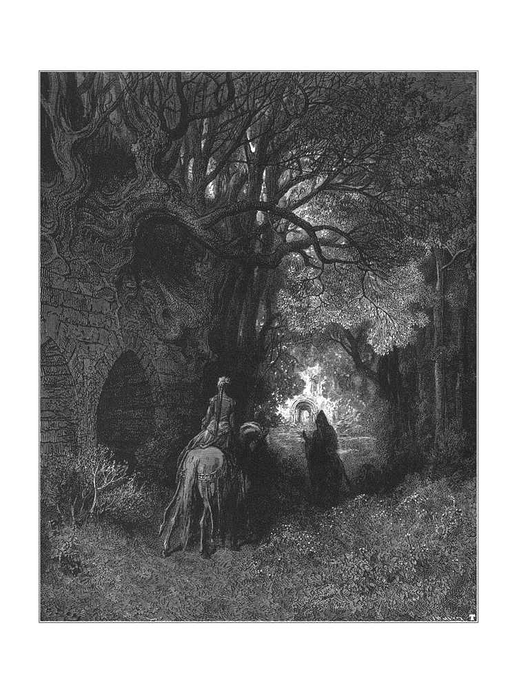
「ここが、かつては王宮のようであったカルンシュタイン城の成れの果てだ！」長い沈黙を破って、大きな窓から眼下の村落と、緩やかに起伏を描く広大な森を眺められながら、老将軍はおっしゃいました。
「悪しき一族め。そしてここで、その血塗られた歴史が刻まれておったのだ。滅びてなお、その邪欲で人類を苦しめ続けるとはなんたる罪深さか。ほら、あそこに見えるのがカルンシュタイン家の礼拝堂だ」
将軍は高台の斜面を少し下ったところに、木々の葉を透かして見えておりますゴシック風の建物の灰色の壁を指さされました。
「木樵の斧の音が聞こえるな。礼拝堂のまわりの木々を伐っておるんだろう。私の知りたいことを教えてもらえるかもしれん。カルンシュタイン女伯マーカラの墓の場所をな。貴族の話など、上流社会では家名が絶えた途端に忘れられるが、こうした田舎では、領主の一族の逸話はその地方の伝承として長く語り継がれるものだ」
「そのカルンシュタイン女伯マーカラだったらうちに肖像画があるが、見てみたいかね？」
「肖像画もいいがね、友よ」将軍はお答えになりました。「私は本人に会ったことがある。そして当初思っていたよりも早くきみを訪ねたのは、今われわれが向かっている礼拝堂を調べたかったからなのだ」
「え......。マーカラ女伯に会ったことがあるだって？」父は驚いて声を上げました。「だって、女伯は一世紀以上前に亡くなっているんだぞ」
「私はそうは聞いてはおらんがね」
「正直な話、将軍、私は何が何やらさっぱりだよ」父はそう答えて将軍の方を見ましたが、わたくしはその表情に一瞬だけ、さきほど馬車の中で見かけましたいぶかしげな表情が戻ったような気がいたしました。しかしながら、時おりそのお顔に怒りと嫌悪の表情を浮かべられることはあっても、老将軍の物腰に気まぐれなところは微塵もございませんでした。
その礼拝堂の、ゴシック様式ならではの大きなアーチをくぐりながら、将軍はお答えになりました。「私ももう長くはないが、この世にたった一つ、やり残したことがある――あの女に復讐をすることだ。天の恵みか、あのような相手にもまだこの世の武器が通用するのだ」
「復讐とは穏やかでないが、何をするつもりだね？」父はいよいよ驚いた顔で尋ねました。
「あの化け物を斬り刻んでやるのだ」将軍は凄まじい剣幕でそうお答えになり、地面をどんと一つ踏み鳴らされました。その音ががらんとした礼拝堂の廃墟に重苦しく響き渡り、それと同時に握りしめた拳を高く掲げられて、まるでその手に斧を握っておられるかのように、それを宙に振りかざされるのでした。
「何だって？」いよいよわけがわからなくなって、父が声を上げました。
「あの妖女の首を刎ねてやるのだ」
「首を刎ねるだって！」
「いかにも。手斧でも鋤でも、あの女の汚らわしい首を断つことのできるものならば何でもかまわん。詳しく話そう」将軍は怒りに震える声でそうお答えになり、歩みを早めながら言葉をお継ぎになりました。
「あそこの梁を椅子代わりにしよう。きみのお嬢さんも疲れておるだろう。ほら、座りなさい。私のおぞましい物語もあと少しで終わる」
雑草の生えた石畳の床に横たわる、どっしりとした四角い木の柱をベンチ代わりにして、私はひと休みできることをありがたく思いながら腰を下ろし、その間、将軍は礼拝堂の古い壁にしなだれかかった木枝を伐り落としていた木樵を呼び寄せられました。やがて斧を片手に、がっしりとした身体つきの一人の老人がわたくしたちの前に立ちました。
彼は礼拝堂の中に並ぶお墓については何も知りませんでした。しかしながら、この森の番人をしているとある老人がおりまして、その時はちょうど、三キロほど先にある牧師さまのお宅にお邪魔しているのだが、その老人ならばカルンシュタイン家のどの墓が誰のものなのか、ひとつ残らず知っていると申します。そして、もしもわたくしたちの馬を貸してもらえるならば、わずかな駄賃と引き替えに、三十分ほどでその老人を連れてくると申し出てくれたのでした。
「この森で長く働いているのかね？」父はその木樵の老人に尋ねました。
「へえ。そうでさあ」と、彼はこの地方の訛りで答えました。「生まれてこの方、その森番の下でぇ木ィさ伐っとります。あっしの父もそうでございましたし、そのまた父もといった具合に、代々そうやって暮らしております。この村に、ご先祖さまがたが住んでおった家もごぜえます」
「どうしてこの村は廃れてしまったのだ？」将軍がお尋ねになりました。
「吸血鬼が出たんでさあ、旦那さま。何匹かは墓を突き止めて、いつもの通りに調査をして※２、いつもの通り、首を刎ねるなり、杭を刺すなり、燃やすなりして退治してやったんですが、その間に村人の方もずいぶんと殺されちまっておりやした。
ところが、そうやって御上に退治をしてもらって、ずいぶんとたくさんの墓を暴いて、たくさんの吸血鬼からそのおぞましい命を奪ってやったんですがなあ、村は元には戻りませなんだ。その頃でさあ、とあるモラビアの貴族の旦那がたまたまこのあたりを旅しておって、村の事情を聞きつけなすった。あの国には吸血鬼退治の手練れが多いそうじゃが、この旦那もそうでしてな、この村にはびこる化け物を退治してやろうと言うてくだすった。
月の明るい夜でごぜえました。その貴人は陽が沈んですぐにこの礼拝堂の塔に昇りなすった。そこから墓地がはっきりと見渡せるんでごぜえます。ほれ、あすこの窓から見える墓地でさあ。その塔の上で旦那が墓地を見張っておると、吸血鬼が墓から出てきて、亜麻布の死装束を墓のそばに残して、餌食を求めて村の方へとするすると向かっていった。
そこまで見届けると、異国の旦那は塔を下りて、吸血鬼の亜麻の死装束を持ってまた塔の上に戻りなすった。戻ってきた吸血鬼は死装束がなくなっているのを見るや、塔のてっぺんにモラビアの旦那がおるのに気づいて、怒り狂ってわめきたてた。すると旅の旦那は、取り返したければ昇ってこいと挑発なすった。
挑発に乗った吸血鬼は、尖塔に昇っていった。そして奴が胸壁に辿り着いたその時、モラビアの旦那は剣のひと振りで化け物の頭を真っ二つに叩ッ斬りなすったんでさあ。奴は墓地に落ちましてな、旦那はそれを追って螺旋階段を下りていきなさると、化け物の首を刎ねてとどめを刺しなすった。次の日にその首と胴体を村に届けてくだすったんで、村人たちはそれに杭を打ち込んで燃やしたんでごぜえます。
このモラビアの貴族の旦那は、その頃のカルンシュタイン一族の家長から、カルンシュタイン女伯、マーカラの墓を改葬する許可を取りつけて、うまいことそれをどこかよそへ移しなすったんで、ほどなくその場所はきれいに忘れられてしもうたんでごぜえます」
「墓のあった場所はわかるかね？」将軍は勢い込んでお尋ねになりました。
木樵は首を振って微笑みました。
「知っておった者はもう一人も残っておりません。それに、遺体が移されたというのもあくまで噂で、誰もはっきりとしたことは知らんのです」
ここまで語ってしまうと、年老いた木樵は斧を置いて去っていき、わたくしたちはその場に残って、将軍の語る奇妙な物語に最後まで耳を傾けました。
第十四章 対決
･
「ベルタは見る見る悪くなっていった」将軍はお話をお続けになりました。「医者の治療もその病にはまるで効果はなかった。その時の私は、まだそれを何かの病気だと思っておったのだ。私が不安そうにしておるのを見て、その医者は別の医者の意見を聞いてみてはどうかと提案してきた。私はグラーツからもっと腕の良い医者を呼んだ。数日後にやって来たその医者は、学識があるだけではなく、善良で敬虔な男でもあった。一緒にベルタを診た後、二人は話し合いのために私の書斎に入っていった。
隣の部屋で二人に呼ばれるのを待っていると、この二人の紳士が、とても学問の議論をしているとは思えぬほどの剣幕で声を荒げるのが聞こえてくるではないか。何ごとかと扉をノックして入ってみると、グラーツから来た老医師が自説を主張しているところだった。もう一方の医者はそれに対して、声を上げて笑いながらあからさまに馬鹿にしたような口調で応じていた。私が現れたことでこの見苦しい一幕は終わり、口論も収まった。
『これは将軍』最初の方の医者が言った。『こちらの先生は医師ではなく呪い師が必要だとお考えのようですな。さすがに博識でいらっしゃる』
『失礼だが』と、グラーツから来た老医師はむっとした声で言った。『この件に関しての私の見解は、私なりの言葉で、また折をあらためてきちんとお伝えする。あいにくながら、将軍殿、私の医術は何のお役にも立てません。しかしながら、帰る前に一つだけ忠告をさせていただこう』
グラーツの老医師は考え深げにそう言うと、机について筆を動かし始めた。私がひどく落胆しつつ頭を下げ、部屋を出ていこうとした時、もう一人の医者が書きものをしている老医師を肩越しに指さし、それからひとつ肩をすくめてみせると、意味ありげにこめかみに指を当てた。
結局、振り出しに戻ってしまったわけだ。私は気もそぞろで、ふらふらと庭にさまよい出た。十分か十五分すると、グラーツの老医師が後を追ってきた。彼は後を尾けてきたことを詫び、しかしこのまま帰るのは良心が許さず、どうしてもあと少し言っておかなければならないことがあるという。いわく、自分は間違ってはいない、あのような症状を引き起こす病気は自然界にはあり得ない、そして、ベルタはすでに死に瀕しているのだという。しかしながら、余命はまだ一日か、ひょっとすると二日残っている。病状の進行を今すぐに止めることができれば、丁重に介護をし、治療を施すことで彼女の体力は回復する見込みはある。しかし今やすべては取り返しのつかない領域にある。もう一度発作に襲われれば、刻一刻と弱まりつつある生命の最後の輝きはかき消されてしまうだろう......。
『しかし先生、その発作というのはいったい何なのです？』
『すべてはこの手紙に書いてあります。これをあなたにお渡しするが、一つだけ必ず守ってほしいことがあるのです。最寄りの牧師に来ていただいて、彼のいる前で開封し、それより前には何があっても読まないと。そうでなければ、そこに書かれている生死を分かつ重大な真実を、あなたは一笑に付してしまうでしょう。もしも牧師に会うことができなければ、その時はお一人で読んでいただいてもかまいません』
老医師は別れ際になって、この件に関してたいそう造詣の深い人物がいるのだが、会ってみたくはないかと尋ねてきた。その手紙を読み終えたなら、他の何よりもその人物のことが気になるだろうという。そう申しつけてくれれば、自分がその人物を訪ねて事の次第を伝えておくから、是非とも会ってみなさいと親身になって言ってくれるので、私がそうお願いすると、彼は去っていった。
牧師は留守だったので、私はその手紙を一人で読んだ。別の折、別の件であったならば、確かに私は馬鹿馬鹿しいと思っていたかもしれない。しかし今は最愛のベルタの命がかかっているのだから、私は藁にもすがる思いだった。
きみからすれば、その博学なる医師の手紙の内容は非常識の極みだろう。癲狂院に入れられても仕方のないほどに常軌を逸している。なんと、ベルタは吸血鬼の餌食にされているというではないか！ 老医師によれば、喉にある刺されたような傷は吸血鬼特有の細長く尖った牙によるものであり、また、肌にくっきりと残る小さな青い痣らしきものは、あらゆる点から見てかの魔物の唇の跡であることは間違いなく、ベルタ本人の語る症状もすべて、同様の被害にあった者たちの記録とぴったりと一致するという。
吸血鬼などという超常的な存在をまったく信じていなかった私にしてみれば、この善良なる医師の突飛な自説は、天才と狂人は紙一重という言葉のよくある一例としか思えなかった。しかしながら他に打つ手もなかったので、私は一縷の望みをかけて手紙の指示に従った。
哀れなベルタを一本だけ蝋燭を灯した寝室に寝かせ、私はそちらに通じる衣装部屋の暗闇に隠れて、あの子がぐっすりと眠るまで見張っていた。戸口に立って、手紙の指示にあった通り、自前の剣を手近の机に置いたまま細く開けた扉の隙間から寝室を見つめていると、一時を少し回った頃、ひどくおぼろげな、大きな黒い物体が、寝台の脚の方に這い上っていくように見えた。それは見る見るうちにベルタの喉のところまで伸びていき、そこで瞬く間に膨らんで大きな塊になって、脈を打つようにどくどくと蠢いておった。
私はしばし石になったように立ち尽くしていたが、すぐに剣を片手に飛び出した。とたんに黒い化け物は寝台の脚の方にするすると引き下がっていき、するとなんと、寝台の一メートルほど先に立って、狡猾で残虐な、おぞましい目つきでこちらを睨めつけているのは、ミラーカではないか！
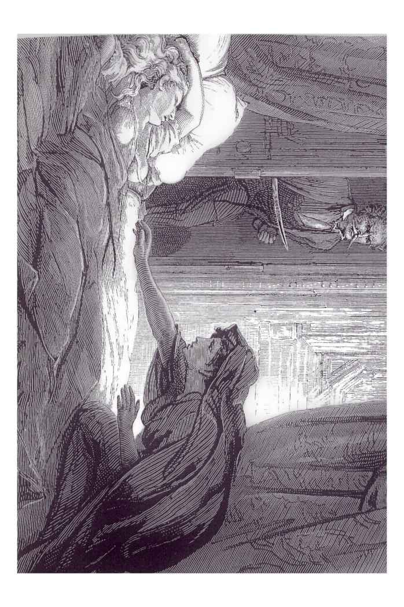
考える間もなく、私はとっさに剣で斬りかかった。しかしあの女は傷一つ負うことなく、扉の前に立っていた。ぞっとしながらも、私はその後を追って再び剣を振るったが、もうそこにあの女の姿はなく、剣は扉に当たって、刃の震える音をたてて弾かれた。
あの夜起こった出来事をすべて語ることはできん。城中が大騒ぎだった。妖女ミラーカは姿を消していた。しかし、その餌食となったベルタは見る見る様態が悪化し、夜明けを待たず、とうとう息を引き取ってしまった......」
老将軍は泣いておられました。父もわたくしもかけて差し上げる言葉もありませんでした。父はふらりとその場を離れて、堂内に並ぶ墓石の墓碑銘を読み始め、そのまま目当てのお墓を探しながら側廊に続く戸口に入っていきました。将軍は壁にもたれかかられて涙をお拭いになり、重々しい溜め息をおつきになりました。その時、ちょうどこちらに近づいてくるカーミラとペロドン夫人の声が聞こえまして、わたくしはほっといたしました。ですが、その声もすぐに途絶えてしまいました。
このひっそりとした廃墟の中に座っておりますと、わたくしはじわじわと背筋が寒くなってまいりました。カルンシュタイン家にまつわる奇怪なお話を聞かされたばかりですし、なんと申しましても、まわりで埃や蔦に覆われて朽ちておりますのはまさにその一族のお墓なのでございます。その上、そのお話の中で語られる出来事はことごとく、わたくし自身の謎めいた病に関係しているのでございますから、なおさら気味悪うございました。もの言わぬ城壁よりもさらに高く、そこここにそびえ立つ大樹の葉群にびっしりと空を覆われて、薄暗く、不気味なこの場所にカーミラとペロドン夫人が入ってきて、このもの悲しく不吉な風景をにぎわせてくれることはないのだと思うと、心が沈みました。
老将軍は目を地面に落とされたまま、割れた墓石の基部に手をついて身体を支えておられました。
とある戸口のアーチ部分に、ゴシック建築で好んで用いられる奇っ怪な魔物の像が刻まれているのですが、この時、その下にカーミラの美しい顔が現れまして、その優雅な姿がアーチをくぐって暗い堂内に入ってまいりますのを、わたくしは心の弾むような思いで見ておりました。
カーミラがとびきりの愛らしい笑顔を見せてくれましたので、それに応えてわたくしも立ち上がり、にっこりと頷きながら声をかけようとした、その時でございます。わたくしの横にいらっしゃいました将軍が叫び声を一つお上げになるや、先ほどの木樵の老人が残していった手斧をさっとつかまれて、勢いよく飛び出されたのです。それを見て、カーミラの端正な顔が醜く豹変いたしました。ほんの一瞬にしておぞましく変貌したその姿で、彼女は一歩下がって身を屈めました。
わたくしが悲鳴を上げるよりも早く、将軍はありったけの力で斧を振り下ろされましたが、カーミラはその一撃をかいくぐると、無傷のまま、その小さな手で将軍の手首をつかみました。将軍はしばらく手を振りほどこうともがいておられましたが、やがて握っていた手が開いて斧が地面に落ち、カーミラは姿を消しました。
将軍はよろよろと壁によりかかられました。灰色の髪は逆立ち、お顔にはびっしょりと汗が浮かんで、今にも息絶えてしまわれそうなご様子でございます。
その怖ろしい場面はほんの一瞬のことでございました。後になってわたくしが最初に覚えておりますのは、ペロドン夫人がわたくしの前に立っておられまして、焦れったそうに何度も何度もこうおっしゃっていたことでございます。「カーミラお嬢さまはどこにいらっしゃるの？」
「さあ......。わからないわ......あっちに行ったわ」わたくしはやっとのことでそう答えて、夫人が今しがた入っていらっしゃいました戸口を指さしました。「ほんの一分か二分前よ」
「でも、カーミラお嬢さまここに入ってからずっと、そちらの通路に立っておりましたけれど、お嬢さまは戻っていらっしゃらなかったですよ」
そうして夫人は戸口という戸口、通路という通路、窓という窓からカーミラの名前をお呼びになりましたが、返事はございませんでした。
「カーミラ......。あの娘はそう名乗っておるのか？」まだ動揺の収まらぬご様子で、将軍はお尋ねになりました。
「そうです。カーミラと」わたくしは答えました。
「間違いない。あれはミラーカだ。そしてはるか昔、カルンシュタイン女伯、マーカラと名乗っておった女と同じ人物だ。お嬢さん、一刻も早く、この呪われた地を離れなさい。牧師さまの家に行って、われわれが戻るまでそこにいなさい。早く！ お嬢さんは二度と再び、あの女の姿を目にすることはない。あの女はもうここにはおらん」
第十五章 試練と処刑
･
その時でございます。わたくしがこれまで見たこともないほど奇妙な外見の人物が、先ほどカーミラが逃げていった戸口から礼拝堂に入ってまいりました。身の丈は高く、胴はひょろりとして、背は曲がり、肩は角張っていて、真っ黒な服に身を包んでおりました。顔は茶色く、乾燥した肌には深い皺が刻まれております。頭には大きな草の葉を一本刺した風変わりな形の帽子をのせて、長い灰色の髪が肩に垂れかかっております。金縁の眼鏡をかけ、一方の足を引きずるようにしてのろのろと歩き、空を見上げたり、時に地面を見下ろしたりするその顔は、絶えず微笑んでいるようでございました。ほっそりと長い両の腕はだらりと垂れ下がり、その先には、ぶかぶかの古びた黒い手袋に包まれたひょろりとした手指が、まったく意味をなさない手振りをしているかのようにせわしく動いております。
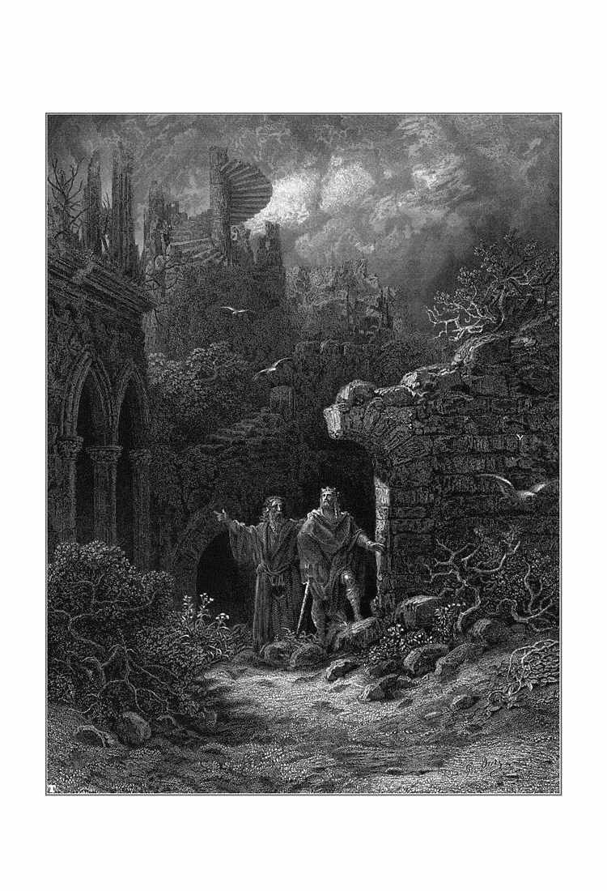
「あのお方か！」将軍はそうお声をお上げになると、見るからに嬉しそうなご様子で前にお進みになりました。
「これはこれは男爵さま。よくお出でくださいました。まさかこれほど早くお目にかかれるとは」
将軍は、この頃には堂内に戻っておりました父を手招きされ、男爵と呼ばれたその異様な風体の老紳士を父に引き合わせられました。きちんとした紹介が済むと、三人はすぐさま真剣な様子で話を始めました。見知らぬご老人は懐から筒状に巻いた一枚の紙を取り出され、手近の擦り切れた墓石の上に広げられました。それから手に鉛筆をお持ちになって、その紙の上で架空の点と点を結んで線を引いておられましたが、三人がたびたびそろって顔を上げては、建物のどこか一点を見ておりました様子からして、その紙は礼拝堂の見取り図のようでございました。老男爵はまるで教鞭を執られるかのようにそうして何かを説明されながら、時おり補足のために、黄ばんだ頁にびっしりと文字の書き込まれた薄汚れた小さな手帳の中身を読み上げておられました。
三人はわたくしのいる場所とは反対側の方へと歩いていき、その間も話をしておりました。それから歩幅を目安に距離を測り始めまして、やがてとうとう、三人はとある崩れかけた壁の前に並んで立ち、蔦を引き剥がしたり、表面の漆喰を杖の先で叩いたり、ある部分を擦ったり、別の場所を拳で叩いたりしながら、念入りに調べ始めました。やがてとうとう、そこに文字が浮き彫りにされた大きな大理石の石板があることが判明しました。
ほどなくあの木樵の老人が戻ってきて手伝ってくださいまして、やがて墓碑銘と、盾型の紋章が露わになりました。それは長らく失われていたカルンシュタイン女伯マーカラのお墓だったのでございます。
老将軍は、あまり熱心にお祈りをされる方とは存じ上げませんでしたが、ここで両手を掲げられて天を仰がれ、しばらく黙祷を捧げておられました。
「明日になったら」将軍がそうおっしゃっている声が聞こえました。「ここに判事にお越しいただいて、法に則って〈退魔審問〉を執り行うのだ」
それから金縁眼鏡の老紳士の方を振り向かれ、そのお手をお取りになって、感謝の気持ちを込めて両手でぎゅっと握りしめられました。
「男爵さま。なんとお礼を言っていいものやら。われわれ一同、感謝の言葉もありません。貴方さまのおかげで、この地域は一世紀以上の長きにわたって住人たちを苦しめてきた災厄から解放されるのです。天に感謝を！ 恐るべき魔物のねぐらが、ついに突き止められたのです」
父は老紳士を脇に連れていき、将軍もそちらについていかれました。わたくしの件について話をするために、声の届かないところに移動したのだとわかりましたが、案の定、やりとりを続けながら、三人はしきりにちらちらとこちらを見ておりました。
やがて父がこちらにやってまいりまして、わたくしに何度も口づけをし、礼拝堂の外に連れ出してこう言いました。
「ローラ。そろそろ帰る時間だ。城に戻る前に、ここからほんの少し行ったところにお住まいの牧師さまのお宅に寄って、お城までいっしょに来ていただけるようにお願いしよう」
牧師さまはご自宅にいらっしゃいまして、一緒にお城までお越しくださいました。わたくしはもうくたくたに疲れておりましたので、城に帰り着いた時にはほっとして喜んでおりましたが、カーミラの消息がいまだに知れないことを聞いて、くつろいでいた心も沈みました。廃墟となった礼拝堂の中で起こったあの怖ろしい場面については、わたくしは何の説明も聞かされてはおらず、どうやら父は、しばらくの間わたくしには秘密にしておくつもりのようでございました。
カーミラのいない空白は不安で埋められ、そのために、記憶の中のあの礼拝堂での場面はよりいっそう怖ろしく思えました。わたくしの不安を裏付けるかのように、その夜は特別に、二人の使用人とペロドン夫人がわたくしの部屋で寝ずの番をし、牧師さまと父が隣の衣装部屋で見張りをするという、ものものしいほどの用心がされました。
その夜、牧師さまが厳粛な儀式を執り行ってくださいましたが、その目的も、そしてわたくしが眠っている間の安全を確保するためのこのただならぬ備えの理由も、わたくしにはまったくわかりませんでした。
数日後に、すべて明らかになりました。
カーミラがいなくなったその日から、わたくしは悪夢を見なくなりました。
南北シュタイアーマルク、モラビア、シレジア、トルコ領セルビア、ポーランド、はてはロシアにまで広まっております恐るべき迷信につきましては、きっと先生もお聞き及びのことと存じます。いわゆる吸血鬼の迷信でございます。
人間の証言というものにいくらかでも価値があるのならば――高潔で見識ある方々ばかりからなる数多くの審問会で、慎重の上にも慎重を重ね、厳粛に、公正に報告され、そして他のどのような事件よりも膨大な記録として残されている証言が、いくらかでも重みを持つものならば、吸血鬼という現象が存在することは、否定することはおろか、疑いを抱くことすらも難しゅうございます。
わたくしの場合も、わたくし自身がこの目で目撃し、また身をもって経験したことを解き明かしてくれる説は何一つ聞いたことはございませんが、この地に古くから多くの証言が残っております吸血鬼の民間信仰に照らしてみますと、何もかもに納得がいくのでございます。
明くる日、カルンシュタイン家の礼拝堂で、公式に吸血鬼退治が執り行われました。マーカラ女伯の墓が暴かれ、シュピールスドルフ将軍と父は、今白日の下に晒された遺体の顔を見て、それが二人を騙した美しき客人であることを認めました。その顔は、死後百五十年以上が経過しているにもかかわらず、生命の温もりでほんのりと赤みが差しておりました。目は開いており、棺桶から死臭は漂ってまいりませんでした。
二人のお医者さまは、お一人は公式の立会人として、もうお一人は審問会を招致されたシュピールスドルフ将軍の要請でお越しになったのですが、お二人そろって、微かではありますが呼吸が認められること、そしてそれに呼応して心臓も鼓動を打っているという驚くべき事実を確認されました。手足の硬直はまったく見られず、肌にも弾力がありました。鉛の棺桶は二十センチほどの深さの血で満たされており、遺体はその中に浸かっておりました。これにて、世間で認められている吸血鬼現象の兆候と証拠がすべて出そろったのでございます。
亡骸は、古くからのしきたり通りに棺桶から引き上げられて心臓に鋭い杭を打ち込まれ、するとその瞬間、吸血鬼の口から、生ける者の断末魔の叫びに似た、耳をつんざくような悲鳴が上がりました。それから首が刎ねられ、切り口から大量の血が流れ出ました。次に胴体と首とは積み上げた薪木の上に置かれ、灰になるまで焼き尽くされ、その灰は河に撒かれて、流れに運ばれていきました。それ以来、この地域には吸血鬼の犠牲となる者は出ておりません。
父は〈退魔審問〉の報告書の写しを持っておりまして、それには、そこに記されていることが真実である証明として、吸血鬼退治の手続きに立ち会った方全員の署名が付されております。この章の最後のおぞましい場面の詳細は、この公式文書を要約したものでございます。
第十六章 終章
･
先生は、わたくしがこの手記のすべてを落ち着いて書いているものとお思いのことと存じます。いいえ、とてもそれどころではございません。あの事件のことを思い出すと、今でも動揺を禁じ得ません。再三にわたる先生の熱心なお願いがなければ、これから数ヶ月もの間わたくしの心を乱すであろうこのような手記を書くために、筆を取ることは決してございませんでしたでしょう。あの事件は、解決した後も何年もの間わたくしの心に影を落としておりまして、おかげでわたくしは昼も夜も名状しがたい不安に怯え続け、一人でいるのが恐くてたまりませんでした。
あの風変わりなヴォルデンベルグ男爵について、ここで少し付け加えておきます。マーカラ女伯のお墓を発見することができたのは、あのご老人がお持ちでいらっしゃいました希有な知識のおかげだったのですから。
男爵はグラーツにお住まいで、かつてはシュタイアーマルクに一族の立派なお屋敷があったのですが、今はその財産のわずかな残りでかろうじて生計をお立てになりつつ、驚くほどに多くの証言の残る吸血鬼伝承について、綿密な、骨の折れる調査に身を捧げてこられたのでございます。この問題について、重要なものからささいなものにいたるまで、あらゆる文献を集めていらっしゃいます。『死後呪術』、プレゴン『奇蹟考』、アウグスティヌス『死者論』、ヨハン・クリストフェル・ハレンブルグ『吸血鬼ノ科学的及ビ基督教的考察』等をはじめ、他にも数え切れないほどございますが、わたくしは父がお借りした数冊しか覚えておりません。また、吸血鬼裁判の膨大な判例集をすべてそろえておられまして、そこから一般的なものから特殊なものまで、吸血鬼の生態を律する習性を体系化されたのでございます。
ちなみに申し上げておきますと、この種の〈死より蘇りし者〉の特徴とされる死人のような蒼白な肌の色は、おどろおどろしい作り話に過ぎません。吸血鬼たちは、お墓の中や、世間に姿を見せる時などには、健康そうな外見をしております。棺桶の中で眠っているところを日光に晒されますと、〈退魔審問〉において、死して久しいカルンシュタイン女伯が吸血鬼であるという証拠となったいくつかの兆候をことごとく呈します。
吸血鬼たちがどうやって、毎日決まった時刻に、お墓にかぶせられた土もそのままに、棺桶の蓋も動かさず、死装束を乱すこともなく、お墓を出入りしているのか。これは今も解明されぬまま、謎とされております。吸血鬼の、生と死とを併せ持つ存在は、毎日自らのお墓の中で眠ることによって維持されます。人間の生き血に対するおぞましい欲望が、覚きている間の彼らの活力の源となるのです。
吸血鬼は特定の誰かに、熱い恋情にも似た激しさで惹きつけられることがございます。これと狙いを定めた人物と近づきになるまでには、それこそ何百通りもの邪魔が入る恐れがございますから、彼らはその相手を自分のものにするために、どこまでも辛抱強く、周到な計画を練ります。そして狙った獲物の生命を吸い尽くすまでは、決して諦めません。しかしこうした場合、吸血鬼は美食家よろしくその凶々しい飢えをじっくりと味わい、まるで手練に長けた殿方がご婦人に近づいていくように、じわじわと相手との距離を縮めていくことで、その悦びをさらに高めるのです。こうした例では、吸血鬼は相手の人物の共感や同意のようなものを求めているようでございます。通常は真っ直ぐに獲物に近づき、力尽くで相手をねじ伏せて首を絞め、たいていは一回の「食事」で生気を吸い尽くしてしまいます。
吸血鬼の中には、特別な習性を持つ者もあるようでございます。わたくしがここに記しました例では、マーカラ女伯は、本名ではないにせよ、少なくとももとの名前に使われている文字をそのまま、一文字も足すことも削ることもなく、順番だけを入れ替えて使わなければならないという制約があったようです。マーカラ（Mircalla）もカーミラ（Carmilla）も、ミラーカ（Millarca）も、使われている文字は同じでございます。
父はカーミラが退治された後も二、三週間お城に留まっておられましたヴォルデンベルグ男爵に、あのモラビアの貴人とカルンシュタインの吸血鬼のお話を伝え、それから、どうやって長らく隠されてきたマーカラ女伯の墓の正確な場所を発見したのかと尋ねました。
男爵さまはその異様なお顔をくしゃりと縮められ、謎めいた笑みを浮かべられました。そうして笑顔のまま、擦り切れた眼鏡入れに目を落とされ、それをもぞもぞといじっておられましたが、やがて顔をお上げになって、こうおっしゃいました。
「わしはあの偉人の残した手記やら文書やらを、たくさん持っておりますのじゃ。その中でもひときわ興味深いのが、今の民話に出てきたカルンシュタインを訪れたことについて記したものでしてな。もちろん、その民話の方は語り継がれていくうちに少しばかり歪んでしもうておりますがのう。モラビアの貴人ということになってはおるが、確かにあの男はあの国に移り住んでおったし、貴族でもあったが、しかし本当はこの北シュタイアーマルクの生まれなのじゃよ。
青年時代、あの男はカルンシュタイン女伯マーカラと熱烈に愛し合っておった――そう言えば十分ですじゃろう。女伯に若くして先立たれ、男は癒やされることのない悲しみに苛まれた。吸血鬼には同族を増やし、広めようとする性質があるんじゃが、しかしそれにはおぞましい法則があることがわかっておりましてな。
まずはじめに、あの魔物とはまったく無縁の土地があるとする。最初の一匹はどこからやって来て、そしてそこからどうやって増殖するのか？ お教えしよう。多少なりとも邪な心を持つ者が自ら命を絶つ。自殺者というのは、特定の条件がそろうと吸血鬼になりますんじゃ。こうして魔性に変わった者が生ける者たちの眠りを襲う。襲われた者たちが死ぬと、ほぼ確実に、その者たちは墓の中で吸血鬼に変化するのですな。
美しきマーカラ女伯もこうした魔物の一匹の歯牙にかけられて、吸血鬼になってしもうたんじゃ。
そのモラビアの貴人はヴォルデンベルグ卿といいましてな、そう聞けばおわかりじゃろうが、わしのご先祖さまなのじゃよ。卿はほどなくこの事実を知って、そしてあの魔物どもの研究に身を捧げるうちに、さらに多くのことを学んでいった。
何よりも重大なことに、卿は遅かれ早かれ、かつて自分が愛を捧げた女伯に吸血鬼の疑いがかかるかもしれないという結論にいたった。もしそうなれば、女伯の亡骸が死後の処刑で冒瀆され、辱められるのではないか。そう思うと怖ろしゅうて怖ろしゅうてたまらんかったのじゃろう。
卿は興味深い文書を一つ残しておりましてな、そこには、生と死とを併せ持つその存在を奪われた吸血鬼は、さらにおぞましい世界へと堕ちることが証明されておる。そこでじゃ、卿はかつて愛したマーカラをこの暴虐から救う決心をした。
卿はとある計画を練って、この地に旅して女伯の遺体を移す芝居を打ち、その墓を世間の目から完全に隠した。やがて老年にさしかかった卿は、歳月の高みから自分が去ろうとしているこの世界を振り返り、そして若い頃とは違う心で自分のしたことをあらためて考えてみて、そら怖ろしくなった。卿は心をあらため、わしをあの墓の場所へと導いた地図やら文書やらを記し、自分の為した欺瞞を告白する手記を残した。この件について卿がそれ以上の償いをするつもりであったにしても、その機会は死によって奪われてしもうた。そして今、その遠い子孫の手によって、遅きに失したとはいえ、あの魔物のねぐらがついに暴かれたというわけじゃ」
わたくしたちはもうしばらくお話を続けまして、そしてその会話の中で、男爵はこうおっしゃいました。
「吸血鬼の特徴の一つに、その握力の強さがある。マーカラのほっそりした手は、斧を振り下ろした将軍の手首を鋼の万力のごとくに締めつけておったじゃろう？ しかしその呪われた力は握力だけには留まらん。その手につかまれた部分は痺れが残ってなかなか癒えず、ついに治らんこともあるのじゃ」
翌年の春、父はわたくしをイタリアへ旅行に連れていってくれました。そうしてそのまま一年以上、わたくしたちはお城を離れておりました。あの事件の恐怖が薄れるまで、長い時間がかかりました。それでも、今日この日にいたってもなお、カーミラの面影が――ある時は、お茶目で物憂げな、美しい少女の顔で、またある時は、あの礼拝堂跡で見ました、おぞましく歪んだ魔性の顔で――わたくしの心に蘇ってまいります。居間の扉の向こうにカーミラの軽やかな足音が聞こえた気がして、物思いからはっと我に返ることが、今でもたびたびございます。
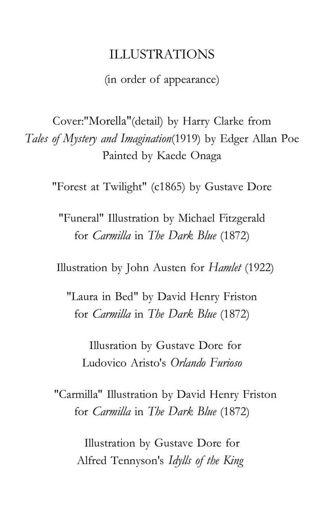
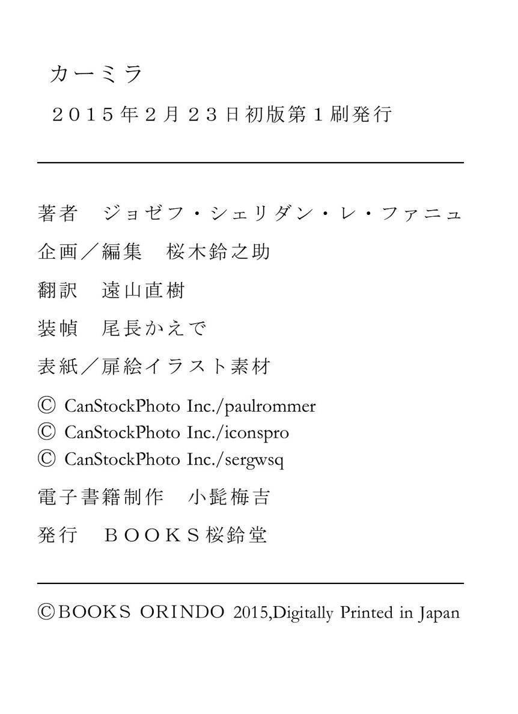